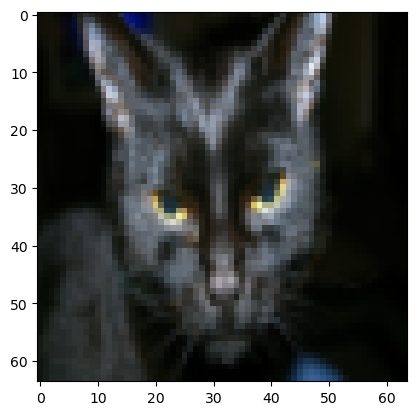
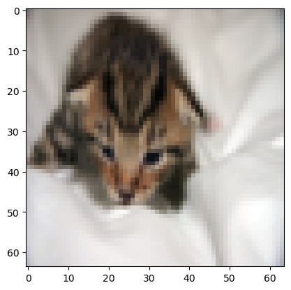

As you probably know, deep learning has already transformed traditional internet businesses like web search and advertising. But deep learning is also enabling brand new products and businesses and ways of helping people to be created. Everything ranging from better healthcare, where deep learning is getting really good at reading X-ray images to delivering personalized education, to precision agriculture, to even self-driving cars and many others. If you want to learn the tools of deep learning and be able to apply them to build these amazing things, I want to help you get there.
Over the next decade, I think all of us have an opportunity to build an amazing world, an amazing society, that is AI-powered, and I hope that you will play a big role in the creation of this AI-powered society.
I think that AI is the new electricity. Starting about 100 years ago, the electrification of our society transformed every major industry, everything ranging from transportation, and manufacturing, to healthcare, to communications and many more. And I think that today, we see a surprisingly clear path for AI to bring about an equally big transformation. And of course, the part of AI that is rising rapidly and driving a lot of these developments is deep learning. So today, deep learning is one of the most highly sought-after skills in the technology world.
And through this course, and a few courses after this one, I want to help you to gain and master those skills. So here is what you will learn in this sequence of courses also called a specialization.
What you will learn
Neural Networks and Deep Learning.
In this first course, from Chapter 1 Introduction to Deep Learning to Chapter 4 Deep Neural Networks, you will learn how to build a neural network, including a deep neural network, and how to train it on data. And at the end of this course, you will be able to build a deep neural network to recognize, guess what? Cats. For some reason, there is a cat meme running around in deep learning. And so, following tradition in this first course, we will build a cat recognizer.
Improving Deep Neural Networks: Hyperparameter tuning, Regularization and Optimization.
In the second course, you will learn about the practical aspects of deep learning. So you will learn, now that you have built a neural network, how actually to get it to perform well. So you learn about hyperparameter tuning, regularization, how to diagnose bias and variants, and advanced optimization algorithms, like momentum, armrest, prop, and the ad authorization algorithm. Sometimes it seems like there is a lot of tuning, even some black magic in how you build a new network.
Structuring your Machine Learning project.
In the third course, you will learn how to structure your machine learning project. It turns out that the strategy for building a machine learning system has changed in the era of deep learning. So for example, the way you split your data into train, development or dev, also called holdout cross-validation sets, and test sets, has changed in the era of deep learning. So what are the new best practices for doing that? Whether your training set and your test come from different distributions, that is happening a lot more in the era of deep learning. So, how do you deal with that?
And if you have heard of end-to-end deep learning, you will also learn more about that in this third course, and see when you should use it and maybe when you shouldn’t. The material in this third course is relatively unique. I am going to share with you a lot of the hard-won lessons that I have learned, building and shipping quite a lot of deep-learning products. As far as I know, this is largely material that is not taught in most universities that have deep learning courses. But I think it will really help you to get your deep learning systems to work well.
Convolutional Neural Networks.
Convolutional networks, or convolutional neural networks, often abbreviated CNNs, are often applied to images. So you will learn how to build these models in course four.
Natural Language Processing: Building sequence models.
In course five, you will learn sequence models and how to apply them to natural language processing and other problems. So sequence models include models like recurrent neural networks, abbreviated RNNs, and LSTM models, which stand for a long short-term memory model. You will learn what these terms mean in course five and be able to apply them to natural language processing problems.
So you will learn these models in course five and be able to apply them to sequence data. So for example, natural language is just a sequence of words, and you will also understand how these models can be applied to speech recognition, to music generation, and other problems.
So through these courses, you will learn the tools of deep learning, you will be able to apply them to build amazing things, and I hope many of you through this will also be able to advance your career. So with that, let’s get started.
Analyze the major trends driving the rise of deep learning, and give examples of where and how it is applied today.
Learning Objectives
Discuss the major trends driving the rise of deep learning.
Explain how deep learning is applied to supervised learning.
List the major categories of models (CNNs, RNNs, etc.), and when they should be applied.
Assess appropriate use cases for deep learning.
What is a Neural Network? Please watch this video to find more information.
Here, you have a neural network with four inputs. So the input features might be the size, number of bedrooms, the zip code or postal code, and the wealth of the neighbourhood. And so given these input features, the job of the neural network will be to predict the price \(y\). Notice also that each of these circles, are called hidden units in the neural network, that each of them takes its inputs all four input features. So for example, rather than saying this first node represents family size and family size depends only on the features \(x_1\) and \(x_2\). Instead, we’re going to say, well neural network, you decide whatever you want this node to be. And we’ll give you all four input features to compute whatever you want. So the input layer and this layer in the middle of the neural network are densely connected. Because every input feature is connected to every one of these circles in the middle. And the remarkable thing about neural networks is that, given enough data about \(x\) and \(y\), given enough training examples with both \(x\) and \(y\), neural networks are remarkably good at figuring out functions that accurately map from \(x\) to \(y\).
Practice Quiz: True or false? As explained in this lecture, every input layer feature is interconnected with every hidden layer feature. ____________
There’s been a lot of hype about neural networks. And perhaps some of that hype is justified, given how well they’re working. But it turns out that so far, almost all the economic value created by neural networks has been through one type of machine learning, called supervised learning. Let’s see what that means, and let’s go over some examples.
Input (x)
Output (y)
Application
Method
Home features
Price
Real Estate
Standard NN
Ad, Users Info
Click on ad? (0/1)
Online Advertising
Standard NN
Image
Object (1, …, 1000)
Photo tagging
CNN
Audio
Text transcript
Speech recognition
RNN
English
Chinese
Machine translation
RNN
Image, Radar Info
Position of the other cars
Autonomous driving
Custom / Hybrid
In supervised learning, you have some input \(x\), and you want to learn a function mapping to some output \(y\). So for example, just now we saw the housing price prediction application where you input some features of a home and try to output or estimate the price \(y\).
Here are some other examples of how neural networks have been applied very effectively.
Possibly the single most lucrative application of deep learning today is online advertising. It may not be the most inspiring, but it is certainly very lucrative, by inputting information about an ad into the website it’s thinking of showing you, some information about the user, neural networks have gotten very good at predicting whether or not you click on an ad. And by showing you and showing users the ads that you are most likely to click on, this has been an incredibly lucrative application of neural networks at multiple companies. The ability to show you ads that you’re more likely to click on has a direct impact on the bottom line of some of the very large online advertising companies.
Computer vision has also made huge strides in the last several years, mostly due to deep learning. So you might input an image and want to output an index, say from \(1\) to \(1,000\) trying to tell you if this picture, might be any one of, say 1000 different images. So, you might use that for photo tagging.
I think the recent progress in speech recognition has also been very exciting, where you can now input an audio clip to a neural network, and have it output a text transcript.
Machine translation has also made huge strides thanks to deep learning where now you can have a neural network input an English sentence and directly output say, a Chinese sentence.
In autonomous driving, you might input an image, say a picture of what’s in front of your car as well as some information from a radar, and based on that, maybe a neural network can be trained to tell you the position of the other cars on the road. So this becomes a key component in autonomous driving systems. So a lot of the value creation through neural networks has been through cleverly selecting what should be \(x\) and what should be \(y\) for your particular problem, and then fitting this supervised learning component into often a bigger system such as an autonomous vehicle.
It turns out that slightly different types of neural networks are useful for different applications. For example, in the real estate application, we use a universally standard neural network architecture. Maybe for real estate and online advertising might be a relatively standard neural network, like the one that we saw.
For image applications, we’ll often use convolutional neural networks, often abbreviated CNN.
And for sequence data. So for example, audio has a temporal component, right? Audio is played out over time, so audio is most naturally represented as a one-dimensional time series or as a one-dimensional temporal sequence. And so for sequence data, you often use an RNN, a recurrent neural network. Language, English and Chinese, the alphabet or the words come one at a time. So language is also most naturally represented as sequence data. And so more complex versions of RNNs are often used for these applications.
And then, for more complex applications, like autonomous driving, where you have an image, that might suggest more of a CNN, convolution neural network, structure and radar info which is something quite different. You might end up with a more custom, or some more complex, hybrid neural network architecture.
Just to be a bit more concrete about what are the standard, CNN and RNN architectures. So in the literature you might have seen pictures like this. Here shows an example of a standard Neural Network, Convolutional Neural Network and Recurrent Neural Network, and we’ll see in a later course exactly what this picture means and how can you implement this.
Convolutional networks are often used for image data.
Recurrent neural networks are very good for this type of one-dimensional sequence data that has maybe a temporal component.
You might also have heard about applications of machine learning to both Structured Data and Unstructured Data. Here’s what the terms mean.
Structured Data means basically databases of data.
For example, in housing price prediction, you might have a database or a column that tells you the size and the number of bedrooms. So, this is structured data, or in predicting whether or not a user will click on an ad, you might have information about the user, such as the age, some information about the ad, and then labels why that you’re trying to predict. So that’s structured data, meaning that each of the features, such as the size of the house, the number of bedrooms, or the age of a user, has a very well-defined meaning.
Unstructured data refers to things like audio, raw audio, or images where you might want to recognize what’s in the image or text. Here the features might be the pixel values in an image or the individual words in a piece of text.
Historically, it has been much harder for computers to make sense of unstructured data compared to structured data. And in fact the human race has evolved to be very good at understanding audio cues as well as images. And then the text was a more recent invention, but people are just good at interpreting unstructured data.
And so one of the most exciting things about the rise of neural networks is that, thanks to deep learning, thanks to neural networks, computers are now much better at interpreting unstructured data as well compared to just a few years ago. And this creates opportunities for many new exciting applications that use speech recognition, image recognition, and natural language processing on text, much more than was possible even just two or three years ago. I think because people have a natural empathy for understanding unstructured data, you might hear about neural network successes on unstructured data more in the media because it’s just cool when the neural network recognizes a cat. We all like that, and we all know what that means.
But it turns out that a lot of short term economic value that neural networks are creating has also been on structured data, such as much better advertising systems, much better profit recommendations, and just a much better ability to process the giant databases that many companies have to make accurate predictions from them. So in this course, a lot of the techniques we’ll go over will apply to both structured data and to unstructured data. For the purposes of explaining the algorithms, we will draw a little bit more on examples that use unstructured data. But as you think through applications of neural networks within your own team I hope you find both uses for them in both structured and unstructured data.
If you want to hit a very high level of performance then you need two things:
often you need to be able to train a big enough neural network to take advantage of the huge amount of data;
you do need a lot of data;
summary: Both the size of the neural network and the scale of data are crucial for achieving high performance.
so we often say that scale has been driving deep learning progress. Scale means both the size of the neural network, meaning just a new network, a lot of hidden units, a lot of parameters, a lot of connections, as well as the scale of the data.
In fact, today one of the most reliable ways to get better performance in a neural network is often to either train a bigger network or throw more data at it and that only works up to a point because eventually you run out of data or eventually then your network is so big that it takes too long to train.
Small Training Data Regime:
In cases with limited training data, the effectiveness of machine learning algorithms is less predictable.
Performance often relies more on the practitioner’s skill in feature engineering.
Example: Support Vector Machines (SVM) may outperform larger neural networks in small data scenarios due to better feature engineering.
Large Training Data Regime:
With substantial training data, large neural networks consistently outperform other algorithms.
The “Very Large \(m\) Regime” shows a clear dominance of large neural networks in handling big data.
Data Availability: The digital era has led to an exponential increase in data.
Computation
Algorithm Performance: Traditional algorithms vs. neural networks in handling large data sets.
As data increases, traditional algorithms plateau in performance, while neural networks continue to improve.
Early Days of Modern Deep Learning:
Focus on ‘Scaled Data’ and ‘Computational Scale’: The ability to process large data sets with advanced computational power (CPUs/GPUs) was foundational.
Highlighting the Importance: These factors were crucial for training large neural networks efficiently.
But increasingly, especially in the last several years, we’ve seen tremendous algorithmic innovation. Interestingly, many of the algorithmic innovations have been about trying to make neural networks run much faster.
The Shift to Algorithmic Innovation:
Recent Years: Marked by significant improvements in the algorithms themselves.
The Goal: To enhance the speed and efficiency of neural network training and operation.
Case Study: Activation Functions in Neural Networks.
Problem with Sigmoid Function: Slow learning due to gradients nearing zero in certain regions.
Solution: Switching to the Rectified Linear Unit (ReLU) function.
Impact: Faster gradient descent, leading to quicker learning and more efficient computation.
As a concrete example, one of the huge breakthroughs in neural networks has been switching from a sigmoid function. It turns out that one of the problems of using sigmoid functions and machine learning is that there are these regions here where the slope of the function where the gradient is nearly zero and so learning becomes really slow, because when you implement gradient descent and the gradient is zero the parameters just change very slowly. And so, learning is very slow whereas by changing what’s called the activation function the neural network uses this function called the value function of the rectified linear unit, or RELU, the gradient is equal to \(1\) for all positive values of input. And so, the gradient is much less likely to gradually shrink to \(0\) and the gradient here. the slope of this line is \(0\) on the left but it turns out that just switching from the sigmoid function to the RELU function has made an algorithm called gradient descent work much faster and so this is an example of maybe relatively simple algorithmic innovation. Ultimately, the impact of this algorithmic innovation was it really helped computation. So there are actually quite a lot of examples like this of where we change the algorithm because it allows that code to run much faster and this allows us to train bigger neural networks, or to do so the reason will decline even when we have a large network roam all the data.
The other reason that fast computation is important is that it turns out the process of training your network is very intuitive. Often, you have an idea for a neural network architecture and so you implement your idea and code. Implementing your idea then lets you run an experiment which tells you how well your neural network does and then by looking at it you go back to change the details of your new network and then you go around this circle over and over and when your new network takes a long time to train it just takes a long time to go around this cycle and there’s a huge difference in your productivity.
Building effective neural networks when you can have an idea and try it and see the work in ten minutes, or maybe at most a day, versus if you’ve to train your neural network for a month, which sometimes does happen, because you get a result back you know in ten minutes or maybe in a day you should just try a lot more ideas and be much more likely to discover in your network. And it works well for your application and so faster computation has really helped in terms of speeding up the rate at which you can get an experimental result back and this has really helped both practitioners of neural networks as well as researchers working and deep learning iterate much faster and improve your ideas much faster.
Practical Implications:
Faster Training Cycles: Allows for more rapid testing and refinement of neural network models.
Increased Productivity: Shorter training times enable quicker experimentation and innovation.
The Cycle of Neural Network Development:
The Iterative Process: From conceptualization to implementation, experimentation, and refinement.
Real-World Impact: Faster computation allows for more agile development cycles.
So, all this has also been a huge boon to the entire deep learning research community which has been incredible with just inventing new algorithms and making nonstop progress on that front. So these are some of the forces powering the rise of deep learning but the good news is that these forces are still working powerfully to make deep learning even better. Take data… society is still throwing out more digital data. Or take computation, with the rise of specialized hardware like GPUs and faster networking many types of hardware, I’m actually quite confident that our ability to do very large neural networks from a computation point of view will keep on getting better and take algorithms relative to learning research communities are continuously phenomenal at elevating on the algorithms front.
Which of the following are reasons that didn’t allow Deep Learning to be developed during the ’80s? Choose all that apply.
A. People were afraid of a machine rebellion.
B. The theoretical tools didn’t exist during the 80’s.
C. Interesting applications such as image recognition require large amounts of data that were not available.
D. Limited computational power.
When building a neural network to predict housing price from features like size, the number of bedrooms, zip code, and wealth, it is necessary to come up with other features in between input and output like family size and school quality. True/False? __________
Images for cat recognition is an example of “structured” data, because it is represented as a structured array in a computer. True/False? __________
A dataset is composed of age and weight data for several people. This dataset is an example of “structured” data because it is represented as an array in a computer. True/False? __________
Why can an RNN (Recurrent Neural Network) be used to create English captions to French movies? Choose all that apply.
A. The RNN requires a small number of examples.
B. RNNs are much more powerful than a Convolutional neural Network (CNN).
C. The RNN is applicable since the input and output of the problem are sequences.
D. It can be trained as a supervised learning problem.
Answer Questions 6 - 7 according the figure shows below:
From the given diagram, we can deduce that Large NN models are always better than traditional learning algorithms. True/False? __________
Assuming the trends described in the figure are accurate. The performance of a NN depends only on the size of the NN. True/False? __________
Click here for answers!
CD
C. Yes. Many resources used today to train Deep Learning projects come from the fact that our society digitizes almost everything, creating a large dataset to train Deep Learning models.
D. Yes. Deep Learning methods need a lot of computational power, and only recently the use of GPUs has accelerated the experimentation with Deep Learning.
False
A neural network figures out by itself the “features” in between using the samples used to train it.
False
Yes. Images for cat recognition are examples of “unstructured” data.
True
Yes, the sequences can be represented as arrays in a computer. This is an example of structured data.
CD
C. Yes, an RNN can map from a sequence of sounds (or audio files) to a sequence of words (the caption).
D. Yes, the data can be used as x (movie audio) to y (caption text).
False
Yes, when the amount of data is not large the performance of traditional learning algorithms is shown to be the same as NN.
Set up a machine learning problem with a neural network mindset and use vectorization to speed up your models.
Learning Objectives
Build a logistic regression model structured as a shallow neural network.
Build the general architecture of a learning algorithm, including parameter initialization, cost function and gradient calculation, and optimization implementation (gradient descent).
Implement computationally efficient and highly vectorized versions of models.
Compute derivatives for logistic regression, using a backpropagation mindset.
Use Numpy functions and Numpy matrix/vector operations.
Work with iPython Notebooks.
Implement vectorization across multiple training examples.
Logistic regression is an algorithm for binary classification. So let’s start by setting up the problem.
Here’s an example of a binary classification problem. You might have an input of an image, and want to output a label to recognize this image as either being a cat, in which case you output 1, or not-cat in which case you output 0, and we’re going to use \(y\) to denote the output label. Let’s look at how an image is represented in a computer.
To store an image your computer stores three separate matrices corresponding to the red, green, and blue color channels of this image.
So if your input image is 64 pixels by 64 pixels (\(64\times64\)), then you would have three 64 by 64 matrices corresponding to the red, green and blue pixel intensity values for your images, which can be presented as \(64\times64\times3\). Although to make this as an small example here, I drew these as much smaller matrices, so these are actually 5 by 4 matrices rather than 64 by 64 (\(5\times4\times3\)).
So to turn these pixel intensity values into a feature vector, what we’re going to do is unroll all of these pixel values into an input feature vector \(x\). So to unroll all these pixel intensity values into a feature vector, what we’re going to do is define a feature vector \(x\) corresponding to this image as follows.
We’re just going to take all the pixel values 255, 231, and so on until we’ve listed all the red pixels.
And then eventually 255, 134 and so on until we get a long feature vector listing out all the red, green and blue pixel intensity values of this image.
If this image is a 64 by 64 image, the total dimension of this vector \(x\) will be \(64\times64\times3\) because that’s the total numbers we have in all of these matrixes. Which in this case, turns out to be 12,288, that’s what you get if you multiply all those numbers. Using \(n_x = 12,288\) to represent the dimension of the input features \(x\). And sometimes for brevity, I will also just use lowercase \(n\) to represent the dimension of this input feature vector.
So in binary classification, our goal is to learn a classifier that can input an image represented by this feature vector \(x\). And predict whether the corresponding label \(y\) is 1 or 0, that is, whether this is a cat image or a non-cat image.
Let’s now lay out some of the notation that we’ll use throughout the rest of this book.
A single training example is represented by a pair \((x,y)\), where \(x\) is an \(x\)-dimensional feature vector \((x \in \mathbb{R}^{n_x})\) and \(y\), the label, is either 0 or 1 \((y \in \{0,1\})\).
Logistic regression is a learning algorithm used in a supervised learning problem when the output \(y\) are all either zero or one. The goal of logistic regression is to minimize the error between its predictions and training data.
In this section, we will go over logistic regression. This is a learning algorithm that you use when the output labels \(Y\) in a supervised learning problem are all either zero or one, so for binary classification problems.
Example: Cat vs No-cat
Given an input feature vector \(x\) maybe corresponding to an image that you want to recognize as either a cat picture or not a cat picture, you want an algorithm that can output a prediction, which we will call y hat \((\hat{y})\), which is your estimate of \(y\). More formally, you want \(\hat{y}\) to be the probability of the chance that, \(\hat{y} = \mathrm{P}(y=1\mid x)\) (\(y\) is equal to one given the input features \(x\)). So in other words, if \(x\) is a picture, you want \(\hat{y}\) to tell you, what is the chance that this is a cat picture.
The input features vector: \(x \in \mathbb{R}^{n_x}\), where \(n_x\) is the number of features. That is, \(x\) is an \(n_x\) dimensional vector.
The training label: \(y \in \{0,1\}\).
The weights: \(w \in \mathbb{R}^{n_x}\). \(w\) is also an \(n_x\) dimensional vector.
The threshold: \(b \in \mathbb{R}\)
Summary: given that the parameters of logistic regression will be \(w\) which is also an \(n_x\) dimensional vector \((w \in \mathbb{R}^{n_x})\), together with \(b\) which is just a real number \((b \in \mathbb{R})\).
So given an input \(x\) and the parameters \(w\) and \(b\), how do we generate the output \(\hat{y}\)?
\((w^T x + b)\) is a linear function \((ax+b)\), but since we are looking for a probability constraint between \([0,1]\), the sigmoid function is used. The function is bounded between \([0,1]\) as shown in the graph above.
If \(z\) is a very large positive number, then \(\sigma(z)\) will be close to 1.
If \(z\) is a very large negative number, then \(\sigma(z)\) will be close to 0.
If \(z = 0\), then \(\sigma(z) = 0.5\)
So when you implement logistic regression, your job is to try to learn parameters \(w\) and \(b\) so that \(\hat{y}\) becomes a good estimate of the chance of \(y\) being equal to one.
Practice Quiz
Q: What are the parameters of logistic regression?
A. \(w\), an identity vector, and \(b\), a real number.
B. \(w\), an \(n_x\) dimensional vector, and \(b\), a real number.
C. \(w\) and \(b\), both \(n_x\) dimensional vector.
D. \(w\) and \(b\), both real number.
In the previous section, you saw the logistic regression model to train the parameters \(w\) and \(b\), of logistic regression model. You need to define a cost function, let’s take a look at the cost function.
To learn parameters for your model, you’re given a training set of training examples and it seems natural that you want to find parameters \(w\) and \(b\). So that at least on the training set, the outputs you have the predictions you have on the training set, which that the preicition values will be close to the true labels y that you got in the training set.
And of course for each training example, we’re using these superscripts with round brackets with parentheses to index into different train examples. Your prediction on training example \(i\):
This function \(\mathcal{L}\) is called the loss function is a function will need to define to measure how good our output \(\hat{y}\) is when the true label is \(y\). The loss function measures the discrepancy between the prediction \(\hat{y}\) and the desired output \(y\). In other words, the loss function computes the error for a single training example.
Keep in mind that if we are using squared error then you want to square error to be as small as possible. And with this logistic regression, lost function will also want this to be as small as possible. To understand why this makes sense, let’s look at the two cases:
If \(y = 1\), then \(\mathcal{L}(\hat{y}, y) = - \text{log}(\hat{y})\). So you want \(- \text{log}(\hat{y})\) to be as small as possible, that means you want \(\text{log}(\hat{y})\) to be as big as possible, and that means you want \(\hat{y}\) to be large. But because \(\hat{y}\) is you know the sigmoid function, it can never be bigger than one. So this is saying that if \(y = 1\), you want \(\hat{y}\) to be as big as possible, but it can’t ever be bigger than one. So saying you want, \(\hat{y}\) to be close to one as well.
If \(y = 0\), then \(\mathcal{L}(\hat{y}, y) = - \text{log}(1-\hat{y})\). So if in your learning procedure you try to make the loss function small. What this means is that you want, \(\text{log}(1-\hat{y})\) to be large. And then through a similar piece of reasoning, you can conclude that this loss function is trying to make \(\hat{y}\) as small as possible, and again, because \(\hat{y} \in \{0,1\}\) . This is saying that if \(y = 0\) then your loss function will push the parameters to make \(\hat{y}\) as close to zero as possible.
We just gave here a somewhat informal justification for this particular loss function, we will provide more details later to give a more formal justification for \(y\). In logistic regression, we like to use the loss function with this particular form.
Why DO NOT use the squared error, \(\mathcal{L}(\hat{y}, y)= \dfrac{1}{2}(\hat{y}-y)^2\), in the loss function?
It turns out that you could do this, but in logistic regression people don’t usually do this. Because when you come to learn the parameters, you find that the optimization problem, which becomes non-convex. So you end up with optimization problem, you are with multiple local optima. So gradient descent, may not find a global optimum.
Squared eror seems like it might be a reasonable choice except that it makes great in descent not work well. So in logistic regression were actually define a different loss function that plays a similar role as squared error but will give us an optimization problem that is convex.
The loss function was defined with respect to a single training example. It measures how well you’re doing on a single training example, I’m now going to define something called the cost function, which measures how are you doing on the entire training set.
Cost function:
The cost function is the average of the loss function of the entire training set. We are going to find the parameters \(w\) 𝑎𝑛𝑑 \(b\) that minimize the overall cost function.
So the cost function \(\boldsymbol{J}\), which is applied to your parameters \(w\) and \(b\), is going to be the average, one of the \(m\) of the sum of the loss function apply to each of the training examples in turn.
The terminology I’m going to use is that the loss function is applied to just a single training example, check out equation (4). And the cost function is the cost of your parameters, so in training your logistic regression model, we’re going to try to find parameters \(w\) and \(b\). That minimize the overall cost function \(\boldsymbol{J}\), written at the equation (5).
Practice Quiz
Q: What is the difference between the cost function and the loss function for logistic regression?
A. The loss function computes the error for a single training example; the cost function is the average of the loss functions of the entire training set.
B. The cost function computes the error for a single training example; the loss function is the average of the cost functions of the entire training set.
C. They are different names for the same function.
Explanation of Logisitic Regression Cost Function (Optional)#
The interpretation is \(\hat{y} = \mathrm{P}(y=1\mid x)\). So we want our algorithm to output \(\hat{y}\) has the chance that \(y = 1\) for a given set of input features \(x\). So another way to say this is that if \(y\) is equal to 1 then the chance of \(y\) given \(x\) is equal to \(\hat{y}\), and conversely if \(y\) is equal to 0 then the chance that y was 0 was \(1-\hat{y}\).
So if \(\hat{y}\) was a chance that \(y = 1\), then \(1-\hat{y}\) is the chance that \(y = 0\).
So what I’m going to do is take these two equations which basically define \(\mathrm{P}(y \mid x)\) for the two cases of \(y = 0\) or \(y = 1\). And then take these two equations and summarize them into a single equation. And just to point out \(y\) has to be either \(0\) or \(1\) because in binary cost equations, \(y = 0\) or \(y = 1\) are the only two possible cases. When someone take these two equations and summarize them as follows:
Now, because the \(\text{log}\) function is a strictly monotonically increasing function, your maximizing \(\text{log} \ \mathrm{P}(y \mid x)\) should give you a similar result as optimizing \(\mathrm{P}(y \mid x)\). So:
So this is actually negative of the loss function that we had to find previously. And there is a negative sign there because usually if you are training a learning algorithm, you want to make probabilities large. Whereas in logistic regression, we want to minimize the loss function. So minimizing the loss corresponds to maximizing the log of the probability. So this is what the loss function on a single example looks like.
So this is what the loss function on a single example looks like. How about the cost function, the overall cost function on the entire training set on m examples? Let’s figure that out.
So, the probability of all the labels In the training set. If you assume that the training examples I’ve drawn independently or drawn IID, identically independently distributed, then the probability of the example is the product of probabilities.
\[\mathrm{P}(\text{labels in training set}) = \prod_{i=1}^{m} \mathrm{P}(y^{(i)} \mid x^{(i)})\]
And so if you want to carry out maximum likelihood estimation, then you want to find the parameters that maximizes the chance of your observations at training set. But maximizing this is the same as maximizing the log, so we just put logs on both sides:
And so in statistics, there’s a principle called the principle of maximum likelihood estimation, which just means to choose the parameters that maximizes \(\text{log} \ \mathrm{P}\). Or in other words, that maximizes this \(\text{log} \ \mathrm{P}\).
So this justifies the cost we had for logistic regression which is \(\boldsymbol{J}(w,b) \):
Because we now want to minimize the cost instead of maximizing likelihood, we’ve got to rid of the minus sign. And then finally for convenience, to make sure that our quantities are better scale, we just add a 1 over \(m\) extra scaling factor there. But so to summarize, by minimizing this cost function \(\boldsymbol{J}(w,b) \) we’re really carrying out maximum likelihood estimation with the logistic regression model. Under the assumption that our training examples were IID, or identically independently distributed.
I hope this gives you a sense of why we use the cost function we do for logistic regression.
The derivative of the function just means the slope of a function. The slope of a function can be different at different points on the function.
In our first example where \(f(a) = 3a\) is a straight line. The derivative was the same everywhere, it was three everywhere. For other functions like \(f(a) = a^2\) or \(f(a) = \text{log}(a)\), the slope of the line varies. So, the slope or the derivative can be different at different points on the curve.
If you want to look up the derivative of a function, you can flip open your calculus textbook or look up Wikipedia and often get a formula for the slope of these functions at different points.
Vectorization is basically the art of getting rid of explicit for loops in your code. In the deep learning era, especially in deep learning in practice, you often find yourself training on relatively large data sets, because that’s when deep learning algorithms tend to shine. And so, it’s important that your code very quickly because otherwise, if it’s training a big data set, your code might take a long time to run then you just find yourself waiting a very long time to get the result. So in the deep learning era, I think the ability to perform vectorization has become a key skill. Let’s start with an example.
In logistic regreesion, you need to solve this kind of problem:
\[z = w^T x + b \quad \text{where } w \in \mathbb{R}^{n_x}, x \in \mathbb{R}^{n_x}\]
where \(w\) was this column vector and \(x\) is also this vector. Maybe they are very large vectors if you have a lot of features. So, \(w\) and \(x\) were both \(\mathbb{R}^{n_x}\) dimensional vectors.
So, to compute \(w\) transpose \(x\), if you had a non-vectorized implementation, you would do something like for loop:
z=0foriinrange(n_x):z+=w[i]*x[i]z+=b
That’s a non-vectorized implementation. Then you find that that’s going to be really slow. In contrast, a vectorized implementation would just compute \(w\) transpose \(x\) directly:
z=np.dot(w,x)+b
And you find that this is much faster. Let’s actually illustrate this with a little demo.
c = 249881.3198297877
Vectorized version: 1.0280609130859375ms
c = 249881.3198297821
Non-Vectorized version: 211.3649845123291ms
In both cases, the vectorize version and the non-vectorize version computed the same values, 249979, so on. The vectorize version took 0.4 milliseconds. The explicit for loop and non-vectorize version took about 255, almost 260 milliseconds. The non-vectorize version took something like 600 times longer than the vectorize version. With this example you see that if only you remember to vectorize your code, your code actually runs over 600 times faster.
If the engine slows down, it’s the difference between your code taking maybe one minute to run versus taking say five hours to run. And when you are implementing deep learning algorithms, you can really get a result back faster. It will be much faster if you vectorize your code.
Some of you might have heard that a lot of scaleable deep learning implementations are done on a GPU or a graphics processing unit. But all the demos I did just now in the Jupiter notebook where actually on the CPU. And it turns out that both GPU and CPU have parallelization instructions. They’re sometimes called SIMD instructions. This stands for a single instruction multiple data. But what this basically means is that, if you use built-in functions such as this np.dot() function or other functions that don’t require you explicitly implementing a for loop. It enables Phyton Numpy to take much better advantage of parallelism to do your computations much faster. And this is true both computations on CPUs and computations on GPUs. It’s just that GPUs are remarkably good at these SIMD calculations but CPU is actually also not too bad at that. Maybe just not as good as GPUs.
You’re seeing how vectorization can significantly speed up your code. The rule of thumb to remember is whenever possible, avoid using explicit for loops.
And it’s not always possible to never use a for-loop, but when you can use a built in function or find some other way to compute whatever you need, you’ll often go faster than if you have an explicit for-loop.
Here is an another example, if ever you want to compute a vector \(u\) as the product of the matrix \(A\), and another vector \(v\), then the definition of our matrix multiply is that:
\[\begin{split}
\begin{aligned}
u &= Av \\
u_i &= \sum_j A_{ij} v_j
\end{aligned}\end{split}\]
And so, notice that, whereas previously you had that explicit for loop, with just one line of code here, just \(v\) as an input vector \(u\) as an output vector, you’ve gotten rid of the explicit for loop, and the implementation on the right will be much faster that the one needing an explicit for loop.
In fact, the NumPy library has many of the vector value functions.
importnumpyasnpnp.log(v)#compute the element-wise lognp.abs(v)np.maximum(v,0)v**21/v
So, whenever you are tempted to write a for loop take a look, and see if there’s a way to call a NumPy built-in function to do it without that for loop.
So, let’s take all of these learnings and apply it to our logistic regression gradient descent implementation, and see if we can at least get rid of one of the two for loops we had. So here’s our code for computing the derivatives for logistic regression, and we had two for loops.
importnumpyasnpJ=0,dw1=0,dw2=0,db=0fori=1tom:z[i]=np.transpose(w)*x[i]+ba[i]=1/(1+np.exp(-z[i]))J+=-(y[i]*np.log(a[i])+(1-y[i])*np.log(1-a[i]))dz[i]=a[i]-y[i]# in this example we only have 2 features, if yo had more features, see belowdw1+=x1[i]*dz[i]dw2+=x2[i]*dz[i]# more featuresforj=1tonx:dw[j]+=x[i][j]*dz[i]db+=dz[i]J/=m,dw1/=m,dw2/=m,db/=m
So the way we’ll do so is that instead of explicitly initializing dw1, dw2, and so on to zeros, we’re going to get rid of this and instead make dw a vector.
So now we’ve gone from having two for loops to just one for loop. We still have this one for loop that loops over the individual training examples.
So I hope this section gives you a sense of vectorization. And by getting rid of one for-loop your code will already run faster. But it turns out we could do even better. So the next section will talk about how to vectorize logistic aggression even further. And you see a pretty surprising result, that without using any for-loops, without needing a for-loop over the training examples, you could write code to process the entire training sets. So, pretty much all at the same time.
So, this is a matrix, that is a \(n_x \times m\) dimensional matrix. Now, the first thing I want to do is show how you can compute \(z^{(1)}\), \(z^{(2)}\), \(z^{(3)}\) and so on, all in one step, in fact, with one line of code. So, I’m going to construct a \(1 \times m\) matrix that’s really a row vector while I’m going to compute \(z^{(1)}\), \(z^{(2)}\), and so on, down to \(z^{(m)}\), all at the same time.
The \(w^T\) will be a row vector. \([b, b, \cdots, b]\) is a \(1 \times m\) row vector. So you end up with another \(1 \times m\) vector.
So just as \(X\) was once obtained, when you took your training examples and stacked them next to each other, stacked them horizontally. I’m going to define capital \(Z\) to be this where you take the lowercase \(z\)’s and stack them horizontally. So when you stack the lower case \(x\)’s corresponding to a different training examples, horizontally you get this variable capital \(X\) and the same way when you take these lowercase \(z\) variables, and stack them horizontally, you get this variable capital \(Z\).
And it turns out, that in order to implement this, the Numpy command is:
Z=np.dot(w.T,X)+b
Now there is a subtlety in Python, which is at here b is a real number or if you want to say you know \(1 \times 1\) matrix, is just a normal real number. But, when you add this vector to a real number, Python automatically takes this real number b and expands it out to this \(1 \times m\) row vector (i.e. \([b, b, \cdots, b]\)). So in case this operation seems a little bit mysterious, this is called broadcasting in Python.
Second, what we would like to do next, is find a way to compute \(a^{(1)}\), \(a^{(2)}\) and so on to \(a^{(m)}\), all at the same time, and just as stacking lowercase \(x\)’s resulted in capital \(X\) and stacking horizontally lowercase \(z\)’s resulted in capital \(Z\), stacking lower case \(a\), is going to result in a new variable, which we are going to define as capital \(A\).
And in the program assignment, you see how to implement a vector valued sigmoid function, so that the sigmoid function, inputs this capital \(Z\) as a variable and very efficiently outputs capital \(A\). So you see the details of that in the programming assignment.
What we’ve seen in this section is that instead of needing to loop over \(m\) training examples to compute lowercase \(z\) and lowercase \(a\), one of the time, you can implement this one line of code, to compute all these \(z\)’s at the same time. And then, this one line of code, with appropriate implementation of lowercase Sigma to compute all the lowercase \(a\)’s all at the same time. So this is how you implement a vectorize implementation of the forward propagation for all \(m\) training examples at the same time.
So to summarize, you’ve just seen how you can use vectorization to very efficiently compute all of the activations, all the lowercase \(a\)’s at the same time. Next, it turns out, you can also use vectorization very efficiently to compute the backward propagation, to compute the gradients.
In the previous section, you learned how you can use vectorization to compute their predictions. In this section, you will learn how you can use vectorization to also perform the gradient computations for all \(m\) training samples. Again, all sort of at the same time. And then at the end of this part, we will put it all together and show how you can derive a very efficient implementation of logistic regression.
So that’s what we had in the previous implementation. We’d already got rid of one for loop. So, at least now dw is a vector and we went separately updating dw1, dw2 and so on. So, we got rid of that already but we still had the for loop over the \(m\) examples in the training set. So, let’s take these operations and vectorize them.
So now, let’s put all together into how you would actually implement logistic regression. This is our original, highly inefficient non vectorize implementation.
So, you’ve just done forward propagation and back propagation, really computing the predictions and computing the derivatives on all \(m\) training examples without using a for loop. And so the gradient descent update then would be:
dw=w- \alphadwdb=b- \alphadb
You have just implemented a single iteration of gradient descent for logistic regression.
Warning
Now, we talked about before we should get rid of explicit for loops whenever you can. However, if you want to implement multiple iterations as a gradient descent then you still need a for loop over the number of iterations. So, if you want to have a thousand iterations of gradient descent, you might still need a for loop over the iteration number. There is an outermost for loop like that then I don’t think there is any way to get rid of that for loop.
for iter in range(1000):
Z = np.dot(w.T, X) + b
A = sigmoid(Z)
dZ = A - Y
dw = 1/m * np.dot(X, dZ.T)
db = 1/m * np.sum(dZ)
dw = w - \alpha dw
db = b - \alpha db
So, that’s it you now have a highly vectorize and highly efficient implementation of gradient descent for logistic regression. There is just one more detail that I want to talk about in the section, which is in our description here I briefly alluded to this technique called broadcasting. Broadcasting turns out to be a technique that Python and numpy allows you to use to make certain parts of your code also much more efficient.
In the previous section, we noticed that broadcasting is another technique that you can use to make your Python code run faster. In this section, let’s delve into how broadcasting in Python actually works. Let’s explore broadcasting with an example.
In this matrix, it shows the number of calories from carbohydrates, proteins, and fats in 100 grams of four different foods:
So for example, a 100 grams of apples turns out, has 56 calories from carbs, and much less from proteins and fats. Whereas, in contrast, a 100 grams of beef has 104 calories from protein and 135 calories from fat.
Now, let’s say your goal is to calculate the percentage of calories from carbs, proteins and fats for each of the four foods. So, for example, if you look at this column and add up the numbers in that column you get that 100 grams of apple has 56 plus 1.2 plus 1.8 so that’s 59 calories. And so as a percentage the percentage of calories from carbohydrates in an apple would be 56 over 59, that’s about 94.9%. So most of the calories in an apple come from carbs, whereas in contrast, most of the calories of beef come from protein and fat and so on. So the calculation you want is really to sum up each of the four columns of this matrix to get the total number of calories in 100 grams of apples, beef, eggs, and potatoes. And then to divide throughout the matrix, so as to get the percentage of calories from carbs, proteins and fats for each of the four foods. So the question is, can you do this without an explicit for-loop?
What I’m going to do is show you how you can set, say this matrix equal to three by four matrix \(A\).
And then with one line of Python code we’re going to sum down the columns. So we’re going to get four numbers corresponding to the total number of calories in these four different types of foods, 100 grams of these four different types of foods.
Using a second line of Python code to divide each of the four columns by their corresponding sum.
To add a bit of detail this parameter, (axis=0), means that you want Python to sum vertically. So if this is axis 0 this means to sum vertically, where as the horizontal axis is axis 1. So be able to write axis 1 or sum horizontally instead of sum vertically.
So this is a three by four matrix and you divide it by a one by four matrix. And technically, after this first line of codes cal, the variable cal, is already a one by four matrix. So technically you don’t need to call reshape here again, so that’s actually a little bit redundant. But when I’m writing Python codes if I’m not entirely sure what matrix, whether the dimensions of a matrix I often would just call a reshape command just to make sure that it’s the right column vector or the row vector or whatever you want it to be. The reshape command is a constant time. It’s a order one operation that’s very cheap to call. So don’t be shy about using the reshape command to make sure that your matrices are the size you need it to be.
Now, let’s explain in greater detail how this type of operation works. We had a three by four matrix and we divided it by a one by four matrix. So, how can you divide a three by four matrix by a one by four matrix? Or by one by four vector? Let’s go through a few more examples of broadcasting.
If you take a 4 by 1 vector and add it to a number, what Python will do is take this number and auto-expand it into a four by one vector as well, as follows. And so the vector [1, 2, 3, 4] plus the number 100 ends up with that vector on the right. You’re adding a 100 to every element, and in fact we use this form of broadcasting where that constant was the parameter \(b\) in an earlier section. And this type of broadcasting works with both column vectors and row vectors, and in fact we use a similar form of broadcasting earlier with the constant we’re adding to a vector being the parameter \(b\) in logistic regression.
Here’s another example. Let’s say you have a two by three matrix and you add it to this one by \(n\) matrix. So the general case would be if you have some \((m,n)\) matrix here and you add it to a \((1,n)\) matrix. What Python will do is copy the matrix \(m\) times to turn this into \(m\) by \(n\) matrix, so instead of this one by three matrix it’ll copy it twice in this example to turn it into this. Also, two by three matrix and we’ll add these so you’ll end up with the sum on the right. So you taken, you added 100 to the first column, added 200 to second column, added 300 to the third column. And this is basically what we did on the previous steps, except that we use a division operation instead of an addition operation.
So one last example, whether you have a \((m,n)\) matrix and you add this to a \((m,1)\) vector or \((m,1)\) matrix. Then just copy this \(n\) times horizontally. So you end up with an \((m,n)\) matrix. So as you can imagine you copy it horizontally three times. And you add those. So when you add them you end up with this. So we’ve added 100 to the first row and added 200 to the second row.
Here’s the more general principle of broadcasting in Python. If you have an \((m,n)\) matrix and you add or subtract or multiply or divide with a \((1,n)\) matrix, then this will copy it \(m\) times into an \((m,n)\) matrix. And then apply the addition, subtraction, and multiplication of division element wise.
If conversely, you were to take the \((m,n)\) matrix and add, subtract, multiply, divide by an \((m,1)\) matrix, then also this would copy it now \(n\) times. And turn that into an \((m,n)\) matrix and then apply the operation element wise.
Just one of the broadcasting, which is if you have an \((m,1)\) matrix, so that’s really a column vector like \([1,2,3]^T\), and you add, subtract, multiply or divide by a row number. So maybe a \((1,1)\) matrix. So such as that plus 100, then you end up copying this real number \(m\) times until you’ll also get another \((m,1)\) matrix. And then you perform the operation such as addition on this example element-wise. And something similar also works for row vectors.
So, that was broadcasting in Python. I hope that when you do the programming homework that broadcasting will allow you to not only make a code run faster, but also help you get what you want done with fewer lines of code.
The ability of python to allow you to use broadcasting operations and more generally, the great flexibility of the python numpy program language is both a strength as well as a weakness of the programming language.
The strength because they create expressivity of the language. A great flexibility of the language lets you get a lot done even with just a single line of code.
But there’s also weakness because with broadcasting and this great amount of flexibility, sometimes it’s possible you can introduce very subtle bugs or very strange looking bugs, if you’re not familiar with all of the intricacies of how broadcasting and how features like broadcasting work.
For example, if you take a column vector and add it to a row vector, you would expect it to throw up a dimension mismatch or type error or something. But you might actually get back a matrix as a sum of a row vector and a column vector.
There is an internal logic to these strange effects of Python. But if you’re not familiar with Python, I’ve seen some students have very strange, very hard to find bugs. So in this section is share with you some couple tips and tricks that have been very useful for me to eliminate or simplify and eliminate all the strange looking bugs in my own code. And I hope that with these tips and tricks, you’ll also be able to much more easily write bug-free, python and numpy code.
From the coding results, the shape of a is \((5,\ )\) structure. This is called a rank 1 array in Python and it’s neither a row vector nor a column vector. And this leads it to have some slightly non-intuitive effects. For example:
If I print a transpose, it ends up looking the same as a. So a and a.T end up looking the same. And if I print the inner product between a and a.T, you might think a times a.T is maybe the outer product should give you matrix maybe. But the result above shows that, you instead get back a number. So what I would recommend is that when you’re coding new networks, that you just not use data structures where the shape is \((5,)\) or \((n,)\) - a rank 1 array. Instead, if you set a to be (5,1) like below:
Then this commits a to be \((5,1)\) column vector. Now a transpose is a row vector. Notice one subtle difference. In this data structure, there are two square brackets when we print a.T. Whereas previously, there was one square bracket. So that’s the difference between this is really a 1 by 5 matrix versus one of these rank 1 arrays.
And if you print the product between a and a.T, then this gives you the outer product of a vector:
The first command that we ran, just now. And this created a data structure with a.shape was this funny thing \((5,)\) so this is called a rank 1 array. And this is a very funny data structure. It doesn’t behave consistently as either a row vector nor a column vector, which makes some of its effects nonintuitive. So what I’m going to recommend is that when you’re doing your programing exercises, or in fact when you’re implementing logistic regression or neural networks that you just do not use these rank 1 arrays.
Instead, if every time you create an array, you commit to making it either a column vector, so this creates a \((5,1)\) vector, or commit to making it a row vector, then the behavior of your vectors may be easier to understand.
a=np.random.randn(5)#DO NOT USEa=np.random.randn(5,1)
One more thing that I do a lot in my code is if I’m not entirely sure what’s the dimension of one of my vectors, I’ll often throw in an assertion statement like this,
assert(a.shape==(5,1))
to make sure, in this case, that this is a \((5,1)\) vector. So this is a column vector. These assertions are really inexpensive to execute, and they also help to serve as documentation for your code. So don’t hesitate to throw in assertion statements like this whenever you feel like.
And then finally, if for some reason you do end up with a rank 1 array, You can reshape this.
In logistic regression given \(x\), and parameters \(w \in \mathbb{R}^{n_x}, \ b \in \mathbb{R}\). How do we generate the output \(\hat{y}\)?
A. \(\sigma(wx)\)
B. \(\text{tanh}(wx+b)\)
C. \(\sigma(wx + b)\)
D. \(wx + b\)
In logistic regression given the input \(x\) and parameters \(w \in \mathbb{R}^{n_x}, \ b \in \mathbb{R}\). Which of the following best expresses what we want \(\hat{y}\) to tell us?
A. \(\sigma(wx)\)
B. \(\mathrm{P}(y=1 \mid x)\)
C. \(\mathrm{P}(y=\hat{y} \mid x)\)
D. \(\sigma(wx + b)\)
Which of these is the “Logistic Loss”?
A. \(\mathcal{L}^{(i)}(\hat{y}^{(i)}, y^{(i)}) = \lvert y^{(i)} - \hat{y}^{(i)} \rvert\)
B. \(\mathcal{L}^{(i)}(\hat{y}^{(i)}, y^{(i)}) = \text{max}(0, y^{(i)} - \hat{y}^{(i)})\)
A. The computation cannot happen because the sizes do not match.
B. c.shape = \((1, 3)\)
C. The computation cannot happen because it is not possible to broadcast more than one dimension.
D. c.shape = \((4, 3)\)
Suppose you have \(n_x\) onput features per example. Recall that \(\boldsymbol{X} = [x^{(1)} \ x^{(2)} \ \cdots \ x^{(m)}]\). What is the dimension of \(\boldsymbol{X}\)?
A. \((m, 1)\)
B. \((m, n_x)\)
C. \((1, m)\)
D. \((n_x, m)\)
Suppose our input batch consists of 8 grayscale images, each of dimension \(8\times8\). We reshape these images into feature column vectors \(x^{j}\). Remember that \(\boldsymbol{X} = [x^{(1)} \ x^{(2)} \ \cdots \ x^{(8)}]\). What is the dimension of \(\boldsymbol{X}\)?
A. \((512, 1)\)
B. \((8, 64)\)
C. \((64, 8)\)
D. \((8, 8, 8)\)
Consider the following array:
a=np.array([[2,1],[1,3]])
What is the result of a*a?
A. The computation cannot happen because the sizes do not match. It’s going to be “Error”!
B. \(\begin{pmatrix} 4 & 2 \\ 6 &6\\ \end{pmatrix}\)
C. \(\begin{pmatrix} 4 & 1 \\ 1 &9\\ \end{pmatrix}\)
D. \(\begin{pmatrix} 5 & 5 \\ 5 &10\\ \end{pmatrix}\)
A. It will lead to an error since you cannot use * to operate on these two matrices. You need to instead use np.dot(a,b).
B. This will multiply a \(3\times3\) matrix a with a \(3\times1\) vector, thus resulting in a \(3\times1\) vector. That is, c.shape = \((3, 1)\).
C. This will invoke broadcasting, so b is copied three times to become \((3, 3)\), and * is an element-wise product so c.shape will be \((3, 3)\).
D. This will invoke broadcasting, so b is copied three times to become \((3, 3)\), and * invokes a matrix multiplication operation of two \(3\times3\) matrices so c.shape will be \((3, 3)\).
Consider the code snippet:
a.shape=(3,3)b.shape=(3,3)c=a**2+b.T**2
Which of the following gives an equivalent output for \(c\)?
D. The computation cannot happen because the sizes do not match. It’s going to be “Error”!
Consider the following computational graph:
What is the output of \(J\)?
A. \((a + c)(b - 1)\)
B. \(ab + bc + ac\)
C. \((c - 1)(a + c)\)
D. \((a - 1)(b + c)\)
Consider the following computational graph:
What is the output of \(J\)?
A. \(J = a\times b + b \times c + a \times c \)
B. \(J = (c - 1)(b + a)\)
C. \(J = (a - 1)(b + c)\)
D. \(J = (b - 1)(c + a)\)
Click here for answers!
C
B. Yes. in logisitc regression we use a linear function \(wx + b\) followed by the sigmoid function \(\sigma\), to get an output \(y\), referred to as \(\hat{y}\), such that \(0 < \hat{y} < 1\).
B
B. Yes. We want the output \(\hat{y}\) to tell us the probability that \(y=1\) given \(x\).
C
C
B
B. Yes. This generates uses \(2\times2\times2 = 8\) entries.
C
C. Yes. This array has two rows and in each row it has 2 arrays of \(1\times1\).
D
D. Yes. Broadcasting is used, so row b is copied 3 times so it can be summed to each row of a.
C
C. Yes. This is broadcasting. b (column vector) is copied 3 times so that it can be summed to each column of a.
D
D. Yes. Broadcasting is invoked, so row b is multiplied element-wise each row of a to create c.
D
C
C. Yes. After converting the \(8\times8\) gray scale images to a column vector we get a vector of size 64, thus \(\boldsymbol{X}\) has dimension \((64, 8)\).
C
C. Yes. Recall that * indicates element-wise multiplication.
C
C. Yes. b.T gives a column vector with shape \((1, 4)\). The result of c is equivalent to broadcasting a*b.T.
C
C. Yes. a[j][i] being used fo a[i][j] indicates we are using a.T and the element in the row j is used in the column j thus we are using b.T.
C
C
C. Yes. Notice that to operate with b.T we need to use b[j][i].
A
C
Pre-Practical: Python Basics with Numpy (optional assignment)#
Welcome to your first assignment. This exercise gives you a brief introduction to Python. Even if you’ve used Python before, this will help familiarize you with the functions we’ll need.
Instructions:
You will be using Python 3.
Avoid using for-loops and while-loops, unless you are explicitly told to do so.
After coding your function, run the cell right below it to check if your result is correct.
After this assignment you will:
Be able to use iPython Notebooks
Be able to use numpy functions and numpy matrix/vector operations
Before submitting your assignment to the AutoGrader, please make sure you are not doing the following:
You have not added any extraprint statement(s) in the assignment.
You have not added any extra code cell(s) in the assignment.
You have not changed any of the function parameters.
You are not using any global variables inside your graded exercises. Unless specifically instructed to do so, please refrain from it and use the local variables instead.
You are not changing the assignment code where it is not required, like creating extra variables.
If you do any of the following, you will get something like, GraderError:Graderfeedbacknotfound (or similarly unexpected) error upon submitting your assignment. Before asking for help/debugging the errors in your assignment, check for these first. If this is the case, and you don’t remember the changes you have made, you can get a fresh copy of the assignment by following these instructions.
iPython Notebooks are interactive coding environments embedded in a webpage. You will be using iPython notebooks in this class. You only need to write code between the # your code here comment. After writing your code, you can run the cell by either pressing “SHIFT”+”ENTER” or by clicking on “Run Cell” (denoted by a play symbol) in the upper bar of the notebook.
We will often specify “(≈ X lines of code)” in the comments to tell you about how much code you need to write. It is just a rough estimate, so don’t feel bad if your code is longer or shorter.
Numpy is the main package for scientific computing in Python. It is maintained by a large community (www.numpy.org). In this exercise you will learn several key numpy functions such as np.exp, np.log, and np.reshape. You will need to know how to use these functions for future assignments.
Build a function that returns the sigmoid of a real number x. Use math.exp(x) for the exponential function.
Reminder:
\(\text{sigmoid}(x) = \frac{1}{1+e^{-x}}\) is sometimes also known as the logistic function. It is a non-linear function used not only in Machine Learning (Logistic Regression), but also in Deep Learning.
To refer to a function belonging to a specific package you could call it using package_name.function(). Run the code below to see an example with math.exp().
importmathfrompublic_tests_c1w2import*# GRADED FUNCTION: basic_sigmoiddefbasic_sigmoid(x):""" Compute sigmoid of x. Arguments: x -- A scalar Return: s -- sigmoid(x) """# (≈ 1 line of code)# s = # YOUR CODE STARTS HEREs=1/(1+math.exp(-x))# YOUR CODE ENDS HEREreturns
basic_sigmoid(1) = 0.7310585786300049
All tests passed.
Actually, we rarely use the “math” library in deep learning because the inputs of the functions are real numbers. In deep learning we mostly use matrices and vectors. This is why numpy is more useful.
### One reason why we use "numpy" instead of "math" in Deep Learning ###x=[1,2,3]# x becomes a python list objectbasic_sigmoid(x)# you will see this give an error when you run it, because x is a vector.
---------------------------------------------------------------------------TypeErrorTraceback (most recent call last)
CellIn[5],line41### One reason why we use "numpy" instead of "math" in Deep Learning ###3x=[1,2,3]# x becomes a python list object----> 4basic_sigmoid(x)Cell In[3], line 19, in basic_sigmoid(x)7"""8 Compute sigmoid of x.9 (...)14 s -- sigmoid(x)15 """16# (≈ 1 line of code)17# s = 18# YOUR CODE STARTS HERE---> 19s=1/(1+math.exp(-x))21# YOUR CODE ENDS HERE23returnsTypeError: bad operand type for unary -: 'list'
In fact, if \( x = (x_1, x_2, ..., x_n)\) is a row vector then np.exp(x) will apply the exponential function to every element of x. The output will thus be: np.exp(x)=(e^{x_1},e^{x_2},...,e^{x_n})
importnumpyasnp# example of np.expt_x=np.array([1,2,3])print(np.exp(t_x))# result is (exp(1), exp(2), exp(3))
[ 2.71828183 7.3890561 20.08553692]
Furthermore, if x is a vector, then a Python operation such as \(s = x + 3\) or \(s = \frac{1}{x}\) will output s as a vector of the same size as x.
# example of vector operationt_x=np.array([1,2,3])print(t_x+3)
[4 5 6]
Any time you need more info on a numpy function, we encourage you to look at the official documentation.
You can also create a new cell in the notebook and write np.exp? (for example) to get quick access to the documentation.
Instructions: x could now be either a real number, a vector, or a matrix. The data structures we use in numpy to represent these shapes (vectors, matrices…) are called numpy arrays. You don’t need to know more for now.
# GRADED FUNCTION: sigmoiddefsigmoid(x):""" Compute the sigmoid of x Arguments: x -- A scalar or numpy array of any size Return: s -- sigmoid(x) """# (≈ 1 line of code)# s = # YOUR CODE STARTS HEREs=1/(1+np.exp(-x))# YOUR CODE ENDS HEREreturns
As you’ve seen in lecture, you will need to compute gradients to optimize loss functions using backpropagation. Let’s code your first gradient function.
Set s to be the sigmoid of x. You might find your sigmoid(x) function useful.
Compute \(\sigma'(x) = s(1-s)\)
# GRADED FUNCTION: sigmoid_derivativedefsigmoid_derivative(x):""" Compute the gradient (also called the slope or derivative) of the sigmoid function with respect to its input x. You can store the output of the sigmoid function into variables and then use it to calculate the gradient. Arguments: x -- A scalar or numpy array Return: ds -- Your computed gradient. """#(≈ 2 lines of code)# s = # ds = # YOUR CODE STARTS HEREs=1/(1+np.exp(-x))ds=s*(1-s)# YOUR CODE ENDS HEREreturnds
X.shape is used to get the shape (dimension) of a matrix/vector X.
X.reshape(...) is used to reshape X into some other dimension.
For example, in computer science, an image is represented by a 3D array of shape \((\text{length}, \text{height}, \text{depth} = 3)\). However, when you read an image as the input of an algorithm you convert it to a vector of shape \((\text{length} \times \text{height} \times 3, 1)\). In other words, you “unroll”, or reshape, the 3D array into a 1D vector.
Implement image2vector() that takes an input of shape (length, height, 3) and returns a vector of shape (length*height*3, 1). For example, if you would like to reshape an array v of shape (a, b, c) into a vector of shape (a*b,c) you would do:
v=v.reshape((v.shape[0]*v.shape[1],v.shape[2]))# v.shape[0] = a ; v.shape[1] = b ; v.shape[2] = c
Please don’t hardcode the dimensions of image as a constant. Instead look up the quantities you need with image.shape[0], etc.
You can use v = v.reshape(-1, 1). Just make sure you understand why it works.
# GRADED FUNCTION:image2vectordefimage2vector(image):""" Argument: image -- a numpy array of shape (length, height, depth) Returns: v -- a vector of shape (length*height*depth, 1) """# (≈ 1 line of code)# v =# YOUR CODE STARTS HEREv=image.reshape((image.shape[0]*image.shape[1]*image.shape[2],1))# YOUR CODE ENDS HEREreturnv
# This is a 3 by 3 by 2 array, typically images will be (num_px_x, num_px_y,3) where 3 represents the RGB valuest_image=np.array([[[0.67826139,0.29380381],[0.90714982,0.52835647],[0.4215251,0.45017551]],[[0.92814219,0.96677647],[0.85304703,0.52351845],[0.19981397,0.27417313]],[[0.60659855,0.00533165],[0.10820313,0.49978937],[0.34144279,0.94630077]]])print("image2vector(image) = "+str(image2vector(t_image)))image2vector_test(image2vector)
Another common technique we use in Machine Learning and Deep Learning is to normalize our data. It often leads to a better performance because gradient descent converges faster after normalization. Here, by normalization we mean changing x to \( \frac{x}{\| x\|} \) (dividing each row vector of x by its norm).
Note that you can divide matrices of different sizes and it works fine: this is called broadcasting and you’re going to learn about it in part 5.
With keepdims=True the result will broadcast correctly against the original x.
axis=1 means you are going to get the norm in a row-wise manner. If you need the norm in a column-wise way, you would need to set axis=0.
numpy.linalg.norm has another parameter ord where we specify the type of normalization to be done (in the exercise below you’ll do 2-norm). To get familiar with the types of normalization you can visit numpy.linalg.norm
Implement normalizeRows() to normalize the rows of a matrix. After applying this function to an input matrix x, each row of x should be a vector of unit length (meaning length 1).
# GRADED FUNCTION: normalize_rowsdefnormalize_rows(x):""" Implement a function that normalizes each row of the matrix x (to have unit length). Argument: x -- A numpy matrix of shape (n, m) Returns: x -- The normalized (by row) numpy matrix. You are allowed to modify x. """#(≈ 2 lines of code)# Compute x_norm as the norm 2 of x. Use np.linalg.norm(..., ord = 2, axis = ..., keepdims = True)# x_norm =# Divide x by its norm.# x =# YOUR CODE STARTS HEREx_norm=np.linalg.norm(x,axis=1,ord=2,keepdims=True)x/=x_norm# YOUR CODE ENDS HEREreturnx
Note:
In normalize_rows(), you can try to print the shapes of x_norm and x, and then rerun the assessment. You’ll find out that they have different shapes. This is normal given that x_norm takes the norm of each row of x. So x_norm has the same number of rows but only 1 column. So how did it work when you divided x by x_norm? This is called broadcasting and we’ll talk about it now!
Implement a softmax function using numpy. You can think of softmax as a normalizing function used when your algorithm needs to classify two or more classes. You will learn more about softmax in the second course of this specialization.
Instructions:
\(\text{for } x \in \mathbb{R}^{1\times n} \text{, }\)
Notes:
Note that later in the course, you’ll see “m” used to represent the “number of training examples”, and each training example is in its own column of the matrix. Also, each feature will be in its own row (each row has data for the same feature).
Softmax should be performed for all features of each training example, so softmax would be performed on the columns (once we switch to that representation later in this course).
However, in this coding practice, we’re just focusing on getting familiar with Python, so we’re using the common math notation \(m \times n\)
where \(m\) is the number of rows and \(n\) is the number of columns.
# GRADED FUNCTION: softmaxdefsoftmax(x):"""Calculates the softmax for each row of the input x. Your code should work for a row vector and also for matrices of shape (m,n). Argument: x -- A numpy matrix of shape (m,n) Returns: s -- A numpy matrix equal to the softmax of x, of shape (m,n) """#(≈ 3 lines of code)# Apply exp() element-wise to x. Use np.exp(...).# x_exp = ...# Create a vector x_sum that sums each row of x_exp. Use np.sum(..., axis = 1, keepdims = True).# x_sum = ...# Compute softmax(x) by dividing x_exp by x_sum. It should automatically use numpy broadcasting.# s = ...# YOUR CODE STARTS HEREx_exp=np.exp(x)x_sum=np.sum(x_exp,axis=1,keepdims=True)s=x_exp/x_sum# YOUR CODE ENDS HEREreturns
If you print the shapes of x_exp, x_sum and s above and rerun the assessment cell, you will see that x_sum is of shape (2,1) while x_exp and s are of shape (2,5). x_exp/x_sum works due to python broadcasting.
Congratulations! You now have a pretty good understanding of python numpy and have implemented a few useful functions that you will be using in deep learning.
What you need to remember:
np.exp(x) works for any np.array x and applies the exponential function to every coordinate
the sigmoid function and its gradient
image2vector is commonly used in deep learning
np.reshape is widely used. In the future, you’ll see that keeping your matrix/vector dimensions straight will go toward eliminating a lot of bugs.
In deep learning, you deal with very large datasets. Hence, a non-computationally-optimal function can become a huge bottleneck in your algorithm and can result in a model that takes ages to run. To make sure that your code is computationally efficient, you will use vectorization. For example, try to tell the difference between the following implementations of the dot/outer/elementwise product.
importtimex1=[9,2,5,0,0,7,5,0,0,0,9,2,5,0,0]x2=[9,2,2,9,0,9,2,5,0,0,9,2,5,0,0]### CLASSIC DOT PRODUCT OF VECTORS IMPLEMENTATION ###tic=time.process_time()dot=0foriinrange(len(x1)):dot+=x1[i]*x2[i]toc=time.process_time()print("dot = "+str(dot)+"\n ----- Computation time = "+str(1000*(toc-tic))+"ms")### CLASSIC OUTER PRODUCT IMPLEMENTATION ###tic=time.process_time()outer=np.zeros((len(x1),len(x2)))# we create a len(x1)*len(x2) matrix with only zerosforiinrange(len(x1)):forjinrange(len(x2)):outer[i,j]=x1[i]*x2[j]toc=time.process_time()print("outer = "+str(outer)+"\n ----- Computation time = "+str(1000*(toc-tic))+"ms")### CLASSIC ELEMENTWISE IMPLEMENTATION ###tic=time.process_time()mul=np.zeros(len(x1))foriinrange(len(x1)):mul[i]=x1[i]*x2[i]toc=time.process_time()print("elementwise multiplication = "+str(mul)+"\n ----- Computation time = "+str(1000*(toc-tic))+"ms")### CLASSIC GENERAL DOT PRODUCT IMPLEMENTATION ###W=np.random.rand(3,len(x1))# Random 3*len(x1) numpy arraytic=time.process_time()gdot=np.zeros(W.shape[0])foriinrange(W.shape[0]):forjinrange(len(x1)):gdot[i]+=W[i,j]*x1[j]toc=time.process_time()print("gdot = "+str(gdot)+"\n ----- Computation time = "+str(1000*(toc-tic))+"ms")
As you may have noticed, the vectorized implementation is much cleaner and more efficient. For bigger vectors/matrices, the differences in running time become even bigger.
Note that np.dot() performs a matrix-matrix or matrix-vector multiplication. This is different from np.multiply() and the * operator (which is equivalent to .* in Matlab/Octave), which performs an element-wise multiplication.
Implement the numpy vectorized version of the L1 loss. You may find the function abs(x) (absolute value of x) useful.
Reminder:
The loss is used to evaluate the performance of your model. The bigger your loss is, the more different your predictions (\( \hat{y} \)) are from the true values (\(y\)). In deep learning, you use optimization algorithms like Gradient Descent to train your model and to minimize the cost.
# GRADED FUNCTION: L1defL1(yhat,y):""" Arguments: yhat -- vector of size m (predicted labels) y -- vector of size m (true labels) Returns: loss -- the value of the L1 loss function defined above """#(≈ 1 line of code)# loss = # YOUR CODE STARTS HEREloss=np.sum(np.abs(y-yhat))# YOUR CODE ENDS HEREreturnloss
Implement the numpy vectorized version of the L2 loss. There are several way of implementing the L2 loss but you may find the function np.dot() useful. As a reminder, if \(x = [x_1, x_2, ..., x_n]\), then np.dot(x,x) = \(\sum_{j=1}^n x_j^{2}\).
# GRADED FUNCTION: L2defL2(yhat,y):""" Arguments: yhat -- vector of size m (predicted labels) y -- vector of size m (true labels) Returns: loss -- the value of the L2 loss function defined above """#(≈ 1 line of code)# loss = ...# YOUR CODE STARTS HEREloss=np.sum(np.dot(y-yhat,y-yhat))# YOUR CODE ENDS HEREreturnloss
Congratulations on completing this assignment. We hope that this little warm-up exercise helps you in the future assignments, which will be more exciting and interesting!
What to remember:
Vectorization is very important in deep learning. It provides computational efficiency and clarity.
You have reviewed the L1 and L2 loss.
You are familiar with many numpy functions such as np.sum, np.dot, np.multiply, np.maximum, etc…
Practicel 1: Logistic Regression with a Neural Network mindset#
Welcome to your first (required) programming assignment! You will build a logistic regression classifier to recognize cats. This assignment will step you through how to do this with a Neural Network mindset, and will also hone your intuitions about deep learning.
Instructions:
Do not use loops (for/while) in your code, unless the instructions explicitly ask you to do so.
Use np.dot(X,Y) to calculate dot products.
You will learn to:
Build the general architecture of a learning algorithm, including:
Initializing parameters
Calculating the cost function and its gradient
Using an optimization algorithm (gradient descent)
Gather all three functions above into a main model function, in the right order.
Before submitting your assignment to the AutoGrader, please make sure you are not doing the following:
You have not added any extraprint statement(s) in the assignment.
You have not added any extra code cell(s) in the assignment.
You have not changed any of the function parameters.
You are not using any global variables inside your graded exercises. Unless specifically instructed to do so, please refrain from it and use the local variables instead.
You are not changing the assignment code where it is not required, like creating extra variables.
If you do any of the following, you will get something like, GraderError:Graderfeedbacknotfound (or similarly unexpected) error upon submitting your assignment. Before asking for help/debugging the errors in your assignment, check for these first. If this is the case, and you don’t remember the changes you have made, you can get a fresh copy of the assignment by following these instructions.
Problem Statement: You are given a dataset (“data.h5”) containing:
- a training set of m_train images labeled as cat (y=1) or non-cat (y=0)
- a test set of m_test images labeled as cat or non-cat
- each image is of shape (num_px, num_px, 3) where 3 is for the 3 channels (RGB). Thus, each image is square (height = num_px) and (width = num_px).
You will build a simple image-recognition algorithm that can correctly classify pictures as cat or non-cat.
Let’s get more familiar with the dataset. Load the data by running the following code.
# Loading the data (cat/non-cat)train_set_x_orig,train_set_y,test_set_x_orig,test_set_y,classes=load_dataset()
We added “_orig” at the end of image datasets (train and test) because we are going to preprocess them. After preprocessing, we will end up with train_set_x and test_set_x (the labels train_set_y and test_set_y don’t need any preprocessing).
Each line of your train_set_x_orig and test_set_x_orig is an array representing an image. You can visualize an example by running the following code. Feel free also to change the index value and re-run to see other images.
# Example of a pictureindex=25plt.imshow(train_set_x_orig[index])print("y = "+str(train_set_y[:,index])+", it's a '"+classes[np.squeeze(train_set_y[:,index])].decode("utf-8")+"' picture.")
y = [1], it's a 'cat' picture.

Many software bugs in deep learning come from having matrix/vector dimensions that don’t fit. If you can keep your matrix/vector dimensions straight you will go a long way toward eliminating many bugs.
Find the values for:
- m_train (number of training examples)
- m_test (number of test examples)
- num_px (= height = width of a training image)
Remember that train_set_x_orig is a numpy-array of shape (m_train, num_px, num_px, 3). For instance, you can access m_train by writing train_set_x_orig.shape[0].
#(≈ 3 lines of code)# m_train = # m_test = # num_px = # YOUR CODE STARTS HEREm_train=train_set_x_orig.shape[0]m_test=test_set_x_orig.shape[0]num_px=train_set_x_orig.shape[1]# YOUR CODE ENDS HEREprint("Number of training examples: m_train = "+str(m_train))print("Number of testing examples: m_test = "+str(m_test))print("Height/Width of each image: num_px = "+str(num_px))print("Each image is of size: ("+str(num_px)+", "+str(num_px)+", 3)")print("train_set_x shape: "+str(train_set_x_orig.shape))print("train_set_y shape: "+str(train_set_y.shape))print("test_set_x shape: "+str(test_set_x_orig.shape))print("test_set_y shape: "+str(test_set_y.shape))
Number of training examples: m_train = 209
Number of testing examples: m_test = 50
Height/Width of each image: num_px = 64
Each image is of size: (64, 64, 3)
train_set_x shape: (209, 64, 64, 3)
train_set_y shape: (1, 209)
test_set_x shape: (50, 64, 64, 3)
test_set_y shape: (1, 50)
Expected Output for m_train, m_test and num_px:
m_train
209
m_test
50
num_px
64
For convenience, you should now reshape images of shape (num_px, num_px, 3) in a numpy-array of shape (num_px \(*\) num_px \(*\) 3, 1). After this, our training (and test) dataset is a numpy-array where each column represents a flattened image. There should be m_train (respectively m_test) columns.
Reshape the training and test data sets so that images of size (num_px, num_px, 3) are flattened into single vectors of shape (num_px \(*\) num_px \(*\) 3, 1).
A trick when you want to flatten a matrix X of shape (a,b,c,d) to a matrix X_flatten of shape (b\(*\)c\(*\)d, a) is to use:
X_flatten=X.reshape(X.shape[0],-1).T# X.T is the transpose of X
# Reshape the training and test examples#(≈ 2 lines of code)# train_set_x_flatten = ...# test_set_x_flatten = ...# YOUR CODE STARTS HEREtrain_set_x_flatten=train_set_x_orig.reshape(train_set_x_orig.shape[0],-1).Ttest_set_x_flatten=test_set_x_orig.reshape(test_set_x_orig.shape[0],-1).T# YOUR CODE ENDS HERE# Check that the first 10 pixels of the second image are in the correct placeassertnp.alltrue(train_set_x_flatten[0:10,1]==[196,192,190,193,186,182,188,179,174,213]),"Wrong solution. Use (X.shape[0], -1).T."assertnp.alltrue(test_set_x_flatten[0:10,1]==[115,110,111,137,129,129,155,146,145,159]),"Wrong solution. Use (X.shape[0], -1).T."print("train_set_x_flatten shape: "+str(train_set_x_flatten.shape))print("train_set_y shape: "+str(train_set_y.shape))print("test_set_x_flatten shape: "+str(test_set_x_flatten.shape))print("test_set_y shape: "+str(test_set_y.shape))
To represent color images, the red, green and blue channels (RGB) must be specified for each pixel, and so the pixel value is actually a vector of three numbers ranging from 0 to 255.
One common preprocessing step in machine learning is to center and standardize your dataset, meaning that you substract the mean of the whole numpy array from each example, and then divide each example by the standard deviation of the whole numpy array. But for picture datasets, it is simpler and more convenient and works almost as well to just divide every row of the dataset by 255 (the maximum value of a pixel channel).
Common steps for pre-processing a new dataset are:
Figure out the dimensions and shapes of the problem (m_train, m_test, num_px, …)
Reshape the datasets such that each example is now a vector of size (num_px * num_px * 3, 1)
“Standardize” the data
3 - General Architecture of the learning algorithm#
It’s time to design a simple algorithm to distinguish cat images from non-cat images.
You will build a Logistic Regression, using a Neural Network mindset. The following Figure explains why Logistic Regression is actually a very simple Neural Network!
Key steps:
In this exercise, you will carry out the following steps:
- Initialize the parameters of the model
- Learn the parameters for the model by minimizing the cost
- Use the learned parameters to make predictions (on the test set)
- Analyse the results and conclude
Using your code from “Python Basics”, implement sigmoid(). As you’ve seen in the figure above, you need to compute \(\text{sigmoid}(z) = \frac{1}{1 + e^{-z}}\) for \(z = w^T x + b\) to make predictions. Use np.exp().
# GRADED FUNCTION: sigmoiddefsigmoid(z):""" Compute the sigmoid of z Arguments: z -- A scalar or numpy array of any size. Return: s -- sigmoid(z) """#(≈ 1 line of code)# s = ...# YOUR CODE STARTS HEREs=1/(1+np.exp(-z))# YOUR CODE ENDS HEREreturns
Implement parameter initialization in the cell below. You have to initialize w as a vector of zeros. If you don’t know what numpy function to use, look up np.zeros() in the Numpy library’s documentation.
# GRADED FUNCTION: initialize_with_zerosdefinitialize_with_zeros(dim):""" This function creates a vector of zeros of shape (dim, 1) for w and initializes b to 0. Argument: dim -- size of the w vector we want (or number of parameters in this case) Returns: w -- initialized vector of shape (dim, 1) b -- initialized scalar (corresponds to the bias) of type float """# (≈ 2 lines of code)# w = ...# b = ...# YOUR CODE STARTS HEREw=np.zeros((dim,1))b=0.0# YOUR CODE ENDS HEREreturnw,b
# GRADED FUNCTION: propagatedefpropagate(w,b,X,Y):""" Implement the cost function and its gradient for the propagation explained above Arguments: w -- weights, a numpy array of size (num_px * num_px * 3, 1) b -- bias, a scalar X -- data of size (num_px * num_px * 3, number of examples) Y -- true "label" vector (containing 0 if non-cat, 1 if cat) of size (1, number of examples) Return: grads -- dictionary containing the gradients of the weights and bias (dw -- gradient of the loss with respect to w, thus same shape as w) (db -- gradient of the loss with respect to b, thus same shape as b) cost -- negative log-likelihood cost for logistic regression Tips: - Write your code step by step for the propagation. np.log(), np.dot() """m=X.shape[1]# FORWARD PROPAGATION (FROM X TO COST)#(≈ 2 lines of code)# compute activation# A = ...# compute cost by using np.dot to perform multiplication. # And don't use loops for the sum.# cost = ... # YOUR CODE STARTS HEREA=sigmoid(np.dot(w.T,X)+b)cost=-1/m*np.sum(Y*np.log(A)+(1-Y)*np.log(1-A))# YOUR CODE ENDS HERE# BACKWARD PROPAGATION (TO FIND GRAD)#(≈ 2 lines of code)# dw = ...# db = ...# YOUR CODE STARTS HEREdw=1/m*np.dot(X,(A-Y).T)db=1/m*np.sum(A-Y)# YOUR CODE ENDS HEREcost=np.squeeze(np.array(cost))grads={"dw":dw,"db":db}returngrads,cost
Write down the optimization function. The goal is to learn \(w\) and \(b\) by minimizing the cost function \(J\). For a parameter \(\theta\), the update rule is \( \theta = \theta - \alpha \text{ } d\theta\), where \(\alpha\) is the learning rate.
# GRADED FUNCTION: optimizedefoptimize(w,b,X,Y,num_iterations=100,learning_rate=0.009,print_cost=False):""" This function optimizes w and b by running a gradient descent algorithm Arguments: w -- weights, a numpy array of size (num_px * num_px * 3, 1) b -- bias, a scalar X -- data of shape (num_px * num_px * 3, number of examples) Y -- true "label" vector (containing 0 if non-cat, 1 if cat), of shape (1, number of examples) num_iterations -- number of iterations of the optimization loop learning_rate -- learning rate of the gradient descent update rule print_cost -- True to print the loss every 100 steps Returns: params -- dictionary containing the weights w and bias b grads -- dictionary containing the gradients of the weights and bias with respect to the cost function costs -- list of all the costs computed during the optimization, this will be used to plot the learning curve. Tips: You basically need to write down two steps and iterate through them: 1) Calculate the cost and the gradient for the current parameters. Use propagate(). 2) Update the parameters using gradient descent rule for w and b. """w=copy.deepcopy(w)b=copy.deepcopy(b)costs=[]foriinrange(num_iterations):# (≈ 1 lines of code)# Cost and gradient calculation # grads, cost = ...# YOUR CODE STARTS HEREgrads,cost=propagate(w,b,X,Y)# YOUR CODE ENDS HERE# Retrieve derivatives from gradsdw=grads["dw"]db=grads["db"]# update rule (≈ 2 lines of code)# w = ...# b = ...# YOUR CODE STARTS HEREw=w-learning_rate*dwb=b-learning_rate*db# YOUR CODE ENDS HERE# Record the costsifi%100==0:costs.append(cost)# Print the cost every 100 training iterationsifprint_cost:print("Cost after iteration %i: %f"%(i,cost))params={"w":w,"b":b}grads={"dw":dw,"db":db}returnparams,grads,costs
The previous function will output the learned w and b. We are able to use w and b to predict the labels for a dataset X. Implement the predict() function. There are two steps to computing predictions:
Calculate \(\hat{Y} = A = \sigma(w^T X + b)\)
Convert the entries of a into 0 (if activation <= 0.5) or 1 (if activation > 0.5), stores the predictions in a vector Y_prediction. If you wish, you can use an if/else statement in a for loop (though there is also a way to vectorize this).
# GRADED FUNCTION: predictdefpredict(w,b,X):''' Predict whether the label is 0 or 1 using learned logistic regression parameters (w, b) Arguments: w -- weights, a numpy array of size (num_px * num_px * 3, 1) b -- bias, a scalar X -- data of size (num_px * num_px * 3, number of examples) Returns: Y_prediction -- a numpy array (vector) containing all predictions (0/1) for the examples in X '''m=X.shape[1]Y_prediction=np.zeros((1,m))w=w.reshape(X.shape[0],1)# Compute vector "A" predicting the probabilities of a cat being present in the picture#(≈ 1 line of code)# A = ...# YOUR CODE STARTS HEREA=sigmoid(np.dot(w.T,X)+b)# YOUR CODE ENDS HEREforiinrange(A.shape[1]):# Convert probabilities A[0,i] to actual predictions p[0,i]#(≈ 4 lines of code)# if A[0, i] > ____ :# Y_prediction[0,i] = # else:# Y_prediction[0,i] = # YOUR CODE STARTS HEREifA[0,i]>0.5:Y_prediction[0,i]=1else:Y_prediction[0,i]=0# YOUR CODE ENDS HEREreturnY_prediction
You will now see how the overall model is structured by putting together all the building blocks (functions implemented in the previous parts) together, in the right order.
Implement the model function. Use the following notation:
- Y_prediction_test for your predictions on the test set
- Y_prediction_train for your predictions on the train set
- parameters, grads, costs for the outputs of optimize()
# GRADED FUNCTION: modeldefmodel(X_train,Y_train,X_test,Y_test,num_iterations=2000,learning_rate=0.5,print_cost=False):""" Builds the logistic regression model by calling the function you've implemented previously Arguments: X_train -- training set represented by a numpy array of shape (num_px * num_px * 3, m_train) Y_train -- training labels represented by a numpy array (vector) of shape (1, m_train) X_test -- test set represented by a numpy array of shape (num_px * num_px * 3, m_test) Y_test -- test labels represented by a numpy array (vector) of shape (1, m_test) num_iterations -- hyperparameter representing the number of iterations to optimize the parameters learning_rate -- hyperparameter representing the learning rate used in the update rule of optimize() print_cost -- Set to True to print the cost every 100 iterations Returns: d -- dictionary containing information about the model. """# (≈ 1 line of code) # initialize parameters with zeros# and use the "shape" function to get the first dimension of X_train# w, b = ...#(≈ 1 line of code)# Gradient descent # params, grads, costs = ...# Retrieve parameters w and b from dictionary "params"# w = ...# b = ...# Predict test/train set examples (≈ 2 lines of code)# Y_prediction_test = ...# Y_prediction_train = ...# YOUR CODE STARTS HEREw,b=initialize_with_zeros(X_train.shape[0])params,grads,costs=optimize(w,b,X_train,Y_train,num_iterations,learning_rate,print_cost=False)w=params["w"]b=params["b"]Y_prediction_test=predict(w,b,X_test)Y_prediction_train=predict(w,b,X_train)# YOUR CODE ENDS HERE# Print train/test Errorsifprint_cost:print("train accuracy: {} %".format(100-np.mean(np.abs(Y_prediction_train-Y_train))*100))print("test accuracy: {} %".format(100-np.mean(np.abs(Y_prediction_test-Y_test))*100))d={"costs":costs,"Y_prediction_test":Y_prediction_test,"Y_prediction_train":Y_prediction_train,"w":w,"b":b,"learning_rate":learning_rate,"num_iterations":num_iterations}returnd
frompublic_testsimport*model_test(model)
All tests passed!
If you pass all the tests, run the following cell to train your model.
train accuracy: 99.04306220095694 %
test accuracy: 70.0 %
Comment: Training accuracy is close to 100%. This is a good sanity check: your model is working and has high enough capacity to fit the training data. Test accuracy is 70%. It is actually not bad for this simple model, given the small dataset we used and that logistic regression is a linear classifier. But no worries, you’ll build an even better classifier next week!
Also, you see that the model is clearly overfitting the training data. Later in this specialization you will learn how to reduce overfitting, for example by using regularization. Using the code below (and changing the index variable) you can look at predictions on pictures of the test set.
# Example of a picture that was wrongly classified.index=1plt.imshow(test_set_x[:,index].reshape((num_px,num_px,3)))print("y = "+str(test_set_y[0,index])+", you predicted that it is a \""+classes[int(logistic_regression_model['Y_prediction_test'][0,index])].decode("utf-8")+"\" picture.")
y = 1, you predicted that it is a "cat" picture.

Let’s also plot the cost function and the gradients.
Interpretation:
You can see the cost decreasing. It shows that the parameters are being learned. However, you see that you could train the model even more on the training set. Try to increase the number of iterations in the cell above and rerun the cells. You might see that the training set accuracy goes up, but the test set accuracy goes down. This is called overfitting.
6 - Further analysis (optional/ungraded exercise)#
Congratulations on building your first image classification model. Let’s analyze it further, and examine possible choices for the learning rate \(\alpha\).
Reminder:
In order for Gradient Descent to work you must choose the learning rate wisely. The learning rate \(\alpha\) determines how rapidly we update the parameters. If the learning rate is too large we may “overshoot” the optimal value. Similarly, if it is too small we will need too many iterations to converge to the best values. That’s why it is crucial to use a well-tuned learning rate.
Let’s compare the learning curve of our model with several choices of learning rates. Run the cell below. This should take about 1 minute. Feel free also to try different values than the three we have initialized the learning_rates variable to contain, and see what happens.
learning_rates=[0.01,0.001,0.0001]models={}forlrinlearning_rates:print("Training a model with learning rate: "+str(lr))models[str(lr)]=model(train_set_x,train_set_y,test_set_x,test_set_y,num_iterations=1500,learning_rate=lr,print_cost=False)print('\n'+"-------------------------------------------------------"+'\n')forlrinlearning_rates:plt.plot(np.squeeze(models[str(lr)]["costs"]),label=str(models[str(lr)]["learning_rate"]))plt.ylabel('cost')plt.xlabel('iterations (hundreds)')legend=plt.legend(loc='upper center',shadow=True)frame=legend.get_frame()frame.set_facecolor('0.90')plt.show()
Training a model with learning rate: 0.01
-------------------------------------------------------
Training a model with learning rate: 0.001
-------------------------------------------------------
Training a model with learning rate: 0.0001
Different learning rates give different costs and thus different predictions results.
If the learning rate is too large (0.01), the cost may oscillate up and down. It may even diverge (though in this example, using 0.01 still eventually ends up at a good value for the cost).
A lower cost doesn’t mean a better model. You have to check if there is possibly overfitting. It happens when the training accuracy is a lot higher than the test accuracy.
In deep learning, we usually recommend that you:
Choose the learning rate that better minimizes the cost function.
If your model overfits, use other techniques to reduce overfitting. (We’ll talk about this in later videos.)
7 - Test with your own image (optional/ungraded exercise)#
Congratulations on finishing this assignment. You can use your own image and see the output of your model. To do that:
Run the code and check if the algorithm is right (1 = cat, 0 = non-cat)!
# change this to the name of your image filemy_image="my_cat.jpg"# We preprocess the image to fit your algorithm.fname="images/"+my_imageimage=np.array(Image.open(fname).resize((num_px,num_px)))plt.imshow(image)image=image/255.image=image.reshape((1,num_px*num_px*3)).Tmy_predicted_image=predict(logistic_regression_model["w"],logistic_regression_model["b"],image)print("y = "+str(np.squeeze(my_predicted_image))+", your algorithm predicts a \""+classes[int(np.squeeze(my_predicted_image)),].decode("utf-8")+"\" picture.")
y = 1.0, your algorithm predicts a "cat" picture.
What to remember from this assignment:
Preprocessing the dataset is important.
You implemented each function separately: initialize(), propagate(), optimize(). Then you built a model().
Tuning the learning rate (which is an example of a “hyperparameter”) can make a big difference to the algorithm. You will see more examples of this later in this course!
Finally, if you’d like, we invite you to try different things on this Notebook. Make sure you submit before trying anything. Once you submit, things you can play with include:
- Play with the learning rate and the number of iterations
- Try different initialization methods and compare the results
- Test other preprocessings (center the data, or divide each row by its standard deviation)
Let’s give a quick overview of how you implement a neural network. Last chapter, we had learned about logistic regression, and we saw how this model corresponds to the following computation draft.
Whereas previously, the node corresponds to two steps to calculations. The first is compute the \(z\)-value, second is it computes the \(a\) value. In the neural network, the stack of nodes will correspond to a \(z\)-like calculation like this, as well as, an \(a\)-like calculation like that. Then, the second node will correspond to another \(z\) and another \(a\) like calculation.
New notation that we’ll introduce is that we’ll use superscript square bracket one (\([1]\)) to refer to quantities associated with the first stack of nodes, it’s called a layer. Then later, we’ll use superscript square bracket two (\([2]\)) to refer to quantities associated with the second node. That’s called another layer of the neural network.
The superscript square brackets \([\ ]\), like we have here, are not to be confused with the superscript round brackets \((\ )\) which we use to refer to individual training examples.
\(x\) superscript round bracket \(i\) (\(x^i\)) refer to the \(i\)-th training example
superscript square bracket one and two refer to these different layers; layer one and layer two in this neural network.
In this example, \(a^{[1]}\) is a four dimensional vector, in Python it is the \(4 \times 1\) matrix, or a \(4\) column vector, which shows in the picture. And it’s four dimensional, because in this case we have four nodes, or four units, or four hidden units in this hidden layer.
The hidden layer will have associated with it parameters \(w\) and \(b\).
\(W^{[1]}, b^{[1]}\), superscripts square bracket 1 to indicate that these are parameters associated with layer one with the hidden layer.
We’ll see later that \(W^{[1]}\) will be a \(4 \times 3\) matrix and \(b^{[1]}\) will be a \(4 \times 1\) vector in this example.
Where the first coordinate four comes from the fact that we have four nodes of our hidden units and a layer, and three comes from the fact that we have three input features.
In some of the output layers has associated with it also, parameters \(W^{[2]}\) and \(b^{[2]}\). And it turns out the dimensions of these are \(1 \times 4\) and \(1 \times 1\). And this \(1 \times 4\) is because the hidden layer has four hidden units, the output layer has just one unit.
We’ll talk about the dimensions of these matrices in next section.
What the word hidden means?
In a neural network that you train with supervised learning, the training set contains values of the inputs \(x\) as well as the target outputs \(y\). So the term hidden layer refers to the fact that in the training set, the true values for these nodes in the middle are not observed. That is, you don’t see what they should be in the training set. You see what the inputs are. You see what the output should be. But the things in the hidden layer are not seen in the training set. So that kind of explains the name hidden layer; just because you don’t see it in the training set.
In the last section, you learned what a single hidden layer neural network looks like. In this section, let’s go through the details of exactly how this neural network computes these outputs. What you see is that it is like logistic regression, but repeated a lot of times.
Now, we’ve said before that logistic regression, the circle in logistic regression, really represents two steps of computation rows. You compute \(z\) first and then compute the activation as a sigmoid function of \(z\). So, a neural network just does this a lot more times, like shows in the left. Let’s start by focusing on just one of the nodes in the hidden layer. Let’s look at the first node in the hidden layer.
I’ve grayed out the other nodes for now. So, similar to logistic regression on the left, this nodes in the hidden layer does two steps of computation.
The first step and think of as the left half of this node, it computes \(z_1^{[1]} = w_1^{[1]T} x + b_1^{[1]}\), and the notation we’ll use is, these are all quantities associated with the first hidden layer. So, that’s why we have a bunch of square brackets there. This is the first node in the hidden layer. So, that’s why we have the subscript one over there. So first, it does that, and then the second step, is it computes \(a_1^{[1]} = \sigma (z_1^{[1]} )\), like so. So, for both \(z\) and \(a\), the notational convention is that the \([l]\) here in superscript square brackets, refers to the layer number, and the \([i]\) subscript here, refers to the nodes in that layer. So, the node we’ll be looking at is layer one, that is a hidden layer node one.
That little circle, that first node in the neural network, represents carrying out these two steps of computation. Now, let’s look at the second node in the neural network, or the second node in the hidden layer of the neural network. Similar to the logistic regression unit on the left, this little circle represents two steps of computation. The first step is it computes \(z\). This is still layer one, but now as a second node \(z_2^{[1]} = w_2^{[1]T} x + b_2^{[1]}\). And then \(a_2^{[1]} = \sigma (z_2^{[1]} )\).
So, we’ve talked through the first two hidden units in a neural network, having units three and four also represents some computations. So now, if you then go through and write out the corresponding equations for the third and fourth hidden units, you get the following. Now, if you’re actually implementing a neural network, doing this with a for loop, seems really inefficient. So, what we’re going to do, is take these four equations and vectorize. So, we’re going to start by showing how to compute \(z\) as a vector, it turns out you could do it as follows.
stack \(w_i^{[1]T}\) into a matrix. By stacking those four \(w\) vectors together, you end up with a matrix. So, another way to think of this is that we have four logistic regression units there, and each of the logistic regression units, has a corresponding parameter vector, \(w\). By stacking those four vectors together, you end up with this \(4 \times 3\) matrix. This matrix here which we obtained by stacking the lowercase \(w_1^{[1]}\) through \(w_4^{[1]}\), we’re going to call this matrix capital \(W^{[1]}\).
Computing vector \(z^{[1]}\), which is taken by stacking up these individuals of \(z\)’s into a column vector. When we’re vectorizing, one of the rules of thumb that might help you navigate this, is that while we have different nodes in the layer, we’ll stack them vertically. So, that’s why we have \(z_1^{[1]}\) through \(z_4^{[1]}\), those corresponded to four different nodes in the hidden layer, and so we stacked these four numbers vertically to form the vector \(z^{[1]}\).
Computing vector \(a^{[1]}\). So, prior won’t surprise you to see that we’re going to define \(a^{[1]}\), as just stacking together, those activation values, \(a_1^{[1]}\) through \(a_4^{[1]}\). So, just take these four values and stack them together in a vector called \(a^{[1]}\). This is going to be a sigmoid of \(z^{[1]}\), where this now has been implementation of the sigmoid function that takes in the four elements of \(z\), and applies the sigmoid function element-wise to it.
To sumarrise the first layer of the neural network given an input \(x\):
Remember, that we said \(x\) is equal to \(a^{[0]}\). Just say \(\hat{y}\) is also equal to \(a^{[2]}\). If you want, you can actually take the \(x\) in the first equation and replace it with \(a^{[0]}\), since \(a^{[0]}\) is if you want as an alias for the vector of input features, \(x\).
For logistic regression, to implement the output or to implement prediction, you compute \(\mathbf{z} = \mathbf{w}^T \mathbf{x} + \mathbf{b}\), and \(\hat{y} = a = \sigma{(z)}\). When you have a neural network with one hidden layer, what you need to implement, is to computer this output is just the four equations shows in the figure on the left.
You can think of this as a vectorized implementation of computing the output of first four logistic regression units in the hidden layer:
In the last section, you have learned how to compute the prediction on a neural network, given a single training example. In this section, you will learn how to vectorize across multiple training examples. And the outcome will be quite similar to what you learned for logistic regression. Whereby stacking up different training examples in different columns of the matrix, you’d be able to take the equations you had from the previous section. And with very little modification, change them to make the neural network compute the outputs on all the examples on pretty much all at the same time. So let’s see the details on how to do that.
The four equations we have from the previous section of how you compute \(\mathbf{z}^{[1]}\), \(\mathbf{a}^{[1]}\), \(\mathbf{z}^{[2]}\) and \(\mathbf{a}^{[2]}\). And they tell you how, given an input feature back to \(\mathbf{x}\), you can use them to generate \(\mathbf{a}^{[2]} = \hat{\mathbf{y}}\) hat for a single training example.
the round bracket \(i\), \((i)\), refers to training example \(i\)
the square bracket 2, \([2]\), refers to layer 2.
And so to suggest that if you have an unvectorized implementation and want to compute the predictions of all your training examples, you need to do a for loop from i=1tom. Then basically implement these four equations. What we like to do is vectorize this whole computation, so as to get rid of this for loop.
They are also obtained by taking these vectors and stacking them horizontally. And taking these vectors and stacking them horizontally, in order to get \(\mathbf{Z}^{[2]}\), and \(\mathbf{A}^{[2]}\). One of the property of this notation that might help you to think about it is that this matrixes say \(\mathbf{Z}\), and \(\mathbf{A}\), horizontally we’re going to index across training examples. So that’s why the horizontal index corresponds to different training example, when you sweep from left to right you’re scanning through the training cells. And vertically this vertical index corresponds to different nodes in the neural network.
horizontally the matrix \(\mathbf{A}\) goes over different training examples.
vertically the different indices in the matrix \(\mathbf{A}\) corresponds to different hidden units. As you scan down this is your indexing to the hidden units number.
\(\mathbf{X}\) where horizontally corresponds to different training examples. And vertically it corresponds to different input features which are really different than those of the input layer of the neural network.
I hope this gives a justification for why we had previously \(\mathbf{W}^{[1]} \mathbf{x}^{(i)} = \mathbf{z}^{[1](i)} \) when we’re looking at single training example at the time. When you took the different training examples and stacked them up in different columns, then the corresponding result is that you end up with the \(\mathbf{z}\)’s also stacked at the columns.
So in this section, I’ve only justified that \(\mathbf{Z}^{[1]} = \mathbf{W}^{[1]} \mathbf{X} + \mathbf{b}^{[1]}\) is a correct vectorization of the first step of the four steps we have in the previous section, but it turns out that a similar analysis allows you to show that the other steps also work on using a very similar logic where if you stack the inputs in columns then after the equation, you get the corresponding outputs also stacked up in columns.
Reminder
Because \(\mathbf{X}\) is also equal to \(\mathbf{A}^{[0]}\), remember that the input feature vector \(\mathbf{x}\) was equal to \(\mathbf{a}^{[0]}\), so \(\mathbf{x}^{(i)}\) equals \mathbf{a}^{0}. Then there’s actually a certain symmetry to these equations where this first equation can also be written \(\mathbf{Z}^{[1]} = \mathbf{W}^{[1]} \mathbf{A}^{[0]} + \mathbf{b}^{[1]}\).
And so, you see that the first pair of equations and the second pair of equations actually look very similar but just of all of the indices advance by one. So this kind of shows that the different layers of a neural network are roughly doing the same thing or just doing the same computation over and over. And here we have two-layer neural network where we go to a much deeper neural network in next chapter. You see that even deeper neural networks are basically taking these two steps and just doing them even more times than you’re seeing here. So that’s how you can vectorize your neural network across multiple training examples.
I would say never use this except for the output layer if you’re doing binary classification or maybe almost never use this. And the reason I almost never use this is because the tanh is pretty much strictly superior.
tanh function (tangent function / hyperbolic tangent function)
\[g(z) = \dfrac{e^z - e^{-z}}{e^z + e^{-z}}\]
the tanh function goes between \((-1, 1)\).
This almost always works better than the sigmoid function because with values between plus one and minus one, the mean of the activations that come out of your hidden layer are closer to having a zero mean. And so just as sometimes when you train a learning algorithm, you might center the data and your data have zero mean using a tanh instead of a sigmoid function. Kind of has the effect of centering your data so that the mean of your data is close to 0 rather than 0.5. And this actually makes learning for the next layer a little bit easier.
The one exception is for the output layer because if \(y\) is either zero or one (\(y \in (0,1)\)), then it makes sense for \(\hat{y}\) to be a number that you want to output that’s between zero and one rather than between -1 and 1. So the one exception where I would use the sigmoid activation function is when you’re using binary classification. In which case you might use the sigmoid activation function for the upper layer.
One of the downsides of both the sigmoid function and the tanh function is that if \(z\) is either very large or very small, then the gradient of the derivative of the slope of this function becomes very small. So if \(z\) is very large or \(z\) is very small, the slope of the function either ends up being close to zero and so this can slow down gradient descent. So one other choice that is very popular in machine learning is what’s called the rectified linear unit.
ReLU function (Rectified Linear unit)
\[g(z) = \text{max}(0, z)\]
So the derivative is one so long as \(z\) is positive and derivative or the slope is zero when \(z\) is negative. If you’re implementing this, technically the derivative when \(z\) is exactly zero is not well defined. But when you implement this in the computer, the odds that you get exactly \(z\) equals \(0.000000000000000\) is very small. So you don’t need to worry about it. In practice, you could pretend a derivative when \(z\) is equal to zero, you can pretend is either one or zero. And you can work just fine. So the fact is not differentiable.
One disadvantage of the ReLU is that the derivative is equal to zero when \(z\) is negative. In practice this works just fine. But there is another version of the value called the Leaky ReLU.
Leaky ReLU function
\[g(z) = \text{max}(0.01z, z)\]
instead of it being zero when \(z\) is negative, it just takes a slight slope.
And you might say, why is that constant \(0.01\)? Well, you can also make that an another parameter of the learning algorithm. And some people say that works even better, but how they see people do that. So, if you feel like trying it in your application, please feel free to do so. And you can just see how it works and how well it works, and stick with it if it gives you a good result.
This usually works better than the ReLU activation function. Although, it’s just not used as much in practice. Either one should be fine. Although, if you had to pick one, I usually just use the ReLU.
The advantage of both the ReLU and the Leaky ReLU is that for a lot of the space of \(z\), the derivative of the activation function, the slope of the activation function is very different from zero. And so in practice, using the value activation function, your neural network will often learn much faster than when using the tanh or the sigmoid activation function. And the main reason is that there is less of this effect of the slope of the function going to zero, which slows down learning. And I know that for half of the range of \(z\) in ReLU, the slope for value is zero. But in practice, enough of your hidden units will have \(z\) greater than zero. So learning can still be quite fast for most training examples.
The activation functions can be different for different layers. And sometimes to denote that the activation functions are different for different layers, we might use these square brackets superscripts as well to indicate that \(g^{[1]}(z)\) may be different than \(g^{[2]}(z)\).
Rules of thumb for choosing activation functions
If your output is zero one value, if you’re using binary classification, then the sigmoid activation function is very natural choice for the output layer. And then for all other units, the ReLU or the rectified linear unit is increasingly the default choice of activation function. So if you’re not sure what to use for your hidden layer, I would just use the ReLU activation function, is what you see most people using these days. Although sometimes people also use the tanh activation function.
One of the things we will see in deep learning is that you often have a lot of different choices in how you build your neural network. Ranging from a number of hidden units to the choices activation function, to how you initialize the ways. A lot of choices like that. And it turns out that it is sometimes difficult to get good guidelines for exactly what will work best for your problem. So throughout these courses, I’ll keep on giving you a sense of what I see in the industry in terms of what’s more or less popular. But for your application, with your applications, idiosyncrasies is actually very difficult to know in advance exactly what will work best. So common piece of advice would be, if you’re not sure which one of these activation functions work best, try them all. And evaluate on a holdout validation set or a development set. And see which one works better and then go of that. And I think that by testing these different choices for your application, you would be better at future proofing your neural network architecture against the idiosyncracies problems. As well as evolutions of the algorithms rather than, if I were to tell you always use a value activation and don’t use anything else. That just may or may not apply for whatever problem you end up working on.
When you change your neural network, it’s important to initialize the weights randomly. For logistic regression, it was okay to initialize the weights to zero. But for a neural network of initialize the weights to parameters to all zero and then applied gradient descent, it won’t work.
Where did the constant \(0.01\) comes from and why is it? Why not put the number \(100\) or \(1000\)?
If \(\mathbf{W}\) is too large, you’re more likely to end up even at the very start of training, with very large values of \(\mathbf{z}\). Which causes your tanh or your sigmoid activation function to be saturated, thus slowing down learning.
Turns out that we usually prefer to initialize the weights to very small random values. Because if you are using a tanh or sigmoid activation function, or the other sigmoid, even just at the output layer. If the weights are too large, then when you compute the activation values, remember that \(\mathbf{z}^{[1]} = \mathbf{W}^{[1]} \mathbf{a}^{[0]} + \mathbf{b}^{[1]}\). And then \(\mathbf{a}^{[1]} \) is the activation function applied to \(\mathbf{z}^{[1]}\). So if \(\mathbf{W}\) is very big, \(\mathbf{z}\) will be very, or at least some values of \(\mathbf{z}\) will be either very large or very small. And so in that case, you’re more likely to end up at these flat parts of the tanh function or the sigmoid function, where the slope or the gradient is very small. Meaning that gradient descent will be very slow. So learning was very slow.
If you don’t have any sigmoid or tanh activation functions throughout your neural network, this is less of an issue. But if you’re doing binary classification, and your output unit is a sigmoid function, then you just don’t want the initial parameters to be too large. So that’s why multiplying by 0.01 would be something reasonable to try, or any other small number.
When you’re training a neural network with just one hidden layer, it is a relatively shallow neural network, without too many hidden layers. Set it to 0.01 will probably work okay. But when you’re training a very very deep neural network, then you might want to pick a different constant than 0.01. And in next chapter material, we’ll talk a little bit about how and when you might want to choose a different constant than 0.01. But either way, it will usually end up being a relatively small number.
Which of the following are true? (Check all that apply.)
A. \(W^{[1]}\) is a matrix with rows equal to the transpose of the parameter vectors of the first layer.
B. \(W^{[1]}\) is a matrix with rows equal to the parameter vectors of the first layer.
C. \(W_1\) is a matrix with rows equal to the parameter vectors of the first layer.
D. \(w^{[4]}_3\) is the column vector of parameters of the fourth layer and third neuron.
E. \(w^{[4]}_3\) is the column vector of parameters of the third layer and fourth neuron.
F. \(w^{[4]}_3\) is the row vector of parameters of the fourth layer and third neuron.
True/False The sigmoid function is only mentioned as an activation function for historical reasons. The tanh is always preferred without exceptions in all the layers of a Neural Network. __________
Which of these is a correct vectorized implementation of forward propagation for layer \(l\), where \(1 \le l \le L\)?
True/False The use of the ReLU activation function is becoming more rare because the ReLU function has no derivative for \(c = 0\). __________
Consider the following code:
x=np.random.randn(4,5)y=np.sum(x,axis=1)
What will be the \(y.shape\)?
A. (4,1)
B. (4,)
C. (1,5)
D. (5,)
Suppose you have built a neural network with one hidden layer and tanh as activation function for the hidden layers. Which of the following is a best option to initialize the weights?
A. Initialize all weights to a single number chosen randomly.
B. Initialize all weights to 0.
C. Initialize the weights to large random numbers.
D. Initialize the weights to small random numbers.
True/False A single output and single layer neural network that uses the sigmoid function as activation is equivalent to the logistic regression. __________
You have built a network using the tanh activation for all the hidden units. You initialize the weights to relatively large values, using np.random.randn(..,..)*1000. What will happen?
A. This will cause the inputs of the tanh to also be very large, thus causing gradients to be close to zero. The optimization algorithm will thus become slow.
B. This will cause the inputs of the tanh to also be very large, causing the units to be “highly activated” and thus speed up learning compared to if the weights had to start from small values.
C. So long as you initialize the weights randomly gradient descent is not affected by whether the weights are large or small.
D. This will cause the inputs of the tanh to also be very large, thus causing gradients to also become large. You therefore have to set \(\alpha\) to a very small value to prevent divergence; this will slow down learning.
Consider the following 1 hidden layer neural network:
Which of the following statements are True? (Check all that apply).
A. \(b^{[2]}\) will have shape \((4,1)\)
B. \(b^{[1]}\) will have shape \((2,1)\)
C. \(b^{[1]}\) will have shape \((4,1)\)
D. \(W^{[1]}\) will have shape \((2,4)\)
E. \(W^{[2]}\) will have shape \((1,4)\)
F. \(W^{[1]}\) will have shape \((4,2)\)
G. \(b^{[2]}\) will have shape \((1,1)\)
H. \(W^{[2]}\) will have shape \((4,1)\)
Consider the following 1 hidden layer neural network:
What are the dimensions of \(Z^{[1]}\) and \(A^{[1]}\)?
A. \(Z^{[1]}\) and \(A^{[1]}\) are \((2,m)\)
B. \(Z^{[1]}\) and \(A^{[1]}\) are \((4,1)\)
C. \(Z^{[1]}\) and \(A^{[1]}\) are \((4,m)\)
D. \(Z^{[1]}\) and \(A^{[1]}\) are \((2,1)\)
Click here for answers!
AD
A. We construct \(W^{[1]}\) stacking the parameter vectors \(w^{[1]_j}\) of all the neurons of the first layer.
D. The vector \(w^{[i]_j}\) is the column vector of parameters of the i-th layer and j-th neuron of that layer.
False
Although the tanh almost always works better than the sigmoid function when used in hidden layers, thus is always proffered as activation function, the exception is for the output layer in classification problems.
B
False
Although the ReLU function has no derivative at \(c = 0\) this rarely causes any problems in practice. Moreover it has become the default activation function in many cases, as explained in the lectures.
B
B. Yes. By using axis=1 the sum is computed over each row of the array, thus the resulting array is a column vector with 4 entries. Since the option keepdims was not used the array doesn’t keep the second dimension.
D
D. The use of random numbers helps to “break the symmetry” between all the neurons allowing them to compute different functions. When using small random numbers the values \(z^{[k]}\) will be close to zero thus the activation values will have a larger gradient speeding up the training process.
True
The logistic regression model can be expressed by \(\hat{y} = \sigma(Wx+b)\). This isthe same as \(a^{[1]}=\sigma(W^{[1]}X+b)\).
A
A. tanh becomes flat for large values; this leads its gradient to be close to zero. This slows down the optimization algorithm.
CEFG
A
A. Yes. The \(Z^{[1]}\) and \(A^{[1]}\) are calculated over a batch of training examples. The number of columns in \(Z^{[1]}\) and \(A^{[1]}\) is equal to the number of examples in the batch, \(m\). And the number of rows in \(Z^{[1]}\) and \(A^{[1]}\) is equal to the number of neurons in the first layer.
Practical 2: Planar data classification with one hidden layer#
Welcome to your week 3 programming assignment! It’s time to build your first neural network, which will have one hidden layer. Now, you’ll notice a big difference between this model and the one you implemented previously using logistic regression.
By the end of this assignment, you’ll be able to:
Implement a 2-class classification neural network with a single hidden layer
Use units with a non-linear activation function, such as tanh
Before submitting your assignment to the AutoGrader, please make sure you are not doing the following:
You have not added any extraprint statement(s) in the assignment.
You have not added any extra code cell(s) in the assignment.
You have not changed any of the function parameters.
You are not using any global variables inside your graded exercises. Unless specifically instructed to do so, please refrain from it and use the local variables instead.
You are not changing the assignment code where it is not required, like creating extra variables.
If you do any of the following, you will get something like, GraderError:Graderfeedbacknotfound (or similarly unexpected) error upon submitting your assignment. Before asking for help/debugging the errors in your assignment, check for these first. If this is the case, and you don’t remember the changes you have made, you can get a fresh copy of the assignment by following these instructions.
Visualize the dataset using matplotlib. The data looks like a “flower” with some red (label y=0) and some blue (y=1) points. Your goal is to build a model to fit this data. In other words, we want the classifier to define regions as either red or blue.
# Visualize the data:plt.scatter(X[0,:],X[1,:],c=Y,s=40,cmap=plt.cm.Spectral);
You have:
a numpy-array (matrix) X that contains your features (x1,x2)
a numpy-array (vector) Y that contains your labels (red:0,blue:1).
First, get a better sense of what your data is like.
How many training examples do you have? In addition, what is the shape of the variables X and Y?
Hint: How do you get the shape of a numpy array? (help)
# (≈ 3 lines of code)# shape_X = ...# shape_Y = ...# training set size# m = ...# YOUR CODE STARTS HEREshape_X=np.shape(X)shape_Y=np.shape(Y)m=np.shape(X)[1]# YOUR CODE ENDS HEREprint('The shape of X is: '+str(shape_X))print('The shape of Y is: '+str(shape_Y))print('I have m = %d training examples!'%(m))
The shape of X is: (2, 400)
The shape of Y is: (1, 400)
I have m = 400 training examples!
Before building a full neural network, let’s check how logistic regression performs on this problem. You can use sklearn’s built-in functions for this. Run the code below to train a logistic regression classifier on the dataset.
# Train the logistic regression classifierclf=sklearn.linear_model.LogisticRegressionCV();clf.fit(X.T,Y.T);
You can now plot the decision boundary of these models! Run the code below.
# Plot the decision boundary for logistic regressionplot_decision_boundary(lambdax:clf.predict(x),X,Y)plt.title("Logistic Regression")# Print accuracyLR_predictions=clf.predict(X.T)print('Accuracy of logistic regression: %d '%float((np.dot(Y,LR_predictions)+np.dot(1-Y,1-LR_predictions))/float(Y.size)*100)+'% '+"(percentage of correctly labelled datapoints)")
Accuracy of logistic regression: 47 % (percentage of correctly labelled datapoints)
Interpretation: The dataset is not linearly separable, so logistic regression doesn’t perform well. Hopefully a neural network will do better. Let’s try this now!
Logistic regression didn’t work well on the flower dataset. Next, you’re going to train a Neural Network with a single hidden layer and see how that handles the same problem.
Reminder: The general methodology to build a Neural Network is to:
1. Define the neural network structure ( # of input units, # of hidden units, etc).
2. Initialize the model’s parameters
3. Loop:
- Implement forward propagation
- Compute loss
- Implement backward propagation to get the gradients
- Update parameters (gradient descent)
In practice, you’ll often build helper functions to compute steps 1-3, then merge them into one function called nn_model(). Once you’ve built nn_model() and learned the right parameters, you can make predictions on new data.
n_h: the size of the hidden layer (set this to 4, as n_h=4, but only for this Exercise 2)
n_y: the size of the output layer
Hint: Use shapes of X and Y to find n_x and n_y. Also, hard code the hidden layer size to be 4.
# GRADED FUNCTION: layer_sizesdeflayer_sizes(X,Y):""" Arguments: X -- input dataset of shape (input size, number of examples) Y -- labels of shape (output size, number of examples) Returns: n_x -- the size of the input layer n_h -- the size of the hidden layer n_y -- the size of the output layer """#(≈ 3 lines of code)# n_x = ... # n_h = ...# n_y = ... # YOUR CODE STARTS HEREn_x=X.shape[0]n_h=4n_y=Y.shape[0]# YOUR CODE ENDS HEREreturn(n_x,n_h,n_y)
t_X,t_Y=layer_sizes_test_case()(n_x,n_h,n_y)=layer_sizes(t_X,t_Y)print("The size of the input layer is: n_x = "+str(n_x))print("The size of the hidden layer is: n_h = "+str(n_h))print("The size of the output layer is: n_y = "+str(n_y))layer_sizes_test(layer_sizes)
The size of the input layer is: n_x = 5
The size of the hidden layer is: n_h = 4
The size of the output layer is: n_y = 2
All tests passed!
Implement forward_propagation() using the following equations:
\[Z^{[1]} = W^{[1]} X + b^{[1]}\tag{7}\]
\[A^{[1]} = \tanh(Z^{[1]})\tag{8}\]
\[Z^{[2]} = W^{[2]} A^{[1]} + b^{[2]}\tag{9}\]
\[\hat{Y} = A^{[2]} = \sigma(Z^{[2]})\tag{10}\]
Instructions:
Check the mathematical representation of your classifier in the figure above.
Use the function sigmoid(). It’s built into (imported) this notebook.
Use the function np.tanh(). It’s part of the numpy library.
Implement using these steps:
Retrieve each parameter from the dictionary “parameters” (which is the output of initialize_parameters() by using parameters[".."].
Implement Forward Propagation. Compute \(Z^{[1]}, A^{[1]}, Z^{[2]}\) and \(A^{[2]}\) (the vector of all your predictions on all the examples in the training set).
Values needed in the backpropagation are stored in “cache”. The cache will be given as an input to the backpropagation function.
# GRADED FUNCTION:forward_propagationdefforward_propagation(X,parameters):""" Argument: X -- input data of size (n_x, m) parameters -- python dictionary containing your parameters (output of initialization function) Returns: A2 -- The sigmoid output of the second activation cache -- a dictionary containing "Z1", "A1", "Z2" and "A2" """# Retrieve each parameter from the dictionary "parameters"#(≈ 4 lines of code)# W1 = ...# b1 = ...# W2 = ...# b2 = ...# YOUR CODE STARTS HEREW1=parameters["W1"]b1=parameters["b1"]W2=parameters["W2"]b2=parameters["b2"]# YOUR CODE ENDS HERE# Implement Forward Propagation to calculate A2 (probabilities)# (≈ 4 lines of code)# Z1 = ...# A1 = ...# Z2 = ...# A2 = ...# YOUR CODE STARTS HEREZ1=np.dot(W1,X)+b1A1=np.tanh(Z1)Z2=np.dot(W2,A1)+b2A2=sigmoid(Z2)# YOUR CODE ENDS HEREassert(A2.shape==(1,X.shape[1]))cache={"Z1":Z1,"A1":A1,"Z2":Z2,"A2":A2}returnA2,cache
Now that you’ve computed \(A^{[2]}\) (in the Python variable “A2”), which contains \(a^{[2](i)}\) for all examples, you can compute the cost function as follows:
Implement compute_cost() to compute the value of the cost \(J\).
Instructions:
There are many ways to implement the cross-entropy loss. This is one way to implement one part of the equation without for loops:
\(- \sum\limits_{i=1}^{m} y^{(i)}\log(a^{[2](i)})\):
Use that to build the whole expression of the cost function.
Notes:
You can use either np.multiply() and then np.sum() or directly np.dot()).
If you use np.multiply followed by np.sum the end result will be a type float, whereas if you use np.dot, the result will be a 2D numpy array.
You can use np.squeeze() to remove redundant dimensions (in the case of single float, this will be reduced to a zero-dimension array).
You can also cast the array as a type float using float().
# GRADED FUNCTION: compute_costdefcompute_cost(A2,Y):""" Computes the cross-entropy cost given in equation (13) Arguments: A2 -- The sigmoid output of the second activation, of shape (1, number of examples) Y -- "true" labels vector of shape (1, number of examples) Returns: cost -- cross-entropy cost given equation (13) """m=Y.shape[1]# number of examples# Compute the cross-entropy cost# (≈ 2 lines of code)# logprobs = ...# cost = ...# YOUR CODE STARTS HERElogprobs=np.multiply(np.log(A2),Y)+np.multiply(np.log(1-A2),1-Y)cost=-1/m*np.sum(logprobs)# YOUR CODE ENDS HEREcost=float(np.squeeze(cost))# makes sure cost is the dimension we expect. # E.g., turns [[17]] into 17 returncost
Instructions:
Backpropagation is usually the hardest (most mathematical) part in deep learning. To help you, here again is the slide from the lecture on backpropagation. You’ll want to use the six equations on the right of this slide, since you are building a vectorized implementation.
Fig. 1 Backpropagation. Use the six equations on the right#
Tips:
To compute dZ1 you’ll need to compute \(g^{[1]'}(Z^{[1]})\). Since \(g^{[1]}(.)\) is the tanh activation function, if \(a = g^{[1]}(z)\) then \(g^{[1]'}(z) = 1-a^2\). So you can compute
\(g^{[1]'}(Z^{[1]})\) using (1-np.power(A1,2)).
# GRADED FUNCTION: backward_propagationdefbackward_propagation(parameters,cache,X,Y):""" Implement the backward propagation using the instructions above. Arguments: parameters -- python dictionary containing our parameters cache -- a dictionary containing "Z1", "A1", "Z2" and "A2". X -- input data of shape (2, number of examples) Y -- "true" labels vector of shape (1, number of examples) Returns: grads -- python dictionary containing your gradients with respect to different parameters """m=X.shape[1]# First, retrieve W1 and W2 from the dictionary "parameters".#(≈ 2 lines of code)# W1 = ...# W2 = ...# YOUR CODE STARTS HEREW1=parameters["W1"]W2=parameters["W2"]# YOUR CODE ENDS HERE# Retrieve also A1 and A2 from dictionary "cache".#(≈ 2 lines of code)# A1 = ...# A2 = ...# YOUR CODE STARTS HEREA1=cache["A1"]A2=cache["A2"]# YOUR CODE ENDS HERE# Backward propagation: calculate dW1, db1, dW2, db2. #(≈ 6 lines of code, corresponding to 6 equations on slide above)# dZ2 = ...# dW2 = ...# db2 = ...# dZ1 = ...# dW1 = ...# db1 = ...# YOUR CODE STARTS HEREdZ2=A2-YdW2=1/m*np.dot(dZ2,A1.T)db2=1/m*np.sum(dZ2,axis=1,keepdims=True)dZ1=np.dot(W2.T,dZ2)*(1-np.power(A1,2))dW1=1/m*np.dot(dZ1,X.T)db1=1/m*np.sum(dZ1,axis=1,keepdims=True)# YOUR CODE ENDS HEREgrads={"dW1":dW1,"db1":db1,"dW2":dW2,"db2":db2}returngrads
Implement the update rule. Use gradient descent. You have to use (dW1, db1, dW2, db2) in order to update (W1, b1, W2, b2).
General gradient descent rule: \(\theta = \theta - \alpha \frac{\partial J }{ \partial \theta }\) where \(\alpha\) is the learning rate and \(\theta\) represents a parameter.
Fig. 2 The gradient descent algorithm with a good learning rate (converging) and a bad learning rate (diverging). Images courtesy of Adam Harley.#
Hint
Use copy.deepcopy(...) when copying lists or dictionaries that are passed as parameters to functions. It avoids input parameters being modified within the function. In some scenarios, this could be inefficient, but it is required for grading purposes.
# GRADED FUNCTION: update_parametersdefupdate_parameters(parameters,grads,learning_rate=1.2):""" Updates parameters using the gradient descent update rule given above Arguments: parameters -- python dictionary containing your parameters grads -- python dictionary containing your gradients Returns: parameters -- python dictionary containing your updated parameters """# Retrieve a copy of each parameter from the dictionary "parameters". Use copy.deepcopy(...) for W1 and W2#(≈ 4 lines of code)# W1 = ...# b1 = ...# W2 = ...# b2 = ...# YOUR CODE STARTS HEREW1=copy.deepcopy(parameters["W1"])b1=parameters["b1"]W2=copy.deepcopy(parameters["W2"])b2=parameters["b2"]# YOUR CODE ENDS HERE# Retrieve each gradient from the dictionary "grads"#(≈ 4 lines of code)# dW1 = ...# db1 = ...# dW2 = ...# db2 = ...# YOUR CODE STARTS HEREdW1=grads["dW1"]db1=grads["db1"]dW2=grads["dW2"]db2=grads["db2"]# YOUR CODE ENDS HERE# Update rule for each parameter#(≈ 4 lines of code)# W1 = ...# b1 = ...# W2 = ...# b2 = ...# YOUR CODE STARTS HEREW1=W1-learning_rate*dW1b1=b1-learning_rate*db1W2=W2-learning_rate*dW2b2=b2-learning_rate*db2# YOUR CODE ENDS HEREparameters={"W1":W1,"b1":b1,"W2":W2,"b2":b2}returnparameters
Instructions: The neural network model has to use the previous functions in the right order.
# GRADED FUNCTION: nn_modeldefnn_model(X,Y,n_h,num_iterations=10000,print_cost=False):""" Arguments: X -- dataset of shape (2, number of examples) Y -- labels of shape (1, number of examples) n_h -- size of the hidden layer num_iterations -- Number of iterations in gradient descent loop print_cost -- if True, print the cost every 1000 iterations Returns: parameters -- parameters learnt by the model. They can then be used to predict. """np.random.seed(3)n_x=layer_sizes(X,Y)[0]n_y=layer_sizes(X,Y)[2]# Initialize parameters#(≈ 1 line of code)# parameters = ...# YOUR CODE STARTS HEREparameters=initialize_parameters(n_x,n_h,n_y)# YOUR CODE ENDS HERE# Loop (gradient descent)foriinrange(0,num_iterations):#(≈ 4 lines of code)# Forward propagation. Inputs: "X, parameters". Outputs: "A2, cache".# A2, cache = ...# Cost function. Inputs: "A2, Y". Outputs: "cost".# cost = ...# Backpropagation. Inputs: "parameters, cache, X, Y". Outputs: "grads".# grads = ...# Gradient descent parameter update. Inputs: "parameters, grads". Outputs: "parameters".# parameters = ...# YOUR CODE STARTS HEREA2,cache=forward_propagation(X,parameters)cost=compute_cost(A2,Y)grads=backward_propagation(parameters,cache,X,Y)parameters=update_parameters(parameters,grads,learning_rate=1.2)# YOUR CODE ENDS HERE# Print the cost every 1000 iterationsifprint_costandi%1000==0:print("Cost after iteration %i: %f"%(i,cost))returnparameters
nn_model_test(nn_model)
Cost after iteration 0: 0.693086
Cost after iteration 1000: 0.000220
Cost after iteration 2000: 0.000108
Cost after iteration 3000: 0.000072
Cost after iteration 4000: 0.000054
As an example, if you would like to set the entries of a matrix X to 0 and 1 based on a threshold you would do: X_new=(X>threshold)
# GRADED FUNCTION: predictdefpredict(parameters,X):""" Using the learned parameters, predicts a class for each example in X Arguments: parameters -- python dictionary containing your parameters X -- input data of size (n_x, m) Returns predictions -- vector of predictions of our model (red: 0 / blue: 1) """# Computes probabilities using forward propagation, and classifies to 0/1 using 0.5 as the threshold.#(≈ 2 lines of code)# A2, cache = ...# predictions = ...# YOUR CODE STARTS HEREA2,cache=forward_propagation(X,parameters)predictions=(A2>0.5)# YOUR CODE ENDS HEREreturnpredictions
It’s time to run the model and see how it performs on a planar dataset. Run the following code to test your model with a single hidden layer of \(n_h\) hidden units!
# Build a model with a n_h-dimensional hidden layerparameters=nn_model(X,Y,n_h=4,num_iterations=10000,print_cost=True)# Plot the decision boundaryplot_decision_boundary(lambdax:predict(parameters,x.T),X,Y)plt.title("Decision Boundary for hidden layer size "+str(4))
Cost after iteration 0: 0.693162
Cost after iteration 1000: 0.258625
Cost after iteration 2000: 0.239334
Cost after iteration 3000: 0.230802
Cost after iteration 4000: 0.225528
Cost after iteration 5000: 0.221845
Cost after iteration 6000: 0.219094
Cost after iteration 7000: 0.220612
Cost after iteration 8000: 0.219396
Cost after iteration 9000: 0.218481
Text(0.5, 1.0, 'Decision Boundary for hidden layer size 4')
Accuracy is really high compared to Logistic Regression. The model has learned the patterns of the flower’s petals! Unlike logistic regression, neural networks are able to learn even highly non-linear decision boundaries.
Congrats on finishing reviewing this Programming Assignment material!#
Here’s a quick recap of all you just accomplished:
Built a complete 2-class classification neural network with a hidden layer
Made good use of a non-linear unit
Computed the cross entropy loss
Implemented forward and backward propagation
Seen the impact of varying the hidden layer size, including overfitting.
You’ve created a neural network that can learn patterns! Excellent work. Below, there are some exercises to try out some other hidden layer sizes, and other datasets.
Run the following code(it may take 1-2 minutes). Then, observe different behaviors of the model for various hidden layer sizes.
# This may take about 2 minutes to runplt.figure(figsize=(16,32))hidden_layer_sizes=[1,2,3,4,5]# you can try with different hidden layer sizes# but make sure before you submit the assignment it is set as "hidden_layer_sizes = [1, 2, 3, 4, 5]"# hidden_layer_sizes = [1, 2, 3, 4, 5, 20, 50]fori,n_hinenumerate(hidden_layer_sizes):plt.subplot(5,2,i+1)plt.title('Hidden Layer of size %d'%n_h)parameters=nn_model(X,Y,n_h,num_iterations=5000)plot_decision_boundary(lambdax:predict(parameters,x.T),X,Y)predictions=predict(parameters,X)accuracy=float((np.dot(Y,predictions.T)+np.dot(1-Y,1-predictions.T))/float(Y.size)*100)print("Accuracy for {} hidden units: {} %".format(n_h,accuracy))
Accuracy for 1 hidden units: 67.5 %
Accuracy for 2 hidden units: 67.25 %
Accuracy for 3 hidden units: 90.75 %
Accuracy for 4 hidden units: 90.5 %
Accuracy for 5 hidden units: 91.25 %
Interpretation:
The larger models (with more hidden units) are able to fit the training set better, until eventually the largest models overfit the data.
The best hidden layer size seems to be around n_h=5. Indeed, a value around here seems to fits the data well without also incurring noticeable overfitting.
Later, you’ll become familiar with regularization, which lets you use very large models (such as n_h=50) without much overfitting.
Note: Remember to submit the assignment by clicking the blue “Submit Assignment” button at the upper-right.
Some optional/ungraded questions that you can explore if you wish:
What happens when you change the tanh activation for a sigmoid activation or a ReLU activation?
Play with the learning_rate. What happens?
What if we change the dataset? (See part 7 below!)
You need rerun the whole notebook (minus the dataset part) for each of the following datasets.
# Datasetsnoisy_circles,noisy_moons,blobs,gaussian_quantiles,no_structure=load_extra_datasets()datasets={"noisy_circles":noisy_circles,"noisy_moons":noisy_moons,"blobs":blobs,"gaussian_quantiles":gaussian_quantiles}### START CODE HERE ### (choose your dataset)dataset="noisy_moons"### END CODE HERE ###X,Y=datasets[dataset]X,Y=X.T,Y.reshape(1,Y.shape[0])# make blobs binaryifdataset=="blobs":Y=Y%2# Visualize the dataplt.scatter(X[0,:],X[1,:],c=Y,s=40,cmap=plt.cm.Spectral);
Logistic regression is a very “shallow” model, whereas the model, with five hidden layers for example, is a much deeper model, and shallow versus depth is a matter of degree. So neural network of a single hidden layer, this would be a 2 layer neural network. Remember when we count layers in a neural network, we don’t count the input layer, we just count the hidden layers as was the output layer. So, a 2 layer neural network is still quite shallow, but not as shallow as logistic regression. Technically logistic regression is a one layer neural network, but over the last several years the AI, on the machine learning community, has realized that there are functions that very deep neural networks can learn that shallower models are often unable to.
Although for any given problem, it might be hard to predict in advance exactly how deep in your network you would want. So it would be reasonable to try logistic regression, try one and then two hidden layers, and view the number of hidden layers as another hyper parameter that you could try a variety of values of, and evaluate on all that across validation data, or on your development set.
Let’s now go through the notation we used to describe deep neural networks. Here’s is a four layer neural network with three hidden layers:
If you look at this implementation of vectorization, it looks like that there is going to be a for loop here, by using forl=1...L.
I know that when implementing neural networks, we usually want to get rid of explicit for loops. But this is one place where I don’t think there’s any way to implement this without an explicit for loop. So when implementing forward propagation, it is perfectly okay to have a for loop to compute the activations for layer one, then layer two, then layer three, then layer four. I don’t think there is any way to do this without a for loop that goes from one to capital L, from one through the total number of layers in the neural network. So, in this place, it’s perfectly okay to have an explicit for loop.
If the pieces we’ve seen so far looks a little bit familiar to you, that’s because what we’re seeing is taking a piece very similar to what you’ve seen in the neural network with a single hidden layer and just repeating that more times.
Now, it turns out that we implement a deep neural network, one of the ways to increase your odds of having a bug-free implementation is to think very systematic and carefully about the matrix dimensions you’re working with. So, when I’m trying to debug my own code, I’ll often pull a piece of paper, and just think carefully through, so the dimensions of the matrix I’m working with.
When you implement a deep neural network if you keep straight the dimensions of these various matrices and vectors you’re working with, hopefully, that will help you eliminate some class of possible bugs.
Circuit theory, informally: There are functions you can compute with a “small” L-layer deep neural network that shallower networks require exponentially more hidden units to compute.
In the chapter 2 and 3, you have already learned the basic building blocks of forward propagation and back propagation, the key components you need to implement a deep neural network. Let’s see how you can put these components together to build your deep net.
In a deep neural network, picking one layer (layer \(l\)) and looking at the computations focusing on just that layer for now.
To summarize, in layer \(l\), you’re going to have these steps show below:
So if you can implement these two functions then the basic computation of the neural network will be as follows.
So that’s one iteration of gradient descent for your neural network.
Reminder
Conceptually, it will be useful to think of the cache here in the figure as storing the value of \(\mathbf{z}\) for the backward functions. But when you implement this, and you see this in the programming exercise, When you implement this, you find that the cache may be a convenient way to get to this value of the parameters of \(\mathbf{w}\), \(\mathbf{b}\), into the backward function as well. So for this exercise you actually store in your cache to \(\mathbf{z}\) as well as \(\mathbf{w}\) and \(\mathbf{b}\). But from an implementation standpoint, I just find it a convenient way to just get the parameters, copy to where you need to use them later when you’re computing back propagation. So that’s just an implementational detail that you see when you do the programming exercise.
So you’ve now seen what are the basic building blocks for implementing a deep neural network. In each layer there’s a forward propagation step and there’s a corresponding backward propagation step. And has a cache to pass information from one to the other.
number of hidden units \(n^{[1]}, n^{[2]}, \cdots\)
choice of activation function
So all of these things are things that you need to tell your learning algorithm and so these are parameters that control the ultimate parameters \(W\) and \(b\) and so we call all of these things below hyper parameters.
We call these things hyper parameters, because it is the hyper parameters that somehow determine the final value of the parameters \(W\) and \(b\) that you end up with. So when you’re training a deep net for your own application you find that there may be a lot of possible settings for the hyper parameters that you need to just try out.
True/False We use the “cache” in our implementation of forward and backward propagation to pass useful values to the next layer in the forward propagation. __________
Among the following, which ones are “hyperparameters”? (Check all that apply.)
A. Size of the hidden layers \(n^{[l]}\)
B. number of iterations
C. Weight matrices \(W^{[l]}\)
D. Bias veactors \(b^{[l]}\)
E. Activation values \(a^{[l]}\)
F. Number of layers \(L\) in the neural network
G. Learning rate \(\alpha\)
Which of the following is more likely related to the early layers of a deep neural network?
True/False Vectorization allows us to compute \(a^{[l]}\) for all the examples on a batch at the same time without using a for loop. __________
Consider the following neural network:
How many layers does this network have?
A. The number of layers \(L\) is 4. The number of hidden layers is 4.
B. The number of layers \(L\) is 5. The number of hidden layers is 4.
C. The number of layers \(L\) is 4. The number of hidden layers is 3.
D. The number of layers \(L\) is 3. The number of hidden layers is 3.
True/False During forward propagation, in the forward function for a layer \(l\) you need to know what is the activation function in a layer (sigmoid, tanh, ReLU, etc.). During backpropagation, the corresponding backward function also needs to know what is the activation function for layer \(l\), since the gradient depends on it. __________
True/False For any mathematical function you can compute with an L-layered deep neural network with N hidden units there is a shallow neural network that requires only \(\text{log}(N)\) units, but it is very difficult to train. __________
Consider the following 2 hidden layer neural network:
Which of the following statements are True? (Check all that apply).
A. \(b^{[3]}\) will have shape \((1,1)\)
B. \(W^{[2]}\) will have shape \((3,4)\)
C. \(W^{[3]}\) will have shape \((1,3)\)
D. \(b^{[2]}\) will have shape \((1,1)\)
E. \(W^{[3]}\) will have shape \((3,1)\)
F. \(b^{[3]}\) will have shape \((3,1)\)
G. \(b^{[1]}\) will have shape \((3,1)\)
H. \(W^{[1]}\) will have shape \((4,4)\)
I. \(b^{[1]}\) will have shape \((4,1)\)
J. \(b^{[2]}\) will have shape \((3,1)\)
K. \(W^{[1]}\) will have shape \((3,4)\)
L. \(W^{[2]}\) will have shape \((3,1)\)
Whereas the previous question used a specific network, in the general case what is the dimension of \(b^{[l]}\), the bias vector associated with layer \(l\)?
A. \(b^{[l]}\) has shape \((n^{[l]},1)\)
B. \(b^{[l]}\) has shape \((n^{[l+1]},1)\)
C. \(b^{[l]}\) has shape \((1, n^{[l-1]})\)
D. \(b^{[l]}\) has shape \((1, n^{[l]})\)
What is the “cache” used for in our implementation of forward propagation and backward propagation?
A. It is used to keep track of the hyperparameters that we are searching over, to speed up computation.
B. We use it to pass variables computed during backward propagation to the corresponding forward propagation step. It contains useful values for forward propagation to compute activations.
C. It is used to cache the intermediate values of the cost function during training.
D. We use it to pass \(\mathbf{z}\) computed during forward propagation to the corresponding backward propagation step. It contains useful values for backward propagation to compute derivatives.
True/False During the backpropagation process, we use gradient descent to change the hyperparameters. __________
True/False We can not use vectorization to calculate \(\mathrm{d}A^{[l]}\) in backpropagation, we must use a for loop over all the examples. __________
Consider the following neural network: What are all the values of \(n^{[0]}\), \(n^{[1]}\), \(n^{[2]}\), \(n^{[3]}\) and \(n^{[4]}\).
True/False During forward propagation, to calculate \(\mathrm{d}A^{[l]}\), you use the activation function \(g^{[l]}\) with the values of \(Z^{[l]}\). During backward propagation, you calculate \(\mathrm{d}A^{[l]}\) from \(Z^{[l]}\). __________
True/False A shallow neural network with a single hidden layer and 6 hidden units can compute any function that a neural network with 2 hidden layers and 6 hidden units can compute. __________
Suppose W[i] is the array with the weights of the i-th layer, b[i] is the vector of biases of the i-th layer, and g is the activation function used in all layers. Which of the following calculates the forward propagation for the neural network with L layers.
Which of the following are “parameters” of a neural network? (Check all that apply.)
A. \(W^{[l]}\) the weight matrices.
B. \(b^{[l]}\) the bias vector.
C. \(g^{[l]}\) the activation functions.
D. \(L\) the number of layers of the neural network.
Which of the following statements is true?
A. The deeper layers of a neural network are typically computing more complex features of the input than the earlier layers.
B. The earlier layers of a neural network are typically computing more complex features of the input than the deeper layers.
In the general case if we are training with \(m\) examples what is the shape of \(A^{[l]}\)?
A. \((m, n^{[l+1]})\)
B. \((m, n^{[l]})\)
C. \((n^{[l]}, m)\)
D. \((n^{[l+1]}, m)\)
Click here for answers!
False
The “cache” is used in our implementation to store values computed during forward propagation to be used in backward propagation.
ABFG
C
The early layer of a neural network usually computes simple features such as edges and lines.
True
Vectorization allows us to compute the activation for all the training examples at the same time, avoiding the use of a for loop.
C
C. Yes. As seen in lecture, the number of layers is counted as the number of hidden layers + 1. The input and output layers are not counted as hidden layers.
True
Yes, as you’ve seen in chapter 3 each activation has a different derivative. Thus, during backpropagation you need to know which activation was used in the forward propagation to be able to compute the correct derivative.
False
On the contrary, some mathematical functions can be computed using an L-layered neural network and a given number of hidden units; but using a shallow neural network the number of necessary hidden units grows exponentially.
ABCHIG
More generally, the shape of \(W^{[l]}\) is \((n^{[l]}, n^{[l-1]})\), and the the shape of \(b^{[l]}\) is \((n^{[l]}, m)\)
A
A. Yes. \(b^{[l]}\) is a column vector with the same number of rows as units in the respective layer.
D
D. Correct, the “cache” records values from the forward propagation units and are used in backward propagation units because it is needed to compute the chain rule derivatives.
False
During backpropagation, we use gradient descent to compute new values of \(W^{[l]}\) and \(b^{[l]}\). These are the parameters of the network.
False
We can use vectorization in backpropagation to calculate \(\mathrm{d}A^{[l]}\) for each layer. This computation is done over all the training examples.
4, 4, 3, 2, 1
False
During backward propagation we are interested in computing \(\mathrm{d}W^{[l]}\) and \(\mathrm{d}b^{[l]}\). For that we use \(g^{'[l]}\), \(\mathrm{d}Z^{[l]}\), \(Z^{[l]}\) and \(W^{[l]}\).
False
As seen during the lectures there are functions you can compute with a “small” L-layer deep neural network that shallower networks require exponentially more hidden units to compute.
A
A. Remember that the range omits the last number thus the range from 1 to L calculates only the A up to the L-1 layer.
AB
AB. The weight matrices and the bias vectors are the parameters of the network.
A
C
The number of rows in \(A^{[l]}\) corresponds to the number of units in the \(l\)-th layer.
Practical 3: Building your Deep Neural Network: Step by Step#
Welcome to your chapter 4 assignment (part 1 of 2)! Previously you trained a 2-layer Neural Network with a single hidden layer. In this chapter, you will build a deep neural network with as many layers as possible!
In this notebook, you’ll implement all the functions required to build a deep neural network.
For the next assignment, you’ll use these functions to build a deep neural network for image classification.
By the end of this assignment, you’ll be able to:
Use non-linear units like ReLU to improve your model
Build a deeper neural network (with more than 1 hidden layer)
Implement an easy-to-use neural network class
Notation:
Superscript \([l]\) denotes a quantity associated with the \(l^{th}\) layer.
Example: \(a^{[L]}\) is the \(L^{th}\) layer activation. \(W^{[L]}\) and \(b^{[L]}\) are the \(L^{th}\) layer parameters.
Superscript \((i)\) denotes a quantity associated with the \(i^{th}\) example.
Example: \(x^{(i)}\) is the \(i^{th}\) training example.
Lowerscript \(i\) denotes the \(i^{th}\) entry of a vector.
Example: \(a^{[l]}_i\) denotes the \(i^{th}\) entry of the \(l^{th}\) layer’s activations).
To build your neural network, you’ll be implementing several “helper functions”. These helper functions will be used in the next assignment to build a two-layer neural network and an L-layer neural network.
Each small helper function will have detailed instructions to walk you through the necessary steps. Here’s an outline of the steps in this assignment:
Initialize the parameters for a two-layer network and for an \(L\)-layer neural network
Implement the forward propagation module (shown in purple in the figure below)
Complete the LINEAR part of a layer’s forward propagation step (resulting in \(Z^{[l]}\)).
The ACTIVATION function is provided for you (relu/sigmoid)
Combine the previous two steps into a new [LINEAR->ACTIVATION] forward function.
Stack the [LINEAR->RELU] forward function L-1 time (for layers 1 through L-1) and add a [LINEAR->SIGMOID] at the end (for the final layer \(L\)). This gives you a new L_model_forward function.
Compute the loss
Implement the backward propagation module (denoted in red in the figure below)
Complete the LINEAR part of a layer’s backward propagation step
The gradient of the ACTIVATION function is provided for you(relu_backward/sigmoid_backward)
Combine the previous two steps into a new [LINEAR->ACTIVATION] backward function
Stack [LINEAR->RELU] backward L-1 times and add [LINEAR->SIGMOID] backward in a new L_model_backward function
Finally, update the parameters
Note:
For every forward function, there is a corresponding backward function. This is why at every step of your forward module you will be storing some values in a cache. These cached values are useful for computing gradients.
In the backpropagation module, you can then use the cache to calculate the gradients. Don’t worry, this assignment will show you exactly how to carry out each of these steps!
You will write two helper functions to initialize the parameters for your model. The first function will be used to initialize parameters for a two layer model. The second one generalizes this initialization process to \(L\) layers.
Create and initialize the parameters of the 2-layer neural network.
Instructions:
The model’s structure is: LINEAR -> RELU -> LINEAR -> SIGMOID.
Use this random initialization for the weight matrices: np.random.randn(d0,d1,...,dn)*0.01 with the correct shape. The documentation for np.random.randn
Use zero initialization for the biases: np.zeros(shape). The documentation for np.zeros
# GRADED FUNCTION: initialize_parametersdefinitialize_parameters(n_x,n_h,n_y):""" Argument: n_x -- size of the input layer n_h -- size of the hidden layer n_y -- size of the output layer Returns: parameters -- python dictionary containing your parameters: W1 -- weight matrix of shape (n_h, n_x) b1 -- bias vector of shape (n_h, 1) W2 -- weight matrix of shape (n_y, n_h) b2 -- bias vector of shape (n_y, 1) """np.random.seed(1)#(≈ 4 lines of code)# W1 = ...# b1 = ...# W2 = ...# b2 = ...# YOUR CODE STARTS HEREW1=np.random.randn(n_h,n_x)*0.01b1=np.zeros((n_h,1))W2=np.random.randn(n_y,n_h)*0.01b2=np.zeros((n_y,1))# YOUR CODE ENDS HEREparameters={"W1":W1,"b1":b1,"W2":W2,"b2":b2}returnparameters
The initialization for a deeper L-layer neural network is more complicated because there are many more weight matrices and bias vectors. When completing the initialize_parameters_deep function, you should make sure that your dimensions match between each layer. Recall that \(n^{[l]}\) is the number of units in layer \(l\). For example, if the size of your input \(X\) is \((12288, 209)\) (with \(m=209\) examples) then:
Shape of W
Shape of b
Activation
Shape of Activation
Layer 1
\((n^{[1]},12288)\)
\((n^{[1]},1)\)
\(Z^{[1]} = W^{[1]} X + b^{[1]} \)
\((n^{[1]},209)\)
Layer 2
\((n^{[2]}, n^{[1]})\)
\((n^{[2]},1)\)
\(Z^{[2]} = W^{[2]} A^{[1]} + b^{[2]}\)
\((n^{[2]}, 209)\)
\(\vdots\)
\(\vdots\)
\(\vdots\)
\(\vdots\)
\(\vdots\)
Layer L-1
\((n^{[L-1]}, n^{[L-2]})\)
\((n^{[L-1]}, 1)\)
\(Z^{[L-1]} = W^{[L-1]} A^{[L-2]} + b^{[L-1]}\)
\((n^{[L-1]}, 209)\)
Layer L
\((n^{[L]}, n^{[L-1]})\)
\((n^{[L]}, 1)\)
\(Z^{[L]} = W^{[L]} A^{[L-1]} + b^{[L]}\)
\((n^{[L]}, 209)\)
Remember that when you compute \(W X + b\) in python, it carries out broadcasting. For example, if:
Implement initialization for an L-layer Neural Network.
Instructions:
The model’s structure is [LINEAR -> RELU] \( \times\) (L-1) -> LINEAR -> SIGMOID. I.e., it has \(L-1\) layers using a ReLU activation function followed by an output layer with a sigmoid activation function.
Use random initialization for the weight matrices. Use np.random.randn(d0,d1,...,dn)*0.01.
Use zeros initialization for the biases. Use np.zeros(shape).
You’ll store \(n^{[l]}\), the number of units in different layers, in a variable layer_dims. For example, the layer_dims for last week’s Planar Data classification model would have been [2,4,1]: There were two inputs, one hidden layer with 4 hidden units, and an output layer with 1 output unit. This means W1’s shape was (4,2), b1 was (4,1), W2 was (1,4) and b2 was (1,1). Now you will generalize this to \(L\) layers!
Here is the implementation for \(L=1\) (one layer neural network). It should inspire you to implement the general case (L-layer neural network).
Now that you have initialized your parameters, you can do the forward propagation module. Start by implementing some basic functions that you can use again later when implementing the model. Now, you’ll complete three functions in this order:
LINEAR
LINEAR -> ACTIVATION where ACTIVATION will be either ReLU or Sigmoid.
Reminder:
The mathematical representation of this unit is \(Z^{[l]} = W^{[l]}A^{[l-1]} +b^{[l]}\). You may also find np.dot() useful. If your dimensions don’t match, printing W.shape may help.
# GRADED FUNCTION: linear_forwarddeflinear_forward(A,W,b):""" Implement the linear part of a layer's forward propagation. Arguments: A -- activations from previous layer (or input data): (size of previous layer, number of examples) W -- weights matrix: numpy array of shape (size of current layer, size of previous layer) b -- bias vector, numpy array of shape (size of the current layer, 1) Returns: Z -- the input of the activation function, also called pre-activation parameter cache -- a python tuple containing "A", "W" and "b" ; stored for computing the backward pass efficiently """#(≈ 1 line of code)# Z = ...# YOUR CODE STARTS HEREZ=np.dot(W,A)+b# YOUR CODE ENDS HEREcache=(A,W,b)returnZ,cache
In this notebook, you will use two activation functions:
Sigmoid: \(\sigma(Z) = \sigma(W A + b) = \frac{1}{ 1 + e^{-(W A + b)}}\). You’ve been provided with the sigmoid function which returns two items: the activation value “a” and a “cache” that contains “Z” (it’s what we will feed in to the corresponding backward function). To use it you could just call:
A,activation_cache=sigmoid(Z)
ReLU: The mathematical formula for ReLu is \(A = RELU(Z) = \text{max}(0, Z)\). You’ve been provided with the relu function. This function returns two items: the activation value “A” and a “cache” that contains “Z” (it’s what you’ll feed in to the corresponding backward function). To use it you could just call:
A,activation_cache=relu(Z)
For added convenience, you’re going to group two functions (Linear and Activation) into one function (LINEAR->ACTIVATION). Hence, you’ll implement a function that does the LINEAR forward step, followed by an ACTIVATION forward step.
Implement the forward propagation of the LINEAR->ACTIVATION layer. Mathematical relation is: \(A^{[l]} = g(Z^{[l]}) = g(W^{[l]}A^{[l-1]} +b^{[l]})\) where the activation “g” can be sigmoid() or relu(). Use linear_forward() and the correct activation function.
# GRADED FUNCTION: linear_activation_forwarddeflinear_activation_forward(A_prev,W,b,activation):""" Implement the forward propagation for the LINEAR->ACTIVATION layer Arguments: A_prev -- activations from previous layer (or input data): (size of previous layer, number of examples) W -- weights matrix: numpy array of shape (size of current layer, size of previous layer) b -- bias vector, numpy array of shape (size of the current layer, 1) activation -- the activation to be used in this layer, stored as a text string: "sigmoid" or "relu" Returns: A -- the output of the activation function, also called the post-activation value cache -- a python tuple containing "linear_cache" and "activation_cache"; stored for computing the backward pass efficiently """ifactivation=="sigmoid":#(≈ 2 lines of code)# Z, linear_cache = ...# A, activation_cache = ...# YOUR CODE STARTS HEREZ,linear_cache=linear_forward(A_prev,W,b)A,activation_cache=1/(1+np.exp(-Z)),Z# YOUR CODE ENDS HEREelifactivation=="relu":#(≈ 2 lines of code)# Z, linear_cache = ...# A, activation_cache = ...# YOUR CODE STARTS HEREZ,linear_cache=linear_forward(A_prev,W,b)A,activation_cache=np.maximum(0,Z),Z# YOUR CODE ENDS HEREcache=(linear_cache,activation_cache)returnA,cache
t_A_prev,t_W,t_b=linear_activation_forward_test_case()t_A,t_linear_activation_cache=linear_activation_forward(t_A_prev,t_W,t_b,activation="sigmoid")print("With sigmoid: A = "+str(t_A))t_A,t_linear_activation_cache=linear_activation_forward(t_A_prev,t_W,t_b,activation="relu")print("With ReLU: A = "+str(t_A))linear_activation_forward_test(linear_activation_forward)
With sigmoid: A = [[0.96890023 0.11013289]]
With ReLU: A = [[3.43896131 0. ]]
All tests passed.
For even more convenience when implementing the \(L\)-layer Neural Net, you will need a function that replicates the previous one (linear_activation_forward with RELU) \(L-1\) times, then follows that with one linear_activation_forward with SIGMOID.
Implement the forward propagation of the above model.
Instructions: In the code below, the variable AL will denote \(A^{[L]} = \sigma(Z^{[L]}) = \sigma(W^{[L]} A^{[L-1]} + b^{[L]})\). (This is sometimes also called Yhat, i.e., this is \(\hat{Y}\).)
Hints:
Use the functions you’ve previously written
Use a for loop to replicate [LINEAR->RELU] (L-1) times
Don’t forget to keep track of the caches in the “caches” list. To add a new value c to a list, you can use list.append(c).
# GRADED FUNCTION: L_model_forwarddefL_model_forward(X,parameters):""" Implement forward propagation for the [LINEAR->RELU]*(L-1)->LINEAR->SIGMOID computation Arguments: X -- data, numpy array of shape (input size, number of examples) parameters -- output of initialize_parameters_deep() Returns: AL -- activation value from the output (last) layer caches -- list of caches containing: every cache of linear_activation_forward() (there are L of them, indexed from 0 to L-1) """caches=[]A=XL=len(parameters)//2# number of layers in the neural network# Implement [LINEAR -> RELU]*(L-1). Add "cache" to the "caches" list.# The for loop starts at 1 because layer 0 is the inputforlinrange(1,L):A_prev=A#(≈ 2 lines of code)# A, cache = ...# caches ...# YOUR CODE STARTS HEREA,cache=linear_activation_forward(A_prev,parameters["W"+str(l)],parameters["b"+str(l)],activation='relu')caches.append(cache)# YOUR CODE ENDS HERE# Implement LINEAR -> SIGMOID. Add "cache" to the "caches" list.#(≈ 2 lines of code)# AL, cache = ...# caches ...# YOUR CODE STARTS HEREAL,cache=linear_activation_forward(A,parameters["W"+str(L)],parameters["b"+str(L)],activation='sigmoid')caches.append(cache)# YOUR CODE ENDS HEREreturnAL,caches
AL = [[0.03921668 0.70498921 0.19734387 0.04728177]]
All tests passed.
Awesome! You’ve implemented a full forward propagation that takes the input X and outputs a row vector \(A^{[L]}\) containing your predictions. It also records all intermediate values in “caches”. Using \(A^{[L]}\), you can compute the cost of your predictions.
# GRADED FUNCTION: compute_costdefcompute_cost(AL,Y):""" Implement the cost function defined by equation (7). Arguments: AL -- probability vector corresponding to your label predictions, shape (1, number of examples) Y -- true "label" vector (for example: containing 0 if non-cat, 1 if cat), shape (1, number of examples) Returns: cost -- cross-entropy cost """m=Y.shape[1]# Compute loss from aL and y.# (≈ 1 lines of code)# cost = ...# YOUR CODE STARTS HEREcost=-1/m*np.sum(np.multiply(Y,np.log(AL))+np.multiply(1-Y,np.log(1-AL)))# YOUR CODE ENDS HEREcost=np.squeeze(cost)# To make sure your cost's shape is what we expect (e.g. this turns [[17]] into 17).returncost
Just as you did for the forward propagation, you’ll implement helper functions for backpropagation. Remember that backpropagation is used to calculate the gradient of the loss function with respect to the parameters.
Reminder:
Fig. 4 Forward and Backward propagation for LINEAR->RELU->LINEAR->SIGMOID. The purple blocks represent the forward propagation, and the red blocks represent the backward propagation.#
For those of you who are experts in calculus (which you don’t need to be to do this assignment!), the chain rule of calculus can be used to derive the derivative of the loss \(\mathcal{L}\) with respect to \(z^{[1]}\) in a 2-layer network as follows:
In order to calculate the gradient \(\mathrm{d}W^{[1]} = \dfrac{\partial L}{\partial W^{[1]}}\), use the previous chain rule and you do \(\mathrm{d}W^{[1]} = \mathrm{d}z^{[1]} \times \dfrac{\partial z^{[1]} }{\partial W^{[1]}}\). During backpropagation, at each step you multiply your current gradient by the gradient corresponding to the specific layer to get the gradient you wanted.
Equivalently, in order to calculate the gradient \(\mathrm{d}b^{[1]} = \dfrac{\partial L}{\partial b^{[1]}}\), you use the previous chain rule and you do \(\mathrm{d}b^{[1]} = \mathrm{d}z^{[1]} \times \dfrac{\partial z^{[1]} }{\partial b^{[1]}}\).
This is why we talk about backpropagation.
Now, similarly to forward propagation, you’re going to build the backward propagation in three steps:
LINEAR backward
LINEAR -> ACTIVATION backward where ACTIVATION computes the derivative of either the ReLU or sigmoid activation
For the next exercise, you will need to remember that:
b is a matrix(np.ndarray) with 1 column and n rows, i.e: b = [[1.0], [2.0]] (remember that b is a constant)
np.sum performs a sum over the elements of a ndarray
axis=1 or axis=0 specify if the sum is carried out by rows or by columns respectively
keepdims specifies if the original dimensions of the matrix must be kept.
Look at the following example to clarify:
A=np.array([[1,2],[3,4]])print('axis=1 and keepdims=True')print(np.sum(A,axis=1,keepdims=True))print('axis=1 and keepdims=False')print(np.sum(A,axis=1,keepdims=False))print('axis=0 and keepdims=True')print(np.sum(A,axis=0,keepdims=True))print('axis=0 and keepdims=False')print(np.sum(A,axis=0,keepdims=False))
axis=1 and keepdims=True
[[3]
[7]]
axis=1 and keepdims=False
[3 7]
axis=0 and keepdims=True
[[4 6]]
axis=0 and keepdims=False
[4 6]
For layer \(l\), the linear part is: \(Z^{[l]} = W^{[l]} A^{[l-1]} + b^{[l]}\) (followed by an activation).
Suppose you have already calculated the derivative \(\mathrm{d}Z^{[l]} = \dfrac{\partial \mathcal{L} }{\partial Z^{[l]}}\). You want to get \((\mathrm{d}W^{[l]}, \mathrm{d}b^{[l]}, \mathrm{d}A^{[l-1]})\).
The three outputs \((\mathrm{d}W^{[l]}, \mathrm{d}b^{[l]}, \mathrm{d}A^{[l-1]})\) are computed using the input \(\mathrm{d}Z^{[l]}\).
Use the 3 formulas above to implement linear_backward().
Hint:
In numpy you can get the transpose of an ndarray A using A.T or A.transpose()
# GRADED FUNCTION: linear_backwarddeflinear_backward(dZ,cache):""" Implement the linear portion of backward propagation for a single layer (layer l) Arguments: dZ -- Gradient of the cost with respect to the linear output (of current layer l) cache -- tuple of values (A_prev, W, b) coming from the forward propagation in the current layer Returns: dA_prev -- Gradient of the cost with respect to the activation (of the previous layer l-1), same shape as A_prev dW -- Gradient of the cost with respect to W (current layer l), same shape as W db -- Gradient of the cost with respect to b (current layer l), same shape as b """A_prev,W,b=cachem=A_prev.shape[1]### START CODE HERE ### (≈ 3 lines of code)# dW = ...# db = ... sum by the rows of dZ with keepdims=True# dA_prev = ...# YOUR CODE STARTS HEREdW=1/m*np.dot(dZ,A_prev.T)db=1/m*np.sum(dZ,axis=1,keepdims=True)dA_prev=np.dot(W.T,dZ)# YOUR CODE ENDS HEREreturndA_prev,dW,db
Next, you will create a function that merges the two helper functions: linear_backward and the backward step for the activation linear_activation_backward.
To help you implement linear_activation_backward, two backward functions have been provided:
sigmoid_backward: Implements the backward propagation for SIGMOID unit. You can call it as follows:
dZ=sigmoid_backward(dA,activation_cache)
relu_backward: Implements the backward propagation for RELU unit. You can call it as follows:
dZ=relu_backward(dA,activation_cache)
If \(g(.)\) is the activation function,
sigmoid_backward and relu_backward compute
Implement the backpropagation for the LINEAR->ACTIVATION layer.
# GRADED FUNCTION: linear_activation_backwarddeflinear_activation_backward(dA,cache,activation):""" Implement the backward propagation for the LINEAR->ACTIVATION layer. Arguments: dA -- post-activation gradient for current layer l cache -- tuple of values (linear_cache, activation_cache) we store for computing backward propagation efficiently activation -- the activation to be used in this layer, stored as a text string: "sigmoid" or "relu" Returns: dA_prev -- Gradient of the cost with respect to the activation (of the previous layer l-1), same shape as A_prev dW -- Gradient of the cost with respect to W (current layer l), same shape as W db -- Gradient of the cost with respect to b (current layer l), same shape as b """linear_cache,activation_cache=cacheifactivation=="relu":#(≈ 2 lines of code)# dZ = ...# dA_prev, dW, db = ...# YOUR CODE STARTS HEREdZ=relu_backward(dA,activation_cache)dA_prev,dW,db=linear_backward(dZ,linear_cache)# YOUR CODE ENDS HEREelifactivation=="sigmoid":#(≈ 2 lines of code)# dZ = ...# dA_prev, dW, db = ...# YOUR CODE STARTS HEREdZ=sigmoid_backward(dA,activation_cache)dA_prev,dW,db=linear_backward(dZ,linear_cache)# YOUR CODE ENDS HEREreturndA_prev,dW,db
Now you will implement the backward function for the whole network!
Recall that when you implemented the L_model_forward function, at each iteration, you stored a cache which contains (X,W,b, and z). In the back propagation module, you’ll use those variables to compute the gradients. Therefore, in the L_model_backward function, you’ll iterate through all the hidden layers backward, starting from layer \(L\). On each step, you will use the cached values for layer \(l\) to backpropagate through layer \(l\). Figure 5 below shows the backward pass.
To backpropagate through this network, you know that the output is:
\(A^{[L]} = \sigma(Z^{[L]})\). Your code thus needs to compute dAL\(= \dfrac{\partial \mathcal{L}}{\partial A^{[L]}}\).
To do so, use this formula (derived using calculus which, again, you don’t need in-depth knowledge of!):
dAL=-(np.divide(Y,AL)-np.divide(1-Y,1-AL))# derivative of cost with respect to AL
You can then use this post-activation gradient dAL to keep going backward. As seen in Figure 5, you can now feed in dAL into the LINEAR->SIGMOID backward function you implemented (which will use the cached values stored by the L_model_forward function).
After that, you will have to use a for loop to iterate through all the other layers using the LINEAR->RELU backward function. You should store each dA, dW, and db in the grads dictionary. To do so, use this formula :
Implement backpropagation for the [LINEAR->RELU] \(\times\) (L-1) -> LINEAR -> SIGMOID model.
# GRADED FUNCTION: L_model_backwarddefL_model_backward(AL,Y,caches):""" Implement the backward propagation for the [LINEAR->RELU] * (L-1) -> LINEAR -> SIGMOID group Arguments: AL -- probability vector, output of the forward propagation (L_model_forward()) Y -- true "label" vector (containing 0 if non-cat, 1 if cat) caches -- list of caches containing: every cache of linear_activation_forward() with "relu" (it's caches[l], for l in range(L-1) i.e l = 0...L-2) the cache of linear_activation_forward() with "sigmoid" (it's caches[L-1]) Returns: grads -- A dictionary with the gradients grads["dA" + str(l)] = ... grads["dW" + str(l)] = ... grads["db" + str(l)] = ... """grads={}L=len(caches)# the number of layersm=AL.shape[1]Y=Y.reshape(AL.shape)# after this line, Y is the same shape as AL# Initializing the backpropagation#(1 line of code)# dAL = ...# YOUR CODE STARTS HEREdAL=-(np.divide(Y,AL)-np.divide(1-Y,1-AL))# YOUR CODE ENDS HERE# Lth layer (SIGMOID -> LINEAR) gradients. Inputs: "dAL, current_cache". Outputs: "grads["dAL-1"], grads["dWL"], grads["dbL"]#(approx. 5 lines)# current_cache = ...# dA_prev_temp, dW_temp, db_temp = ...# grads["dA" + str(L-1)] = ...# grads["dW" + str(L)] = ...# grads["db" + str(L)] = ...# YOUR CODE STARTS HEREcurrent_cache=caches[L-1]dA_prev_temp,dW_temp,db_temp=linear_activation_backward(dAL,current_cache,activation="sigmoid")grads["dA"+str(L-1)]=dA_prev_tempgrads["dW"+str(L)]=dW_tempgrads["db"+str(L)]=db_temp# YOUR CODE ENDS HERE# Loop from l=L-2 to l=0forlinreversed(range(L-1)):# lth layer: (RELU -> LINEAR) gradients.# Inputs: "grads["dA" + str(l + 1)], current_cache". Outputs: "grads["dA" + str(l)] , grads["dW" + str(l + 1)] , grads["db" + str(l + 1)] #(approx. 5 lines)# current_cache = ...# dA_prev_temp, dW_temp, db_temp = ...# grads["dA" + str(l)] = ...# grads["dW" + str(l + 1)] = ...# grads["db" + str(l + 1)] = ...# YOUR CODE STARTS HEREcurrent_cache=caches[l]dA_prev_temp,dW_temp,db_temp=linear_activation_backward(grads["dA"+str(l+1)],current_cache,activation="relu")grads["dA"+str(l)]=dA_prev_tempgrads["dW"+str(l+1)]=dW_tempgrads["db"+str(l+1)]=db_temp# YOUR CODE ENDS HEREreturngrads
Implement update_parameters() to update your parameters using gradient descent.
Instructions:
Update parameters using gradient descent on every \(W^{[l]}\) and \(b^{[l]}\) for \(l = 1, 2, ..., L\).
# GRADED FUNCTION: update_parametersdefupdate_parameters(params,grads,learning_rate):""" Update parameters using gradient descent Arguments: params -- python dictionary containing your parameters grads -- python dictionary containing your gradients, output of L_model_backward Returns: parameters -- python dictionary containing your updated parameters parameters["W" + str(l)] = ... parameters["b" + str(l)] = ... """parameters=copy.deepcopy(params)L=len(parameters)//2# number of layers in the neural network# Update rule for each parameter. Use a for loop.#(≈ 2 lines of code)forlinrange(L):# parameters["W" + str(l+1)] = ...# parameters["b" + str(l+1)] = ...# YOUR CODE STARTS HEREparameters["W"+str(l+1)]=parameters["W"+str(l+1)]-learning_rate*grads["dW"+str(l+1)]parameters["b"+str(l+1)]=parameters["b"+str(l+1)]-learning_rate*grads["db"+str(l+1)]# YOUR CODE ENDS HEREreturnparameters
You’ve just implemented all the functions required for building a deep neural network, including:
Using non-linear units improve your model
Building a deeper neural network (with more than 1 hidden layer)
Implementing an easy-to-use neural network class
This was indeed a long assignment, but the next part of the assignment is easier. ;)
In the next assignment, you’ll be putting all these together to build two models:
A two-layer neural network
An L-layer neural network
You will in fact use these models to classify cat vs non-cat images! (Meow!) Great work and see you next time.
Practical 4: Deep Neural Network for Image Classification: Application#
By the time you complete this notebook, you will have finished the last programming assignment of Chapter 4, and also the last programming assignment of Course 1! Go you!
To build your cat/not-a-cat classifier, you’ll use the functions from the previous assignment to build a deep network. Hopefully, you’ll see an improvement in accuracy over your previous logistic regression implementation.
After this assignment you will be able to:
Build and train a deep L-layer neural network, and apply it to supervised learning
You’ll be using the same “Cat vs non-Cat” dataset as in “Logistic Regression as a Neural Network” (Assignment 2). The model you built back then had 70% test accuracy on classifying cat vs non-cat images. Hopefully, your new model will perform even better!
Problem Statement: You are given a dataset (“data.h5”) containing:
- a training set of m_train images labelled as cat (1) or non-cat (0)
- a test set of m_test images labelled as cat and non-cat
- each image is of shape (num_px, num_px, 3) where 3 is for the 3 channels (RGB).
Let’s get more familiar with the dataset. Load the data by running the cell below.
The following code will show you an image in the dataset. Feel free to change the index and re-run the cell multiple times to check out other images.
# Example of a pictureindex=10plt.imshow(train_x_orig[index])print("y = "+str(train_y[0,index])+". It's a "+classes[train_y[0,index]].decode("utf-8")+" picture.")
y = 0. It's a non-cat picture.
# Explore your dataset m_train=train_x_orig.shape[0]num_px=train_x_orig.shape[1]m_test=test_x_orig.shape[0]print("Number of training examples: "+str(m_train))print("Number of testing examples: "+str(m_test))print("Each image is of size: ("+str(num_px)+", "+str(num_px)+", 3)")print("train_x_orig shape: "+str(train_x_orig.shape))print("train_y shape: "+str(train_y.shape))print("test_x_orig shape: "+str(test_x_orig.shape))print("test_y shape: "+str(test_y.shape))
Number of training examples: 209
Number of testing examples: 50
Each image is of size: (64, 64, 3)
train_x_orig shape: (209, 64, 64, 3)
train_y shape: (1, 209)
test_x_orig shape: (50, 64, 64, 3)
test_y shape: (1, 50)
As usual, you reshape and standardize the images before feeding them to the network. The code is given in the cell below.
# Reshape the training and test examples train_x_flatten=train_x_orig.reshape(train_x_orig.shape[0],-1).T# The "-1" makes reshape flatten the remaining dimensionstest_x_flatten=test_x_orig.reshape(test_x_orig.shape[0],-1).T# Standardize data to have feature values between 0 and 1.train_x=train_x_flatten/255.test_x=test_x_flatten/255.print("train_x's shape: "+str(train_x.shape))print("test_x's shape: "+str(test_x.shape))
It’s pretty difficult to represent an L-layer deep neural network using the above representation. However, here is a simplified network representation:
Fig. 8 L-layer neural network. The model can be summarized as: [LINEAR -> RELU] \(\times\) (L-1) -> LINEAR -> SIGMOID.#
Detailed Architecture of Figure 8:
The input is a (64,64,3) image which is flattened to a vector of size (12288,1).
The corresponding vector: \([x_0,x_1,...,x_{12287}]^T\) is then multiplied by the weight matrix \(W^{[1]}\) and then you add the intercept \(b^{[1]}\). The result is called the linear unit.
Next, take the relu of the linear unit. This process could be repeated several times for each \((W^{[l]}, b^{[l]})\) depending on the model architecture.
Finally, take the sigmoid of the final linear unit. If it is greater than 0.5, classify it as a cat.
As usual, you’ll follow the Deep Learning methodology to build the model:
Initialize parameters / Define hyperparameters
Loop for num_iterations:
a. Forward propagation
b. Compute cost function
c. Backward propagation
d. Update parameters (using parameters, and grads from backprop)
Use the helper functions you have implemented in the previous assignment to build a 2-layer neural network with the following structure: LINEAR -> RELU -> LINEAR -> SIGMOID. The functions and their inputs are:
### CONSTANTS DEFINING THE MODEL ####n_x=12288# num_px * num_px * 3n_h=7n_y=1layers_dims=(n_x,n_h,n_y)learning_rate=0.0075
# GRADED FUNCTION: two_layer_modeldeftwo_layer_model(X,Y,layers_dims,learning_rate=0.0075,num_iterations=3000,print_cost=False):""" Implements a two-layer neural network: LINEAR->RELU->LINEAR->SIGMOID. Arguments: X -- input data, of shape (n_x, number of examples) Y -- true "label" vector (containing 1 if cat, 0 if non-cat), of shape (1, number of examples) layers_dims -- dimensions of the layers (n_x, n_h, n_y) num_iterations -- number of iterations of the optimization loop learning_rate -- learning rate of the gradient descent update rule print_cost -- If set to True, this will print the cost every 100 iterations Returns: parameters -- a dictionary containing W1, W2, b1, and b2 """np.random.seed(1)grads={}costs=[]# to keep track of the costm=X.shape[1]# number of examples(n_x,n_h,n_y)=layers_dims# Initialize parameters dictionary, by calling one of the functions you'd previously implemented#(≈ 1 line of code)# parameters = ...# YOUR CODE STARTS HEREparameters=initialize_parameters(n_x,n_h,n_y)# YOUR CODE ENDS HERE# Get W1, b1, W2 and b2 from the dictionary parameters.W1=parameters["W1"]b1=parameters["b1"]W2=parameters["W2"]b2=parameters["b2"]# Loop (gradient descent)foriinrange(0,num_iterations):# Forward propagation: LINEAR -> RELU -> LINEAR -> SIGMOID. Inputs: "X, W1, b1, W2, b2". Output: "A1, cache1, A2, cache2".#(≈ 2 lines of code)# A1, cache1 = ...# A2, cache2 = ...# YOUR CODE STARTS HEREA1,cache1=linear_activation_forward(X,W1,b1,'relu')A2,cache2=linear_activation_forward(A1,W2,b2,'sigmoid')# YOUR CODE ENDS HERE# Compute cost#(≈ 1 line of code)# cost = ...# YOUR CODE STARTS HEREcost=compute_cost(A2,Y)# YOUR CODE ENDS HERE# Initializing backward propagationdA2=-(np.divide(Y,A2)-np.divide(1-Y,1-A2))# Backward propagation. Inputs: "dA2, cache2, cache1". Outputs: "dA1, dW2, db2; also dA0 (not used), dW1, db1".#(≈ 2 lines of code)# dA1, dW2, db2 = ...# dA0, dW1, db1 = ...# YOUR CODE STARTS HEREdA1,dW2,db2=linear_activation_backward(dA2,cache2,'sigmoid')dA0,dW1,db1=linear_activation_backward(dA1,cache1,'relu')# YOUR CODE ENDS HERE# Set grads['dWl'] to dW1, grads['db1'] to db1, grads['dW2'] to dW2, grads['db2'] to db2grads['dW1']=dW1grads['db1']=db1grads['dW2']=dW2grads['db2']=db2# Update parameters.#(approx. 1 line of code)# parameters = ...# YOUR CODE STARTS HEREparameters=update_parameters(parameters,grads,learning_rate)# YOUR CODE ENDS HERE# Retrieve W1, b1, W2, b2 from parametersW1=parameters["W1"]b1=parameters["b1"]W2=parameters["W2"]b2=parameters["b2"]# Print the cost every 100 iterationsifprint_costandi%100==0ori==num_iterations-1:print("Cost after iteration {}: {}".format(i,np.squeeze(cost)))ifi%100==0ori==num_iterations:costs.append(cost)returnparameters,costsdefplot_costs(costs,learning_rate=0.0075):plt.plot(np.squeeze(costs))plt.ylabel('cost')plt.xlabel('iterations (per hundreds)')plt.title("Learning rate ="+str(learning_rate))plt.show()
parameters,costs=two_layer_model(train_x,train_y,layers_dims=(n_x,n_h,n_y),num_iterations=2,print_cost=False)print("Cost after first iteration: "+str(costs[0]))two_layer_model_test(two_layer_model)
Cost after iteration 1: 0.6926114346158595
Cost after first iteration: 0.693049735659989
Cost after iteration 1: 0.6915746967050506
Cost after iteration 1: 0.6915746967050506
Cost after iteration 1: 0.6915746967050506
Cost after iteration 2: 0.6524135179683452
All tests passed.
Nice! You successfully trained the model. Good thing you built a vectorized implementation! Otherwise it might have taken 10 times longer to train this.
Now, you can use the trained parameters to classify images from the dataset. To see your predictions on the training and test sets, run the cell below.
Congratulations! It seems that your 2-layer neural network has better performance (72%) than the logistic regression implementation (70%, practical 1). Let’s see if you can do even better with an \(L\)-layer model.#
Note: You may notice that running the model on fewer iterations (say 1500) gives better accuracy on the test set. This is called “early stopping” and you’ll hear more about it in the next course. Early stopping is a way to prevent overfitting.
Use the helper functions you implemented previously to build an \(L\)-layer neural network with the following structure: [LINEAR -> RELU]\(\times\)(L-1) -> LINEAR -> SIGMOID. The functions and their inputs are:
### CONSTANTS ###layers_dims=[12288,20,7,5,1]# 4-layer model
# GRADED FUNCTION: L_layer_modeldefL_layer_model(X,Y,layers_dims,learning_rate=0.0075,num_iterations=3000,print_cost=False):""" Implements a L-layer neural network: [LINEAR->RELU]*(L-1)->LINEAR->SIGMOID. Arguments: X -- input data, of shape (n_x, number of examples) Y -- true "label" vector (containing 1 if cat, 0 if non-cat), of shape (1, number of examples) layers_dims -- list containing the input size and each layer size, of length (number of layers + 1). learning_rate -- learning rate of the gradient descent update rule num_iterations -- number of iterations of the optimization loop print_cost -- if True, it prints the cost every 100 steps Returns: parameters -- parameters learnt by the model. They can then be used to predict. """np.random.seed(1)costs=[]# keep track of cost# Parameters initialization.#(≈ 1 line of code)# parameters = ...# YOUR CODE STARTS HEREparameters=initialize_parameters_deep(layers_dims)# YOUR CODE ENDS HERE# Loop (gradient descent)foriinrange(0,num_iterations):# Forward propagation: [LINEAR -> RELU]*(L-1) -> LINEAR -> SIGMOID.#(≈ 1 line of code)# AL, caches = ...# YOUR CODE STARTS HEREAL,caches=L_model_forward(X,parameters)# YOUR CODE ENDS HERE# Compute cost.#(≈ 1 line of code)# cost = ...# YOUR CODE STARTS HEREcost=compute_cost(AL,Y)# YOUR CODE ENDS HERE# Backward propagation.#(≈ 1 line of code)# grads = ... # YOUR CODE STARTS HEREgrads=L_model_backward(AL,Y,caches)# YOUR CODE ENDS HERE# Update parameters.#(≈ 1 line of code)# parameters = ...# YOUR CODE STARTS HEREparameters=update_parameters(parameters,grads,learning_rate)# YOUR CODE ENDS HERE# Print the cost every 100 iterationsifprint_costandi%100==0ori==num_iterations-1:print("Cost after iteration {}: {}".format(i,np.squeeze(cost)))ifi%100==0ori==num_iterations:costs.append(cost)returnparameters,costs
parameters,costs=L_layer_model(train_x,train_y,layers_dims,num_iterations=1,print_cost=False)print("Cost after first iteration: "+str(costs[0]))L_layer_model_test(L_layer_model)
Cost after iteration 0: 0.7717493284237686
Cost after first iteration: 0.7717493284237686
Cost after iteration 1: 0.7070709008912568
Cost after iteration 1: 0.7070709008912568
Cost after iteration 1: 0.7070709008912568
Cost after iteration 2: 0.7063462654190897
All tests passed.
Congrats! It seems that your 4-layer neural network has better performance (80%) than your 2-layer neural network (72%) on the same test set.#
This is pretty good performance for this task. Nice job!
In the next course on “Improving deep neural networks,” you’ll be able to obtain even higher accuracy by systematically searching for better hyperparameters: learning_rate, layers_dims, or num_iterations, for example.
You just built and trained a deep L-layer neural network, and applied it in order to distinguish cats from non-cats, a very serious and important task in deep learning. ;)
By now, you’ve also completed all the assignments for Course 1 in the Deep Learning Specialization. Amazing work! If you’d like to test out how closely you resemble a cat yourself, there’s an optional ungraded exercise below, where you can test your own image.
Great work and hope to see you in the next course!
7 - Test with your own image (optional/ungraded exercise)#
From this point, if you so choose, you can use your own image to test the output of your model. To do that follow these steps:
Change your image’s name in the following code
Run the code and check if the algorithm is right (1 = cat, 0 = non-cat)!
## START CODE HERE ##my_image="my_cat.jpg"# change this to the name of your image file my_label_y=[1]# the true class of your image (1 -> cat, 0 -> non-cat)## END CODE HERE ##fname="images/"+my_imageimage=np.array(Image.open(fname).resize((num_px,num_px)))plt.imshow(image)image=image/255.image=image.reshape((1,num_px*num_px*3)).Tmy_predicted_image=predict(image,my_label_y,parameters)print("y = "+str(np.squeeze(my_predicted_image))+", your L-layer model predicts a \""+classes[int(np.squeeze(my_predicted_image)),].decode("utf-8")+"\" picture.")
Accuracy: 1.0
y = 1.0, your L-layer model predicts a "cat" picture.
Discover and experiment with a variety of different initialization methods, apply L2 regularization and dropout to avoid model overfitting, then apply gradient checking to identify errors in a fraud detection model.
Learning Objectives
Give examples of how different types of initializations can lead to different results
Examine the importance of initialization in complex neural networks
Explain the difference between train/dev/test sets
Diagnose the bias and variance issues in your model
Assess the right time and place for using regularization methods such as dropout or L2 regularization
Explain Vanishing and Exploding gradients and how to deal with them
Use gradient checking to verify the accuracy of your backpropagation implementation
Apply zeros initialization, random initialization, and He initialization
If you have 20,000,000 examples, how would you split the train/dev/test set? Choose the best option.
A. 90% train. 5% dev. 5% test.
B. 99% train. 0.5% dev. 0.5% test.
C. 60% train. 20% dev. 20% test.
In a personal experiment, an M.L. student decides to not use a test set, only train-dev sets. In this case which of the following is true?
A. He won’t be able to measure the bias of the model.
B. He won’t be able to measure the variance of the model.
C. He might be overfitting to the dev set.
D. Not having a test set is unacceptable under any circumstance.
If your Neural Network model seems to have high variance, what of the following would be promising things to try?
A. Make the Neural Network deeper
B. Add regularization
C. Get more training data
D. Increase the number of units in each hidden layer
E. Get more test data
You are working on an automated check-out kiosk for a supermarket and are building a classifier for apples, bananas, and oranges. Suppose your classifier obtains a training set error of 19% and a dev set error of 21%. Which of the following are promising things to try to improve your classifier? (Check all that apply, suppose the human error is approximately 0%)
A. Use a bigger network.
B. Increase the regularization parameter lambda.
C. Get more training data.
True/False In every case it is a good practice to use dropout when training a deep neural network because it can help to prevent overfitting. __________
True/False The regularization hyperparameter must be set to zero during testing to avoid getting random results. __________
Which of the following are true about dropout?
A. It helps to reduce overfitting.
B. In practice, it eliminates units of each layer with probability of \(1-\)keep_prob.
C. In practice, it eliminates units of each layer with probability of keep_prob.
D. It helps to reduce the bias of model.
During training a deep neural network that uses the tanh activation function, the value of the gradients is practically zero. Which of the following is most likely to help the vanishing gradient problem?
A. Use Xavier initialization.
B. Increase the number of cycles during the training.
C. Increase the number of layers of the network.
D. Use a larger regularization parameter.
Which of these techniques are useful for reducing variance (reducing overfitting)?
A. Xavier initialization
B. L2 regularization
C. Drop out
D. Data augmentation
E. Gradient checking
F. Vanishing gradient
G. Exploding gradient
Which of the following is the correct expression to normalize the input \(\mathbf{x}\)?
A. \(x = \dfrac{x-\mu}{\sigma}\)
B. \(x = \dfrac{x}{\sigma}\)
C. \(x = \dfrac{1}{m} \sum_{i=1}^{m}\Big(x^{(i)}\Big)^2\)
D. \(x = \dfrac{1}{m} \sum_{i=1}^{m} x^{(i)}\)
The dev and test set should:
A. Be identical to each other (same (x,y) pairs)
B. Have the same number of examples
C. Come from the same distribution
D. Come from different distributions
A model developed for a project is presenting high bias. One of the sponsors of the project offers some resources that might help reduce the bias. Which of the following additional resources has a better chance to help reduce the bias?
A. Give access to more computational resources like GPUs.
B. Use different sources to gather data and better test the model.
C. Gather more data for the project.
Which of the following are regularization techniques?
A. Gradient Checking.
B. Increase the number of layers of the network.
C. Dropout.
D. Weight decay.
True/False To reduce high variance, the regularization hyperparameter lambda must be increased. __________
Decreasing the parameter keep_prob from (say) 0.6 to 0.4 will likely cause the following:
A. Increasing the regularization effect.
B. Causing the neural network to have a higher variance.
C. Reducing the regularization effect.
Which of the following actions increase the regularization of a model? (Check all that apply)
A. Increase the value of the hyperparameter lambda.
B. Decrease the value of the hyperparameter lambda.
C. Normalizing the data.
D. Increase the value of keep_prob in dropout.
E. Make use of data augmentation.
Suppose that a model uses, as one feature, the total number of kilometers walked by a person during a year, and another feature is the height of the person in meters. What is the most likely effect of normalization of the input data?
A. It will make the training faster.
B. It won’t have any positive or negative effects.
C. It will make the data easier to visualize.
D. It will increase the variance of the model.
When designing a neural network to detect if a house cat is present in the picture, 500,000 pictures of cats were taken by their owners. These are used to make the training, dev and test sets. It is decided that to increase the size of the test set, 10,000 new images of cats taken from security cameras are going to be used in the test set. Which of the following is true?
A. This will increase the bias of the model so the new images shouldn’t be used.
B. This will be harmful to the project since now dev and test sets have different distributions.
C. This will reduce the bias of the model and help improve it.
You are working on an automated check-out kiosk for a supermarket, and are building a classifier for apples, bananas and oranges. Suppose your classifier obtains a training set error of 0.5%, and a dev set error of 7%. Which of the following are promising things to try to improve your classifier? (Check all that apply.)
A. Increase the regularization parameter lambda.
B. Decrease the regularization parameter lambda.
C. Getting more training data.
D. Use a bigger neural network.
What is weight decay?
A. A technique to avoid vanishing gradient by imposing a ceiling on the values of the weights.
B. A regularization technique (such as L2 regularization) that results in gradient descent shrinking the weights on every iteration.
C. The process of gradually decreasing the learning rate during training.
D. General corruption of the weights in the neural network if it is trained on noisy data.
Which of the following actions increase the regularization of a model? (Check all that apply)
A. Use Xavier initialization.
B. Increase the value of keep_prob in dropout.
C. Increase the value of the hyperparameter lambda.
D. Decrease the value of keep_prob in dropout.
E. Decrease the value of the hyperparameter lambda.
Why do we normalize the inputs \(\mathbf{x}\)?
A. It makes it easier to visualize the data.
B. It makes the parameter initialization faster.
C. Normalization is another word for regularization–It helps to reduce variance.
D. It makes the cost function faster to optimize.
Click here for answers!
B
B. Given the size of the dataset, 0.5% of the samples are enough to get a good estimate of how well the model is doing.
C
C. Although not recommended, if a more accurate measure of the performance is not necessary it is ok to not use a test set. However, this might cause an overfit to the dev set.
BC
A
A. This can be helpful to reduce the bias of the model, and then we can start trying to reduce the high variance if this happens.
False
In most cases, it is recommended to not use dropout if there is no overfit. Although in computer vision, due to the nature of the data, it is the default practice.
False
The regularization parameter affects how the weights change during training, this means during backpropagation. It has no effect during the forward propagation that is when predictions for the test are made.
AB
A. The dropout is a regularization technique and thus helps to reduce the overfit.
B. The probability that dropout doesn’t eliminate a neuron is keep_prob.
A
A careful initialization can help reduce the vanishing gradient problem.
BCD
A
A. This shifts the mean of the input to the origin and makes the variance one in each coordinate of the input examples.
C
A
A. This can allow the developers to try bigger networks, train for more cycles, and test different architectures.
CD
Using dropout layers is a regularization technique. Weight decay also is a form of regularization.
True
By increasing the regularization parameter the magnitude of the weight parameters is reduced. This helps avoid overfitting and reduces the variance.
A
A. This will make the dropout have a higher probability of eliminating a node in the neural network, increasing the regularization effect.
AE
A. When increasing the hyperparameter lambda we increase the effect of the L_2 penalization.
E. Data augmentation has a way to generate “new” data at a relatively low cost. Thus making use of data augmentation can reduce the variance.
A
A. Since the difference between the ranges of the features is very different, this will likely cause the process of gradient descent to oscillate, making the optimization process longer.
B
B. The quality and type of images are quite different thus we can’t consider that the dev and the test sets came from the same distribution.
AC
B
CD
C. When increasing the hyperparameter lambda, we increase the effect of the L_2 penalization.
D. When decreasing the keep_prob value, the probability that a node gets discarded during training is higher, thus reducing the regularization effect.
Training your neural network requires specifying an initial value of the weights. A well-chosen initialization method helps the learning process.
If you completed the previous course of this specialization, you probably followed the instructions for weight initialization, and seen that it’s worked pretty well so far. But how do you choose the initialization for a new neural network? In this notebook, you’ll try out a few different initializations, including random, zeros, and He initialization, and see how each leads to different results.
A well-chosen initialization can:
Speed up the convergence of gradient descent
Increase the odds of gradient descent converging to a lower training (and generalization) error
You’ll use a 3-layer neural network (already implemented for you). These are the initialization methods you’ll experiment with:
Zeros initialization – setting initialization="zeros" in the input argument.
Random initialization – setting initialization="random" in the input argument. This initializes the weights to large random values.
He initialization – setting initialization="he" in the input argument. This initializes the weights to random values scaled according to a paper by He et al., 2015.
Instructions: Instructions: Read over the code below, and run it. In the next part, you’ll implement the three initialization methods that this model() calls.
defmodel(X,Y,learning_rate=0.01,num_iterations=15000,print_cost=True,initialization="he"):""" Implements a three-layer neural network: LINEAR->RELU->LINEAR->RELU->LINEAR->SIGMOID. Arguments: X -- input data, of shape (2, number of examples) Y -- true "label" vector (containing 0 for red dots; 1 for blue dots), of shape (1, number of examples) learning_rate -- learning rate for gradient descent num_iterations -- number of iterations to run gradient descent print_cost -- if True, print the cost every 1000 iterations initialization -- flag to choose which initialization to use ("zeros","random" or "he") Returns: parameters -- parameters learnt by the model """grads={}costs=[]# to keep track of the lossm=X.shape[1]# number of exampleslayers_dims=[X.shape[0],10,5,1]# Initialize parameters dictionary.ifinitialization=="zeros":parameters=initialize_parameters_zeros(layers_dims)elifinitialization=="random":parameters=initialize_parameters_random(layers_dims)elifinitialization=="he":parameters=initialize_parameters_he(layers_dims)# Loop (gradient descent)foriinrange(num_iterations):# Forward propagation: LINEAR -> RELU -> LINEAR -> RELU -> LINEAR -> SIGMOID.a3,cache=forward_propagation(X,parameters)# Losscost=compute_loss(a3,Y)# Backward propagation.grads=backward_propagation(X,Y,cache)# Update parameters.parameters=update_parameters(parameters,grads,learning_rate)# Print the loss every 1000 iterationsifprint_costandi%1000==0:print("Cost after iteration {}: {}".format(i,cost))costs.append(cost)# plot the lossplt.plot(costs)plt.ylabel('cost')plt.xlabel('iterations (per hundreds)')plt.title("Learning rate ="+str(learning_rate))plt.show()returnparameters
Implement the following function to initialize all parameters to zeros. You’ll see later that this does not work well since it fails to “break symmetry,” but try it anyway and see what happens. Use np.zeros((..,..)) with the correct shapes.
# GRADED FUNCTION: initialize_parameters_zeros definitialize_parameters_zeros(layers_dims):""" Arguments: layer_dims -- python array (list) containing the size of each layer. Returns: parameters -- python dictionary containing your parameters "W1", "b1", ..., "WL", "bL": W1 -- weight matrix of shape (layers_dims[1], layers_dims[0]) b1 -- bias vector of shape (layers_dims[1], 1) ... WL -- weight matrix of shape (layers_dims[L], layers_dims[L-1]) bL -- bias vector of shape (layers_dims[L], 1) """parameters={}L=len(layers_dims)# number of layers in the networkforlinrange(1,L):#(≈ 2 lines of code)# parameters['W' + str(l)] = # parameters['b' + str(l)] = # YOUR CODE STARTS HEREparameters['W'+str(l)]=np.zeros((layers_dims[l],layers_dims[l-1]))parameters['b'+str(l)]=np.zeros((layers_dims[l],1))# YOUR CODE ENDS HEREreturnparameters
Run the following code to train your model on 15,000 iterations using zeros initialization.
parameters=model(train_X,train_Y,initialization="zeros")print("On the train set:")predictions_train=predict(train_X,train_Y,parameters)print("On the test set:")predictions_test=predict(test_X,test_Y,parameters)
Cost after iteration 0: 0.6931471805599453
Cost after iteration 1000: 0.6931471805599453
Cost after iteration 2000: 0.6931471805599453
Cost after iteration 3000: 0.6931471805599453
Cost after iteration 4000: 0.6931471805599453
Cost after iteration 5000: 0.6931471805599453
Cost after iteration 6000: 0.6931471805599453
Cost after iteration 7000: 0.6931471805599453
Cost after iteration 8000: 0.6931471805599453
Cost after iteration 9000: 0.6931471805599453
Cost after iteration 10000: 0.6931471805599453
Cost after iteration 11000: 0.6931471805599453
Cost after iteration 12000: 0.6931471805599453
Cost after iteration 13000: 0.6931471805599453
Cost after iteration 14000: 0.6931471805599453
On the train set:
Accuracy: 0.5
On the test set:
Accuracy: 0.5
The performance is terrible, the cost doesn’t decrease, and the algorithm performs no better than random guessing. Why? Take a look at the details of the predictions and the decision boundary:
plt.title("Model with Zeros initialization")axes=plt.gca()axes.set_xlim([-1.5,1.5])axes.set_ylim([-1.5,1.5])plot_decision_boundary(lambdax:predict_dec(parameters,x.T),train_X,train_Y)
As you can see with the prediction being 0.5 whether the actual (y) value is 1 or 0 you get the same loss value for both, so none of the weights get adjusted and you are stuck with the same old value of the weights.
This is why you can see that the model is predicting 0 for every example! No wonder it’s doing so badly.
In general, initializing all the weights to zero results in the network failing to break symmetry. This means that every neuron in each layer will learn the same thing, so you might as well be training a neural network with \(n^{[l]}=1\) for every layer. This way, the network is no more powerful than a linear classifier like logistic regression.
What you should remember
The weights \(W^{[l]}\) should be initialized randomly to break symmetry.
However, it’s okay to initialize the biases \(b^{[l]}\) to zeros. Symmetry is still broken so long as \(W^{[l]}\) is initialized randomly.
To break symmetry, initialize the weights randomly. Following random initialization, each neuron can then proceed to learn a different function of its inputs. In this exercise, you’ll see what happens when the weights are initialized randomly, but to very large values.
Implement the following function to initialize your weights to large random values (scaled by *10) and your biases to zeros. Use np.random.randn(..,..)*10 for weights and np.zeros((..,..)) for biases. You’re using a fixed np.random.seed(..) to make sure your “random” weights match ours, so don’t worry if running your code several times always gives you the same initial values for the parameters.
# GRADED FUNCTION: initialize_parameters_randomdefinitialize_parameters_random(layers_dims):""" Arguments: layer_dims -- python array (list) containing the size of each layer. Returns: parameters -- python dictionary containing your parameters "W1", "b1", ..., "WL", "bL": W1 -- weight matrix of shape (layers_dims[1], layers_dims[0]) b1 -- bias vector of shape (layers_dims[1], 1) ... WL -- weight matrix of shape (layers_dims[L], layers_dims[L-1]) bL -- bias vector of shape (layers_dims[L], 1) """np.random.seed(3)# This seed makes sure your "random" numbers will be the as oursparameters={}L=len(layers_dims)# integer representing the number of layersforlinrange(1,L):#(≈ 2 lines of code)# parameters['W' + str(l)] = # parameters['b' + str(l)] =# YOUR CODE STARTS HEREparameters['W'+str(l)]=np.random.randn(layers_dims[l],layers_dims[l-1])*10parameters['b'+str(l)]=np.zeros((layers_dims[l],1))# YOUR CODE ENDS HEREreturnparameters
Run the following code to train your model on 15,000 iterations using random initialization.
parameters=model(train_X,train_Y,initialization="random")print("On the train set:")predictions_train=predict(train_X,train_Y,parameters)print("On the test set:")predictions_test=predict(test_X,test_Y,parameters)
Cost after iteration 0: inf
Cost after iteration 1000: 0.6229180433609748
Cost after iteration 2000: 0.5977815578395076
/Users/chao/Downloads/DLS_C1/init_utils_c2w1a1.py:145: RuntimeWarning: divide by zero encountered in log
logprobs = np.multiply(-np.log(a3),Y) + np.multiply(-np.log(1 - a3), 1 - Y)
/Users/chao/Downloads/DLS_C1/init_utils_c2w1a1.py:145: RuntimeWarning: invalid value encountered in multiply
logprobs = np.multiply(-np.log(a3),Y) + np.multiply(-np.log(1 - a3), 1 - Y)
Cost after iteration 3000: 0.5635780597997223
Cost after iteration 4000: 0.5500778186719544
Cost after iteration 5000: 0.5443350780361031
Cost after iteration 6000: 0.5373501033809833
Cost after iteration 7000: 0.46969127036420355
Cost after iteration 8000: 0.3976580931050209
Cost after iteration 9000: 0.3934419967603351
Cost after iteration 10000: 0.39201738235219885
Cost after iteration 11000: 0.3891208899328107
Cost after iteration 12000: 0.3861245285297949
Cost after iteration 13000: 0.38496976596639154
Cost after iteration 14000: 0.3827514414987576
On the train set:
Accuracy: 0.83
On the test set:
Accuracy: 0.86
If you see “inf” as the cost after the iteration 0, this is because of numerical roundoff. A more numerically sophisticated implementation would fix this, but for the purposes of this notebook, it isn’t really worth worrying about.
In any case, you’ve now broken the symmetry, and this gives noticeably better accuracy than before. The model is no longer outputting all 0s. Progress!
The cost starts very high. This is because with large random-valued weights, the last activation (sigmoid) outputs results that are very close to 0 or 1 for some examples, and when it gets that example wrong it incurs a very high loss for that example. Indeed, when \(\log(a^{[3]}) = \log(0)\), the loss goes to infinity.
Poor initialization can lead to vanishing/exploding gradients, which also slows down the optimization algorithm.
If you train this network longer you will see better results, but initializing with overly large random numbers slows down the optimization.
In summary
Initializing weights to very large random values doesn’t work well.
Initializing with small random values should do better. The important question is, how small should be these random values be? Let’s find out up next!
Optional Read:
The main difference between Gaussian variable (numpy.random.randn()) and uniform random variable is the distribution of the generated random numbers:
When used for weight initialization, randn() helps most the weights to Avoid being close to the extremes, allocating most of them in the center of the range.
You’ll remember that the slope near 0 or near 1 is extremely small, so the weights near those extremes will converge much more slowly to the solution, and having most of them near the center will speed the convergence.
Finally, try “He Initialization”; this is named for the first author of He et al., 2015. (If you have heard of “Xavier initialization”, this is similar except Xavier initialization uses a scaling factor for the weights \(W^{[l]}\) of sqrt(1./layers_dims[l-1]) where He initialization would use sqrt(2./layers_dims[l-1]).)
Implement the following function to initialize your parameters with He initialization. This function is similar to the previous initialize_parameters_random(...). The only difference is that instead of multiplying np.random.randn(..,..) by 10, you will multiply it by \(\sqrt{\frac{2}{\text{dimension of the previous layer}}}\), which is what He initialization recommends for layers with a ReLU activation.
# GRADED FUNCTION: initialize_parameters_hedefinitialize_parameters_he(layers_dims):""" Arguments: layer_dims -- python array (list) containing the size of each layer. Returns: parameters -- python dictionary containing your parameters "W1", "b1", ..., "WL", "bL": W1 -- weight matrix of shape (layers_dims[1], layers_dims[0]) b1 -- bias vector of shape (layers_dims[1], 1) ... WL -- weight matrix of shape (layers_dims[L], layers_dims[L-1]) bL -- bias vector of shape (layers_dims[L], 1) """np.random.seed(3)parameters={}L=len(layers_dims)-1# integer representing the number of layersforlinrange(1,L+1):#(≈ 2 lines of code)# parameters['W' + str(l)] = # parameters['b' + str(l)] =# YOUR CODE STARTS HEREparameters['W'+str(l)]=np.random.randn(layers_dims[l],layers_dims[l-1])*np.sqrt(2./layers_dims[l-1])parameters['b'+str(l)]=np.zeros((layers_dims[l],1))# YOUR CODE ENDS HEREreturnparameters
Run the following code to train your model on 15,000 iterations using He initialization.
parameters=model(train_X,train_Y,initialization="he")print("On the train set:")predictions_train=predict(train_X,train_Y,parameters)print("On the test set:")predictions_test=predict(test_X,test_Y,parameters)
Cost after iteration 0: 0.8830537463419761
Cost after iteration 1000: 0.6879825919728063
Cost after iteration 2000: 0.6751286264523371
Cost after iteration 3000: 0.6526117768893807
Cost after iteration 4000: 0.6082958970572938
Cost after iteration 5000: 0.5304944491717495
Cost after iteration 6000: 0.41386458170717944
Cost after iteration 7000: 0.31178034648444414
Cost after iteration 8000: 0.23696215330322562
Cost after iteration 9000: 0.18597287209206834
Cost after iteration 10000: 0.15015556280371808
Cost after iteration 11000: 0.12325079292273548
Cost after iteration 12000: 0.09917746546525932
Cost after iteration 13000: 0.08457055954024276
Cost after iteration 14000: 0.07357895962677367
On the train set:
Accuracy: 0.9933333333333333
On the test set:
Accuracy: 0.96
plt.title("Model with He initialization")axes=plt.gca()axes.set_xlim([-1.5,1.5])axes.set_ylim([-1.5,1.5])plot_decision_boundary(lambdax:predict_dec(parameters,x.T),train_X,train_Y)
Observations:
The model with He initialization separates the blue and the red dots very well in a small number of iterations.
Welcome to the second assignment of this week. Deep Learning models have so much flexibility and capacity that overfitting can be a serious problem, if the training dataset is not big enough. Sure it does well on the training set, but the learned network doesn’t generalize to new examples that it has never seen!
You will learn to: Use regularization in your deep learning models.
Let’s get started!
# import packagesimportnumpyasnpimportmatplotlib.pyplotaspltimportsklearnimportsklearn.datasetsimportscipy.iofromreg_utils_c2w1a2importsigmoid,relu,plot_decision_boundary,initialize_parameters,load_2D_dataset,predict_decfromreg_utils_c2w1a2importcompute_cost,predict,forward_propagation,backward_propagation,update_parametersfromtestCases_c2w1a2import*%matplotlib inline
plt.rcParams['figure.figsize']=(7.0,4.0)# set default size of plotsplt.rcParams['image.interpolation']='nearest'plt.rcParams['image.cmap']='gray'%load_ext autoreload
%autoreload 2
importwarningswarnings.filterwarnings('ignore')
You have just been hired as an AI expert by the French Football Corporation. They would like you to recommend positions where France’s goal keeper should kick the ball so that the French team’s players can then hit it with their head.
Fig. 9 Football field. The goal keeper kicks the ball in the air, the players of each team are fighting to hit the ball with their head#
They give you the following 2D dataset from France’s past 10 games.
Each dot corresponds to a position on the football field where a football player has hit the ball with his/her head after the French goal keeper has shot the ball from the left side of the football field.
If the dot is blue, it means the French player managed to hit the ball with his/her head
If the dot is red, it means the other team’s player hit the ball with their head
Your goal: Use a deep learning model to find the positions on the field where the goalkeeper should kick the ball.
Analysis of the dataset: This dataset is a little noisy, but it looks like a diagonal line separating the upper left half (blue) from the lower right half (red) would work well.
You will first try a non-regularized model. Then you’ll learn how to regularize it and decide which model you will choose to solve the French Football Corporation’s problem.
You will use the following neural network (already implemented for you below). This model can be used:
in regularization mode – by setting the lambd input to a non-zero value. We use “lambd” instead of “lambda” because “lambda” is a reserved keyword in Python.
in dropout mode – by setting the keep_prob to a value less than one
You will first try the model without any regularization. Then, you will implement:
L2 regularization – functions: “compute_cost_with_regularization()” and “backward_propagation_with_regularization()”
Dropout – functions: “forward_propagation_with_dropout()” and “backward_propagation_with_dropout()”
In each part, you will run this model with the correct inputs so that it calls the functions you’ve implemented. Take a look at the code below to familiarize yourself with the model.
defmodel(X,Y,learning_rate=0.3,num_iterations=30000,print_cost=True,lambd=0,keep_prob=1):""" Implements a three-layer neural network: LINEAR->RELU->LINEAR->RELU->LINEAR->SIGMOID. Arguments: X -- input data, of shape (input size, number of examples) Y -- true "label" vector (1 for blue dot / 0 for red dot), of shape (output size, number of examples) learning_rate -- learning rate of the optimization num_iterations -- number of iterations of the optimization loop print_cost -- If True, print the cost every 10000 iterations lambd -- regularization hyperparameter, scalar keep_prob - probability of keeping a neuron active during drop-out, scalar. Returns: parameters -- parameters learned by the model. They can then be used to predict. """grads={}costs=[]# to keep track of the costm=X.shape[1]# number of exampleslayers_dims=[X.shape[0],20,3,1]# Initialize parameters dictionary.parameters=initialize_parameters(layers_dims)# Loop (gradient descent)foriinrange(0,num_iterations):# Forward propagation: LINEAR -> RELU -> LINEAR -> RELU -> LINEAR -> SIGMOID.ifkeep_prob==1:a3,cache=forward_propagation(X,parameters)elifkeep_prob<1:a3,cache=forward_propagation_with_dropout(X,parameters,keep_prob)# Cost functioniflambd==0:cost=compute_cost(a3,Y)else:cost=compute_cost_with_regularization(a3,Y,parameters,lambd)# Backward propagation.assert(lambd==0orkeep_prob==1)# it is possible to use both L2 regularization and dropout, # but this assignment will only explore one at a timeiflambd==0andkeep_prob==1:grads=backward_propagation(X,Y,cache)eliflambd!=0:grads=backward_propagation_with_regularization(X,Y,cache,lambd)elifkeep_prob<1:grads=backward_propagation_with_dropout(X,Y,cache,keep_prob)# Update parameters.parameters=update_parameters(parameters,grads,learning_rate)# Print the loss every 10000 iterationsifprint_costandi%10000==0:print("Cost after iteration {}: {}".format(i,cost))ifprint_costandi%1000==0:costs.append(cost)# plot the costplt.plot(costs)plt.ylabel('cost')plt.xlabel('iterations (x1,000)')plt.title("Learning rate ="+str(learning_rate))plt.show()returnparameters
Let’s train the model without any regularization, and observe the accuracy on the train/test sets.
parameters=model(train_X,train_Y)print("On the training set:")predictions_train=predict(train_X,train_Y,parameters)print("On the test set:")predictions_test=predict(test_X,test_Y,parameters)
Cost after iteration 0: 0.6557412523481002
Cost after iteration 10000: 0.16329987525724177
Cost after iteration 20000: 0.13851642423233596
On the training set:
Accuracy: 0.9478672985781991
On the test set:
Accuracy: 0.915
The train accuracy is 94.8% while the test accuracy is 91.5%. This is the baseline model (you will observe the impact of regularization on this model). Run the following code to plot the decision boundary of your model.
plt.title("Model without regularization")axes=plt.gca()axes.set_xlim([-0.75,0.40])axes.set_ylim([-0.75,0.65])plot_decision_boundary(lambdax:predict_dec(parameters,x.T),train_X,train_Y)
The non-regularized model is obviously overfitting the training set. It is fitting the noisy points! Lets now look at two techniques to reduce overfitting.
Implement compute_cost_with_regularization() which computes the cost given by formula (2). To calculate \(\sum\limits_k\sum\limits_j W_{k,j}^{[l]2}\) , use :
np.sum(np.square(Wl))
Note that you have to do this for \(W^{[1]}\), \(W^{[2]}\) and \(W^{[3]}\), then sum the three terms and multiply by \( \frac{1}{m} \frac{\lambda}{2} \).
# GRADED FUNCTION: compute_cost_with_regularizationdefcompute_cost_with_regularization(A3,Y,parameters,lambd):""" Implement the cost function with L2 regularization. See formula (2) above. Arguments: A3 -- post-activation, output of forward propagation, of shape (output size, number of examples) Y -- "true" labels vector, of shape (output size, number of examples) parameters -- python dictionary containing parameters of the model Returns: cost - value of the regularized loss function (formula (2)) """m=Y.shape[1]W1=parameters["W1"]W2=parameters["W2"]W3=parameters["W3"]cross_entropy_cost=compute_cost(A3,Y)# This gives you the cross-entropy part of the cost#(≈ 1 lines of code)# L2_regularization_cost = # YOUR CODE STARTS HEREL2_regularization_cost=(lambd/(2*m))*(np.sum(np.square(W1))+np.sum(np.square(W2))+np.sum(np.square(W3)))# YOUR CODE ENDS HEREcost=cross_entropy_cost+L2_regularization_costreturncost
Of course, because you changed the cost, you have to change backward propagation as well! All the gradients have to be computed with respect to this new cost.
Implement the changes needed in backward propagation to take into account regularization. The changes only concern dW1, dW2 and dW3. For each, you have to add the regularization term’s gradient (\(\frac{d}{dW} ( \frac{1}{2}\frac{\lambda}{m} W^2) = \frac{\lambda}{m} W\)).
# GRADED FUNCTION: backward_propagation_with_regularizationdefbackward_propagation_with_regularization(X,Y,cache,lambd):""" Implements the backward propagation of our baseline model to which we added an L2 regularization. Arguments: X -- input dataset, of shape (input size, number of examples) Y -- "true" labels vector, of shape (output size, number of examples) cache -- cache output from forward_propagation() lambd -- regularization hyperparameter, scalar Returns: gradients -- A dictionary with the gradients with respect to each parameter, activation and pre-activation variables """m=X.shape[1](Z1,A1,W1,b1,Z2,A2,W2,b2,Z3,A3,W3,b3)=cachedZ3=A3-Y#(≈ 1 lines of code)# dW3 = 1./m * np.dot(dZ3, A2.T) + None# YOUR CODE STARTS HEREdW3=1./m*np.dot(dZ3,A2.T)+(lambd*W3)/m# YOUR CODE ENDS HEREdb3=1./m*np.sum(dZ3,axis=1,keepdims=True)dA2=np.dot(W3.T,dZ3)dZ2=np.multiply(dA2,np.int64(A2>0))#(≈ 1 lines of code)# dW2 = 1./m * np.dot(dZ2, A1.T) + None# YOUR CODE STARTS HEREdW2=1./m*np.dot(dZ2,A1.T)+(lambd*W2)/m# YOUR CODE ENDS HEREdb2=1./m*np.sum(dZ2,axis=1,keepdims=True)dA1=np.dot(W2.T,dZ2)dZ1=np.multiply(dA1,np.int64(A1>0))#(≈ 1 lines of code)# dW1 = 1./m * np.dot(dZ1, X.T) + None# YOUR CODE STARTS HEREdW1=1./m*np.dot(dZ1,X.T)+(lambd*W1)/m# YOUR CODE ENDS HEREdb1=1./m*np.sum(dZ1,axis=1,keepdims=True)gradients={"dZ3":dZ3,"dW3":dW3,"db3":db3,"dA2":dA2,"dZ2":dZ2,"dW2":dW2,"db2":db2,"dA1":dA1,"dZ1":dZ1,"dW1":dW1,"db1":db1}returngradients
Let’s now run the model with L2 regularization \((\lambda = 0.7)\). The model() function will call:
compute_cost_with_regularization instead of compute_cost
backward_propagation_with_regularization instead of backward_propagation
parameters=model(train_X,train_Y,lambd=0.7)print("On the train set:")predictions_train=predict(train_X,train_Y,parameters)print("On the test set:")predictions_test=predict(test_X,test_Y,parameters)
Cost after iteration 0: 0.6974484493131264
Cost after iteration 10000: 0.2684918873282239
Cost after iteration 20000: 0.2680916337127301
On the train set:
Accuracy: 0.9383886255924171
On the test set:
Accuracy: 0.93
Congrats, the test set accuracy increased to 93%. You have saved the French football team!
You are not overfitting the training data anymore. Let’s plot the decision boundary.
plt.title("Model with L2-regularization")axes=plt.gca()axes.set_xlim([-0.75,0.40])axes.set_ylim([-0.75,0.65])plot_decision_boundary(lambdax:predict_dec(parameters,x.T),train_X,train_Y)
Observations:
The value of \(\lambda\) is a hyperparameter that you can tune using a dev set.
L2 regularization makes your decision boundary smoother. If \(\lambda\) is too large, it is also possible to “oversmooth”, resulting in a model with high bias.
In summary
What is L2-regularization actually doing?:
L2-regularization relies on the assumption that a model with small weights is simpler than a model with large weights. Thus, by penalizing the square values of the weights in the cost function you drive all the weights to smaller values. It becomes too costly for the cost to have large weights! This leads to a smoother model in which the output changes more slowly as the input changes.
What you should remember: the implications of L2-regularization on:
The cost computation:
A regularization term is added to the cost.
The backpropagation function:
There are extra terms in the gradients with respect to weight matrices.
Finally, dropout is a widely used regularization technique that is specific to deep learning.
It randomly shuts down some neurons in each iteration. Watch these two videos to see what this means!
Drop-out on the second hidden layer. At each iteration, you shut down (= set to zero) each neuron of a layer with probability \(1 - keep\_prob\) or keep it with probability \(keep\_prob\) (50% here). The dropped neurons don’t contribute to the training in both the forward and backward propagations of the iteration.
Drop-out on the first and third hidden layers. \(1^{st}\) layer: we shut down on average 40% of the neurons. \(3^{rd}\) layer: we shut down on average 20% of the neurons.
When you shut some neurons down, you actually modify your model. The idea behind drop-out is that at each iteration, you train a different model that uses only a subset of your neurons. With dropout, your neurons thus become less sensitive to the activation of one other specific neuron, because that other neuron might be shut down at any time.
Implement the forward propagation with dropout. You are using a 3 layer neural network, and will add dropout to the first and second hidden layers. We will not apply dropout to the input layer or output layer.
Instructions:
You would like to shut down some neurons in the first and second layers. To do that, you are going to carry out 4 Steps:
In lecture, we dicussed creating a variable \(d^{[1]}\) with the same shape as \(a^{[1]}\) using np.random.rand() to randomly get numbers between 0 and 1. Here, you will use a vectorized implementation, so create a random matrix \(D^{[1]} = [d^{[1](1)} d^{[1](2)} ... d^{[1](m)}] \) of the same dimension as \(A^{[1]}\).
Set each entry of \(D^{[1]}\) to be 1 with probability (keep_prob), and 0 otherwise.
Hint: Let’s say that keep_prob = 0.8, which means that we want to keep about 80% of the neurons and drop out about 20% of them. We want to generate a vector that has 1’s and 0’s, where about 80% of them are 1 and about 20% are 0.
This python statement: X=(X<keep_prob).astype(int)
is conceptually the same as this if-else statement (for the simple case of a one-dimensional array) :
fori,vinenumerate(x):ifv<keep_prob:x[i]=1else:# v >= keep_probx[i]=0
Note that the X=(X<keep_prob).astype(int) works with multi-dimensional arrays, and the resulting output preserves the dimensions of the input array.
Also note that without using .astype(int), the result is an array of booleans True and False, which Python automatically converts to 1 and 0 if we multiply it with numbers. (However, it’s better practice to convert data into the data type that we intend, so try using .astype(int).)
Set \(A^{[1]}\) to \(A^{[1]} * D^{[1]}\). (You are shutting down some neurons). You can think of \(D^{[1]}\) as a mask, so that when it is multiplied with another matrix, it shuts down some of the values.
Divide \(A^{[1]}\) by keep_prob. By doing this you are assuring that the result of the cost will still have the same expected value as without drop-out. (This technique is also called inverted dropout.)
# GRADED FUNCTION: forward_propagation_with_dropoutdefforward_propagation_with_dropout(X,parameters,keep_prob=0.5):""" Implements the forward propagation: LINEAR -> RELU + DROPOUT -> LINEAR -> RELU + DROPOUT -> LINEAR -> SIGMOID. Arguments: X -- input dataset, of shape (2, number of examples) parameters -- python dictionary containing your parameters "W1", "b1", "W2", "b2", "W3", "b3": W1 -- weight matrix of shape (20, 2) b1 -- bias vector of shape (20, 1) W2 -- weight matrix of shape (3, 20) b2 -- bias vector of shape (3, 1) W3 -- weight matrix of shape (1, 3) b3 -- bias vector of shape (1, 1) keep_prob - probability of keeping a neuron active during drop-out, scalar Returns: A3 -- last activation value, output of the forward propagation, of shape (1,1) cache -- tuple, information stored for computing the backward propagation """np.random.seed(1)# retrieve parametersW1=parameters["W1"]b1=parameters["b1"]W2=parameters["W2"]b2=parameters["b2"]W3=parameters["W3"]b3=parameters["b3"]# LINEAR -> RELU -> LINEAR -> RELU -> LINEAR -> SIGMOIDZ1=np.dot(W1,X)+b1A1=relu(Z1)#(≈ 4 lines of code) # Steps 1-4 below correspond to the Steps 1-4 described above. # D1 = # Step 1: initialize matrix D1 = np.random.rand(..., ...)# D1 = # Step 2: convert entries of D1 to 0 or 1 (using keep_prob as the threshold)# A1 = # Step 3: shut down some neurons of A1# A1 = # Step 4: scale the value of neurons that haven't been shut down# YOUR CODE STARTS HERED1=np.random.rand(A1.shape[0],A1.shape[1])D1=(D1<keep_prob).astype(int)A1=A1*D1A1/=keep_prob# YOUR CODE ENDS HEREZ2=np.dot(W2,A1)+b2A2=relu(Z2)#(≈ 4 lines of code)# D2 = # Step 1: initialize matrix D2 = np.random.rand(..., ...)# D2 = # Step 2: convert entries of D2 to 0 or 1 (using keep_prob as the threshold)# A2 = # Step 3: shut down some neurons of A2# A2 = # Step 4: scale the value of neurons that haven't been shut down# YOUR CODE STARTS HERED2=np.random.rand(A2.shape[0],A2.shape[1])D2=(D2<keep_prob).astype(int)A2=A2*D2A2/=keep_prob# YOUR CODE ENDS HEREZ3=np.dot(W3,A2)+b3A3=sigmoid(Z3)cache=(Z1,D1,A1,W1,b1,Z2,D2,A2,W2,b2,Z3,A3,W3,b3)returnA3,cache
Implement the backward propagation with dropout. As before, you are training a 3 layer network. Add dropout to the first and second hidden layers, using the masks \(D^{[1]}\) and \(D^{[2]}\) stored in the cache.
Instruction:
Backpropagation with dropout is actually quite easy. You will have to carry out 2 Steps:
You had previously shut down some neurons during forward propagation, by applying a mask \(D^{[1]}\) to A1. In backpropagation, you will have to shut down the same neurons, by reapplying the same mask \(D^{[1]}\) to dA1.
During forward propagation, you had divided A1 by keep_prob. In backpropagation, you’ll therefore have to divide dA1 by keep_prob again (the calculus interpretation is that if \(A^{[1]}\) is scaled by keep_prob, then its derivative \(dA^{[1]}\) is also scaled by the same keep_prob).
# GRADED FUNCTION: backward_propagation_with_dropoutdefbackward_propagation_with_dropout(X,Y,cache,keep_prob):""" Implements the backward propagation of our baseline model to which we added dropout. Arguments: X -- input dataset, of shape (2, number of examples) Y -- "true" labels vector, of shape (output size, number of examples) cache -- cache output from forward_propagation_with_dropout() keep_prob - probability of keeping a neuron active during drop-out, scalar Returns: gradients -- A dictionary with the gradients with respect to each parameter, activation and pre-activation variables """m=X.shape[1](Z1,D1,A1,W1,b1,Z2,D2,A2,W2,b2,Z3,A3,W3,b3)=cachedZ3=A3-YdW3=1./m*np.dot(dZ3,A2.T)db3=1./m*np.sum(dZ3,axis=1,keepdims=True)dA2=np.dot(W3.T,dZ3)#(≈ 2 lines of code)# dA2 = # Step 1: Apply mask D2 to shut down the same neurons as during the forward propagation# dA2 = # Step 2: Scale the value of neurons that haven't been shut down# YOUR CODE STARTS HEREdA2=D2*dA2dA2/=keep_prob# YOUR CODE ENDS HEREdZ2=np.multiply(dA2,np.int64(A2>0))dW2=1./m*np.dot(dZ2,A1.T)db2=1./m*np.sum(dZ2,axis=1,keepdims=True)dA1=np.dot(W2.T,dZ2)#(≈ 2 lines of code)# dA1 = # Step 1: Apply mask D1 to shut down the same neurons as during the forward propagation# dA1 = # Step 2: Scale the value of neurons that haven't been shut down# YOUR CODE STARTS HEREdA1=D1*dA1dA1/=keep_prob# YOUR CODE ENDS HEREdZ1=np.multiply(dA1,np.int64(A1>0))dW1=1./m*np.dot(dZ1,X.T)db1=1./m*np.sum(dZ1,axis=1,keepdims=True)gradients={"dZ3":dZ3,"dW3":dW3,"db3":db3,"dA2":dA2,"dZ2":dZ2,"dW2":dW2,"db2":db2,"dA1":dA1,"dZ1":dZ1,"dW1":dW1,"db1":db1}returngradients
Let’s now run the model with dropout (keep_prob=0.86). It means at every iteration you shut down each neurons of layer 1 and 2 with 14% probability. The function model() will now call:
forward_propagation_with_dropout instead of forward_propagation.
backward_propagation_with_dropout instead of backward_propagation.
parameters=model(train_X,train_Y,keep_prob=0.86,learning_rate=0.3)print("On the train set:")predictions_train=predict(train_X,train_Y,parameters)print("On the test set:")predictions_test=predict(test_X,test_Y,parameters)
Cost after iteration 0: 0.6543912405149825
Cost after iteration 10000: 0.0610169865749056
Cost after iteration 20000: 0.060582435798513114
On the train set:
Accuracy: 0.9289099526066351
On the test set:
Accuracy: 0.95
Dropout works great! The test accuracy has increased again (to 95%)! Your model is not overfitting the training set and does a great job on the test set. The French football team will be forever grateful to you!
Run the code below to plot the decision boundary.
plt.title("Model with dropout")axes=plt.gca()axes.set_xlim([-0.75,0.40])axes.set_ylim([-0.75,0.65])plot_decision_boundary(lambdax:predict_dec(parameters,x.T),train_X,train_Y)
Note:
A common mistake when using dropout is to use it both in training and testing. You should use dropout (randomly eliminate nodes) only in training.
Deep learning frameworks like TensorFlow, PaddlePaddle, Keras or caffe come with a dropout layer implementation. Don’t stress - you will soon learn some of these frameworks.
What you should remember about dropout:
Dropout is a regularization technique.
You only use dropout during training. Don’t use dropout (randomly eliminate nodes) during test time.
Apply dropout both during forward and backward propagation.
During training time, divide each dropout layer by keep_prob to keep the same expected value for the activations. For example, if keep_prob is 0.5, then we will on average shut down half the nodes, so the output will be scaled by 0.5 since only the remaining half are contributing to the solution. Dividing by 0.5 is equivalent to multiplying by 2. Hence, the output now has the same expected value. You can check that this works even when keep_prob is other values than 0.5.
Note that regularization hurts training set performance! This is because it limits the ability of the network to overfit to the training set. But since it ultimately gives better test accuracy, it is helping your system.
In summary
Here’s a quick recap of the main takeaways:
Regularization will help you reduce overfitting.
Regularization will drive your weights to lower values.
L2 regularization and Dropout are two very effective regularization techniques.


{kind=link}

{kind=link}
{kind=link}


{kind=link}
{kind=link}


{kind=link}
{kind=link}

{kind=link}

{kind=link}


{kind=link}


{kind=link}
{kind=link}
{kind=link}
{kind=link}


{kind=link}


{kind=link}
{kind=link}
{kind=link}